1. Цел, предмет и задачи на медицинската генетика.
Медико-социално значение, класификация и честота на наследствената и вродена патология.
Същност на медицинската генетика
- Генетика: Фундаментална наука, изучаваща закономерностите на унаследяване и изменчивостта на нормалните признаци.
Медицина: – наука за болестите, възникване ,
клинично проявление, развитие, лечение, профилактика
Медицинската генетика произлиза от тези две части,
но не е сбор от тях, а е ново качество, защото има
собствен обект и методи за изследване.
- Цел: Да разкрива генетичната същност на болестите при човека.
- Предмет и задачи на медицинската генетика:
изучаване етиологията и патогенезата на
наследствените болести и предразпоразположения:
Поставяне на генетична диагноза.
Определяне на генетична прогноза.
Генетична профилактика и лечение.
Значение на медицинската генетика за съвременния лекар
- Съвременният лекар трябва да разбира основните принципи на медицинската генетика, тъй като:
- Наследствените болести представляват голям дял от общата патология в популацията.
- Генетиката води до по-добро разбиране на механизмите на болестния процес.
- Позволява ефективна профилактика (превенция) на болестите, което е най-високата цел на съвременната медицина.
Приложение на медицинската генетика:
- Профилактика в резултат на предоставената информация на болните, здравите носители, и техните семейства в съчетание с лабораторно-генетичните методи.
- Генна терапия, за съжаление все още не е рутинна грижа в клинична практика. Познаването на структурата и функцията на човешкия геном засега ни дава възможност само да откриваме и проследяваме мутантните гени.
- Възможности за приложение в медицината на молекулно-генетичните методи за:
Диагностика на няколкостотин моногенни заболявания
Диагностика на соматични мутации при злокачествени
заболявания с прогноза на развитието им
Предклинична диагностика на генетични дефекти
Изучаване взаимоотношението генотип / фенотип
Разкриване на кандидат гени за важни социално - значими
болести (рак, ранна атеросклероза, болест на Алцхаймер)
Разгадаване на процесите на стареене и клетъчна смърт
Откриване на бактерии, вируси, паразити, гъби
Медико-социално значение на генетичната патология
Генетичните дефекти имат критично значение в различните етапи от живота:
1. Спонтанни аборти
- 50-60% от всички спонтанни аборти до 12 г.с. се дължат на открита хромозомна аномалия.
2. Новородени
- 2-3% от новородените имат поне една голяма вродена аномалия.
3. Детска възраст
- 50% от случаите на детска слепота, глухота и тежко умствено изоставане.
- 30% от хоспитализираните деца.
- 40-50% от общата детска смъртност до 5-годишна възраст.
4. Зряла възраст
- 5-7% от хората до 25 г. са засегнати от болест с водещ генетичен компонент.
- 10% от честите ракови заболявания (гърда, колон, яйчници) имат ясна генетична причина.
Класификация на генетичните болести
Генетичните заболявания се класифицират според вида на мутациите и честотата им в популацията:
- Хромозомни болести (9 на 1000):
- Моногенни (Менделиращи) болести (18 на 1000):
Повечето са „редки болести“
Предимно унаследени,
може и de novo възникнали
Висок риск за повторение в семейството.
- Мултифакторни болести (36 на 1000):
- Болести от соматични (придобити) мутации:
Неоплазии (тумори) и мозаицизъм.
- Митохондриални болести:
Фенотипът, в зрял индивид или ембрион е продукт на комбинирания ефект от генетично и средово въздействие, но относителният му принос драстично се различава за всеки аспект на фенотипа
Ефективност на генетичната помощ
Ефективността на грижата зависи от няколко ключови фактора:
- Информираност: На лекарите и населението за смисъла на генетичната консултация.
- Навременно насочване: Ранен достъп на нуждаещите се до специалист.
- Точност на диагнозата (клинична и генетична): Условие за вярна прогноза.
- Възприемане на информацията: Семейството трябва правилно да разбере предоставената генетична информация.
- Обезпеченост: Технологично и методично ниво на диагностичните звена.
Тенденции в медицинската наука
Медицинските науки се движат от общата патология към изучаване на болестите на следните нива:
- Организмово
- Клетъчно
- Субклетъчно
- Молекулно ниво (фокусът на съвременната генетика)
Нива на изследване според организацията на генетичния материал
В зависимост от това какъв е обектът на диагностика, изследванията в медицинската генетика се провеждат на следните нива:
- Популационно ниво: Използват се популационно-генетични статистически методи за проучване на честотата на гените и заболяванията в големи групи от хора.
- Организмово ниво: Анализира се клиничният фенотип на пациента и се извършва родословен анализ (генеалогичен метод) за проследяване на унаследяването в семейството.
- Клетъчно ниво: Извършва се хромозомен анализ (кариотипиране), включително съвременното молекулярно кариотипиране, за откриване на бройни и структурни аномалии в хромозомите.
- Субклетъчно ниво: Изследват се продуктите на гените – ензими, хормони, антитела, хемоглобинови вериги, структурни белтъци и други биохимични маркери.
- Молекулно ниво: Прилагат се молекулярно-генетични методи за директно изследване на конкретен ген или на целия геном.
2. Организация и големина на човешкия геном. Структура на гените.
Геномен състав и количествени характеристики
Геномът представлява цялостната ДНК на организма пълната му ДНК последователност - пълната му генетична информация.
Човешкият геном се състои от приблизително 3,1 милиарда базови двойки (bp), организирани в 23 хромозомни чифта. Съдържа около 20,000 протеин-кодиращи гена.
Ген:
- Генът е участък от ДНК, кодиращ една молекула иРНК или РНК с контролни регулаторни функции в генома (miRNA, ncRNA, IncRNA, circRNA)
- Големината на гена варира от 1500 бд (β-глобинов ген) до 2 400 000 бд (дистрофинов ген).
- Еукариотните гени имат свой специфичен брой и големина екзони и интрони.
Опаковане на ДНК:
- ДНК е многократно навита и опакована с помощта на белтъци под формата на хроматин, който по време на деление на клетката се организира в 23 хромозомни двойки.
- Белтъци (хистонови и нехистонови): те са здраво свързани със специфични места на ДНК и отстраняването им изисква специални процедури.
1 bp (base pair) = 1 двойка бази
1 kb (kilobase) = 1000 двойки
1 Mb (megabase) = 1 000 000 двойки
Организация на генома на микроскопско ниво (хромозома)
- І ниво–“нуклеозома”, спирала около хистонови белтъци (11 nm)
- ІІ ниво – “хроматинова нишка” (30 nm)
- ІІІ ниво – “бримки” около нехистонови белтъци (300 nm)
- ІV ниво – нагъване и спирализиране (700 nm)
- V ниво – “метафазна хромозома” (1400 nm)
Организация на генома на молекулно ниво
Структура на ДНК
- Около 45% от човешкия геном съдържа единични ДНК последователности за синтез на специфични белтъци.
- Кодиращата белтъци ДНК обаче включва само екзоните и заема малка част от уникалната ДНК.
- Само 2-3% от човешката ДНК кодира специфични белтъци
- Около 55% от човешкия геном съдържа многократно повторени ДНК последователности, които не се транскрибират и функцията им не е напълно изяснена.
1. Еднокопийна ДНК (45% от генома)
Съдържа единични ДНК последователности за синтез на специфични белтъци.
- Протеин-кодиращи гени (само 2% от общата ДНК):
Протеин-некодиращи гени:
- Псевдогени: хомоложни на нормалните гени, но функционално неактивни.
2. Повторена ДНК (55% от генома)
Съдържа многократно повторени ДНК последователности, които не се транскрибират и функцията им не е напълно изяснена.
- Разпръсната ДНК (45%): състои се от повторени нуклеотиди.
- Сателитна ДНК (10%): състои се от тандемни повтори.
Тандемните повтори (tandem repeats) представляват последователности от нуклеотиди (ДНК), които се повтарят непосредствено една след друга в генома.
Представете си ДНК като текст. Тандемният повтор би изглеждал така: ...АТГЦ-АТГЦ-АТГЦ-АТГЦ... Тук блокът АТГЦ се повтаря четири пъти последователно (в тандем).
SINE - short | LINE - long
Епигенетична модулация и фактори на средата
Епигенетиката обяснява как фактори на околната среда могат да променят генната експресия, без да променят самата ДНК последователност.
- Същност: Модулацията е процес на „включване“ или „изключване“ на гени чрез химични модификации (като метилиране).
- Причинители на епигенетични промени:
Диета и хранителни навици.
Психологически стрес и социална среда.
Излагане на токсини и замърсители.
Физическа активност.
Фармакологични агенти (лекарства).
- Значение: Тези промени могат да бъдат стабилни и дори да се предават в следващите поколения, определяйки риска от развитие на болести (напр. затлъстяване, рак, диабет) по-късно в живота.
Регулация на генната експресия
По-голямата част от гените се транскрибират само в специфични тъкани в специфично време, въпреки че всички клетки имат една и съща ДНК последователност.
- Тъкан-специфични гени (80%): експресират се само в специфично време и на специфично място.
- Housekeeping genes (20%): експресират се във всички тъкани и отговарят за живота и метаболизма на клетката.
Почти всички housekeeping гени и половината от тъкан-специфичните гени са обикновено в метилирано (неактивно) състояние. При активна експресия на гените те се деметилират.
Нива на контрол на експресията:
1. Транскрипционен контрол
- Cis регулаторни елементи: двойноверижни ДНК секвенции преди началото на контролирания ген.
Промотори:
специфична регулаторна последователност от нуклеотиди в молекулата на ДНК, която
служи като първично място за разпознаване и афинитетно свързване на РНК полимеразата (
ТАТА-box и CAT-box).Енхансери: подпомагат началото и усилват нивото на транскрипция. Активират се от специфични транскрипционни фактори (хормони, растежни фактори).
Сайлънсъри: потискат нивото на транскрипция.
- Trans регулаторни елементи: белтъци (рецептори), които свързват Cis регулаторните ДНК елементи.
- Клинично значение: Значим дял от генетичните болести се дължат на мутации в енхансери, сайлънсери, промоторни секвенции или в гени, кодиращи транскрипционни фактори.
2. Посттракрипционен контрол
Преди пре-мРНК (първичният транскрипт) да напусне ядрото, тя преминава през процеси на зреене, които гарантират нейната стабилност и функционалност:
А. иРНК Сплайсинг (Splicing)
- Същност: Интроните (некодиращите последователности) се изрязват, а последователните екзони (кодиращите части) се съшиват.
- Критични зони: Мутации в 5' донорния GT и 3' акцепторния AG края на интроните водят до грешки в сплайсинга и наследствени болести.
- Алтернативен сплайсинг: Селективно отстраняване на различни интрони/екзони от един и същ първичен транскрипт, което води до създаването на сходни, но различни белтъчни продукти (напр. при синтеза на имуноглобулини - Ig).
Б. Модификации на краищата (Capping и Tailing)
- 5' capping: Добавяне на метилиран гуанин към 5' края.
- Poly-A опашка: Добавяне на около 200 аденилатни остатъци към 3' края.
- Функция: Подпомагат транспорта до цитоплазмата и предпазват иРНК от разрушаване от ендогенни екзонуклеази.
3. Транслационен контрол
Механизми, регулиращи:
- Свързването на иРНК с рибозомите.
- Скоростта на разграждане на иРНК в цитоплазмата.
4. Посттранслационен контрол
Механизми, включващи:
- Белтъчно зреене: Химични модификации след синтеза.
- Транспорт: Насочване на белтъка до специфичното му място в клетката или извън нея.
- Разграждане: Регулиране на жизнения цикъл на белтъка.
3. Етиология на моногенните заболявания.
Основни видове мутации в ядрената ДНК, отговорни за наследствените заболявания.
Тази тема е по кенсър начин направена в лекцията, може от там да си я видите.
Етиология на моногенните заболявания:
Мутация
Болест-предизвикваща промяна в генетичния материал.
Възниква чрез случайна грешка в:
- ДНК репликация (процес на удвояване на генетичния код)
- ДНК репарация (процеси за поправка на увредена ДНК)
- Хромозомното делене (митоза и мейоза)
Дължи се на експозиция на средови агенти (мутагени):
- Физични мутагени
- Примери: Рентгенови лъчи, UV радиация, висока температура.
- Химични мутагени
- Примери: Тежки метали, пестициди, съставки в цигарения дим.
- Биологични мутагени
- Примери: Вируси (напр. HPV), бактериални токсини.
Видове мутации:
Микроскопски - хромозомни аномалии
(промяна в броя и структурата на
хромозомите в клетката)
Молекулярни (субмикроскопски) – ДНК
мутации засягащи само един ген (малък
брой гени или дори 1 нуклеотид)
Мутационната честота зависи от:
Големината на гена: DMD, хемофилия А, NF І
Наличие на горещи мутационни точки: CG
повтори
Напреднала възраст на бащата: синдром на Марфан, ахондроплазия
Предпочитаем пол у родител: динамични
мутации
Класификация и характеристики на мутациите
I. Според начина на предаване
- Стабилни – предават се непроменени в следващите поколения.
- Нестабилни (динамични) – могат да се променят (експандират) при предаване в поколението.
II. Според вида на клетките
- Соматични– възникват в телесните клетки.
- Не се предават в поколението.
- Водят до рак или стареене.
- Герминативни – възникват в половите клетки.
- Предават се в поколението.
- Могат да бъдат наследствени или възникнали de novo (за първи път).
III. Според значението за функцията
- Неутрални (непроявени) – по-чести; често се обозначават като „полиморфизми“.
- Болестни (с клинична изява) – по-редки; същински „мутации“.
IV. Според мястото в гена
- Кодиращи (50-60% от моногенните болести) – водят до промяна в структурата на белтъка-продукт.
- Регулаторни (40-50% от моногенните болести) – засягат промотори, енхансери, сплайс места.
- Резултат: намален или липсващ синтез на белтъка.
- Други некодиращи – обикновено неутрални.
V. Класификация и ефект върху протеина
 Делеции (нечести):
Делеции (нечести):
- Кистична фиброза (Муковисцидоза):
- Мутация delF508 – делеция на три нуклеотида.
- Резултат: загуба на аминокиселината фенилаланин в CFTR протеина.
- ДМД / БМД (Дистрофия тип Дюшен/Бекер):
- Делеции на няколко екзона в гена.
- Ефектът зависи от наличието или липсата на frame shift (промяна в рамката на четене).
- Струпването на сходни ДНК секвенции в голяма близост води до води до неравномерен кросинговър по време на мейозата:=
- Алфа таласемия
- Дефицит на растежния хормон
- Фамилна хиперхолестеролемия
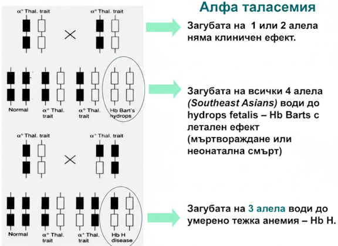Дупликации (относително чести):
- Болест на Charcot-Marie-Tooth тип 1A (CMT1A):
Най-честата форма на боластта е причинена от 1,5 Мв дупликация (допълнително) копие на РМР22 гена.
По-леката форма на болестта се причинавя от делеция на едно копие на PMP22 гена.
Инверсия (рядка):
Инсерция (рядка):
- Неврофиброматоза:
- Инсерция на SINEs Alu секвенция в гена.
Субституции (най-честата причина за мутагенеза в човешкия геном):
- Missense мутация - мононуклеотидна замяна
- Сърповидно клетъчна анемия
- Фенилкетонурия
Амплификация:
Молекулни последствия от патогенни варианти (мутации)
I. "Gain of Function" (Увеличаване на функцията)
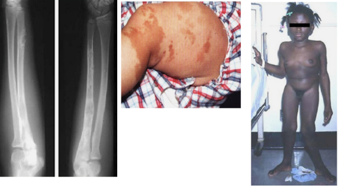II. "Loss of Function" (Загуба на функция)
- Автозомно-рецесивни заболявания.
Редуцирана или отсъстваща функция на генен продукт.
Най-честият тип мутации.
Хомозиготите не произвеждат функционален протеин
→
болест.Хетерозиготитете са незасегнати, с 50% нормална генна активност, която е достатъчна.
- Пример: ВНХ - Вродена надбъбречна хиперплазия:
- 21-хидроксилазен дефицит: води до различна степен на вирилизация при момичета (46,XX).
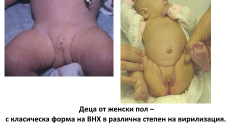
III. Изключения: Loss of Function с АД тип унаследяване
В някои случаи загубата на функция се проявява доминантно чрез два механизма:
- Доминантен негативен ефект:
- Хаплоинсуфициенция на белтъчния продукт:
Различните патологични варианти (мутации) в един и същ ген може да доведат до различни болести с различен функционален ефект
Амплификация в андроген-рецепторния ген води до Gain-of-Function ефект и Спинобулбарна мускулна атрофия (синдром на Кенеди).
Точкова мутация в андроген-рецепторния ген води до Loss-of-Function ефект - напълно различен фенотип на Синдром на андрогенна нечувствителност (синдром на Морис)
4. Етиология на хромозомните болести.
Видове хромозомни мутации и механизъм на получаване. Унипарентална дизомия.
Хромозомните болести са сложни вродени симптомо-комплекси, дължащи се на бройни или структурни нарушения в кариотипа.
I. Клиничен спектър и характеристики
- Засегнати групи:
- Семейства с инфертилитет (стерилитет, спонтанни аборти, мъртвораждания).
- Живородени с множествени аномалии (физическо и умствено изоставане).
- Основни факти:
- >90% от ембрионите с хромозомна аномалия не доживяват до термин.
- Множество органи са въвлечени, особено ЦНС.
- Намалена продължителност на живота и фертилитет.
- Увеличен риск от малигненост при: тризомия 21, del13q, del11p и 46, XY гонадна дисгенезия.
Сравнителна характеристика
| Автозомни болести | Гонозомни (полови) болести |
| По-редки, но по-тежки | По-чести и по-леки |
| Множествени малформации | Нарушения в растежа и половото развитие |
| Тежко умствено/физическо изоставане | Съвместими с живота |
| Пациентът прилича повече на други болни със същия синдром, отколкото на роднините си | Често се откриват случайно при амниоцентеза или за инфертилитет |
II. Честота на хромозомните аномалии
Обща честота сред новородените: 9.0 на 1000 раждания (~1/110).
- Автозомни: Тризомия 21 (1.5/1000), Тризомия 18 (0.3/1000), Тризомия 13 (0.2/1000).
- Полови (Женски пол): 45,X (0.1/1000), 47,XXX (1.0/1000).
- Полови (Мъжки пол): 47,XXY (1.0/1000), 47,XYY (1.0/1000).
- Структурни: Балансирани (3.0/1000), Небалансирани (1.0/1000).
III. Етиология на бройните аномалии
1. Анеуплоидии (Тризомия и Монозомия)
При анеуплоидиите дисбалансът се дължи на засягане на отделна двойка хомоложни хромозоми.
- Тризомия: Наличие на една допълнителна хромозома в двойката (общо 3).
- Монозомия: Липса на едната хромозома от двойката (общо 1).
Механизми на възникване:
- Non-disjunction (Неразделяне): Нарушение на правилното разпределяне на хомоложните хромозоми или сестринските хроматиди в дъщерните клетки по време на клетъчното делене (мейоза или митоза).
- Влияние на пола и възрастта: Това е често срещано явление, възникващо главно по време на овогенезата. Рискът от анеуплоидии нараства значително с напредване на възрастта на майката.
- Анафазно изоставане (Загуба на хромозома): Хромозомата не успява да се придвижи до полюса и се губи.
- Пример: Монозомия Х (45,X), възникнала вследствие на загуба на Y-хромозомата по време на мейоза при мъжа.
2. Мозаицизъм
Мозаицизмът е наличие на две или повече клетъчни линии с различен генетичен състав (кариотип) в един организъм, произлизащ от една зигота.
- Механизъм: Дължи се на митотично неразделяне в ранните етапи на ембрионалното развитие.
- Клинично значение: Фенотипът при мозаичните форми обикновено е по-лек в сравнение с пълните анеуплоидии, тъй като наличието на нормална клетъчна линия частично компенсира генетичния дефект.
3. Полиплоидии (Триплоидия и Тетраплоидия)
При тях е засегнат целият хромозомен набор (умножаване на хаплоидния брой n).
- Триплоидия (3n = 69 хромозоми):
- Механизъм: Цялостно неразделяне на хромозомния набор по време на мейоза.
- Възниква при оплождане на диплоидна герминативна клетка от хаплоиден сперматозоид или при оплождане на хаплоидна яйцеклетка от два сперматозоида (диспермия).
- Тетраплоидия (4n = 92 хромозоми):
- Механизъм: Неуспешно първо разделяне (цитокинеза) на дъщерните клетки в ранната зигота след оплождането.
Структурни хромозомни аномалии
Структурните аберации са резултат от разкъсване на хромозомите, последвано от неправилно пренареждане на сегментите.
1. Вътрехромозомни аберации
Засягат структурата на една отделна хромозома.
- Делеции: Загуба на част от хромозомата (фрагмент или цяло рамо). Обикновено засягат голям брой гени и водят до разпознаваеми клинични синдроми.
- Терминални: Загуба на края на рамото.
- Интерстициални: Загуба на вътрешен сегмент.
- Дупликации: Удвояване на хромозомен сегмент. Обикновено имат по-леки последствия за фенотипа в сравнение с делециите.
Механизъм: Делециите и дупликациите често възникват едновременно при неравен кросинговър по време на мейоза.
- Инверсии: Сегмент от хромозомата се разкъсва на две места, завърта се на 180° и се реинтегрира без загуба на генетичен материал (балансирана аберация).
- Парацентрични: Точките на разкъсване са в едното рамо (не включват центромера).
- Перицентрични: Разкъсванията са от двете страни на центромера (включват го).
- Пръстеновидни хромозоми (Ring chromosomes): Образуват се при разкъсване в двата края на хромозомата и последващо сливане на „лепкавите“ краища в кръг.
- Изохромозоми: Небалансирани аномалии, при които едното рамо е дуплицирано, а другото е делетирано (хромозомата се състои от две идентични рамена - две къси или две дълги).
- Дицентрични хромозоми: Хромозоми с два центромера, получени при сливането на два разкъсани хромозомни фрагмента.
2. Междухромозомни аберации (Транслокации)
Аберации, при които две (или повече) хромозоми обменят фрагменти.
- Реципрочни транслокации: Взаимна обмяна на терминални фрагменти между две нехомоложни хромозоми. Обикновено са балансирани при носителя.
- Робертсонови транслокации: Специфични за акроцентричните хромозоми (групи D и G: 13, 14, 15, 21, 22). Две акроцентрични хромозоми се сливат в областта на центромерите, като се губят късите им рамена (p-рамена).
- Нереципрочни транслокации (Инсерции): Вътрешен фрагмент от една хромозома е вмъкнат в друга хромозома.
3. Други цитогенетични находки
- Маркерни хромозоми: Малки, допълнителни структурно преустроени хромозоми, чийто произход често не може да се определи чрез стандартно цитогенетично оцветяване (изискват FISH или CMA).
- Хромозомна чупливост и нестабилност: Специфични прекъсвания, които се наблюдават при култивиране на клетките в специални среди; често асоциирани със синдроми на ДНК репарацията.
Унипарентална дизомия (UPD):
5. Основни методи за генетичен анализ при човека.
Генеалогичен метод – същност, възможности и приложение.
1. Генеалогичен (родословен) метод
Това е основен метод за изследване на наследствеността на организмово ниво чрез проучване на разпределението на признаците в семейството (родословието).
Същност и терминология:
- Пробанд: Лицето, от което започва генетичното изследване и съставянето на родословното дърво (обикновено засегнатият индивид).
- Сибси: Братята и сестрите в едно поколение.
- Кръвно родство: Генетична връзка между индивиди чрез общ предшественик.
Цели на генеалогичния анализ (Първи етап на Генетичната консултация):
- Установяване на типа на унаследяване на заболяването.
- Определяне на вероятните генотипове на родствениците.
- Подпомагане на генетичната диагноза.
- Изчисляване на риска за повторение в следващите поколения.
Изграждане на родословия
- Използват се специфични, общоприети символи.
- Започва се от пробанда, който се означава със запълване на символа и сочеща го стрелка.
- Лицата от едно поколение се разполагат хоризонтално на една линия, срещу която се намира номера на поколението, означен с римска цифра, а с арабска цифра се отбелязват самите индивиди.
- Кръвнородствени бракове, спонтанни аборти, мъртвораждане се отбелязват със съответния символ.
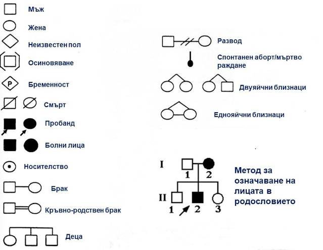
Кръвнородствени бракове
- Имат особено значение при редки автозомно-рецесивни заболявания.
- Кръвното родство увеличава многократно вероятността за бракове между хетерозиготи по един и същ болестен алел.
- Колкото по-рядко е едно рецесивно разстройство, толкова по-голяма е честотата на кръвно родство сред родителите на засегнатите индивиди.
- Степени на родство: I, II, III, IV, V степен.
2. Популационно-генетичен метод (нз дали е нужен)
Изучава закономерностите на разпространение на наследствените признаци и алелните честоти в големи групи от населението.
Закон на Харди-Вайнберг (Hardy-Weinberg)
Законът свързва честотата на генотиповете в даден локус с фенотипните честоти в популацията. Той гласи, че ако една популация е в равновесие, алелните честоти не се променят от поколение в поколение.
Математическа зависимост:
За локус с два алела — доминантен (p) и рецесивен (q):
- p + q = 1 (сборът на алелните честоти)
- p^2 + 2pq + q^2 = 1 (сборът на генотипните честоти)
Където:
- p^2 – честота на доминантните хомозиготи (DD)
- 2pq – честота на хетерозиготите (Dd)
- q^2 – честота на рецесивните хомозиготи (dd)
Приложение на закона при различни типове унаследяване:
- Автозомно-доминантно (АД) унаследяване:
- Честотата (p) на мутантния алел обикновено е много по-малка от честотата (q) на нормалния алел.
- Автозомно-рецесивно (АР) унаследяване:
- Използва се за изчисляване на честотата на носителите (2pq), когато е известна честотата на болните (q^2).
- Пример: При честота на заболяването 1:10 000 (q^2 = 0.0001), честотата на алела q е 0.01, а на носителите 2pq е приблизително 0.02.
- Х-свързано рецесивно унаследяване:
- Отнася се основно към жените, които носят два алела за всеки Х-свързан ген. При мъжете честотата на признака съвпада с честотата на съответния алел (тъй като имат само една Х-хромозома).
6. Цитогенетични методи – същност, възможности и ограничения, показания за провеждане
Цитогенетичните методи позволяват рутинно хромозомно изследване за откриване на бройни и структурни хромозомни аномалии в кариотипа.
1. Етапи на цитогенетичното изследване
Изследването се извършва върху живи клетки, които могат да се делят в клетъчна култура (най-често лимфоцити от периферна кръв).
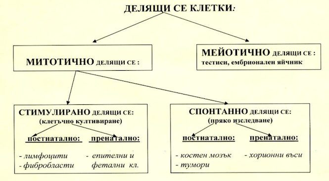
Технологичен процес:
- Вземане на материал: Малко количество кръв (0.5 – 1 мл) в хепаринизирана епруветка (стерилни условия).
- Култивиране: Кръвта се поставя в среда с митоген (стимулира деленето) за 72 часа при 37°C.
- Спиране на митозата: 2 часа преди края се добавя колцемид (блокира делителното вретено в стадий метафаза).
- Хипотонична обработка: Използва се разтвор на KCl, за да набъбнат клетките и хромозомите да се раздалечат.
- Фиксация: Трикратна обработка с фиксатор (метанол и ледена оцетна киселина).
- Приготвяне на препарат: Капване на седимента върху предметно стъкло
- Оцветяване.
Анализиране (Prophase, Metaphase, Anaphase, Telophase)
2. Лентови (бендинг) техники – G-оцветяване
- Чрез диференциално оцветяване се визуализира специфичната структура на всяка хромозома.
- G-бендинг (Giemsa): Най-разпространеният метод. Препаратите се обработват с трипсин (денатурира протеините) и се оцветяват с Гимза.
- Резултат: Редуващи се тъмни и светли ленти.
- Тъмни ленти (G-позитивни): Региони, богати на Аденин (А) и Тимин (Т). Те се делят по-късно и съдържат по-малко активни гени.
- Светли ленти: Региони, богати на Гуанин (Г) и Цитозин (Ц).
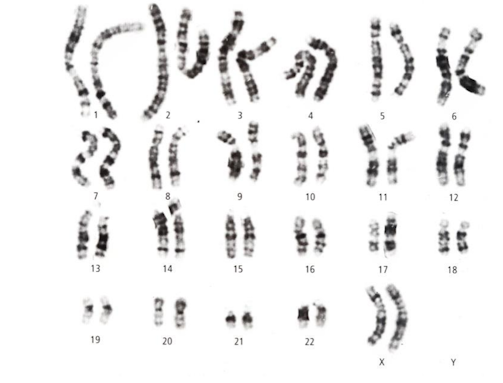
3. Показания за цитогенетично изследване
Постнатално (след раждането):
- Множествени вродени аномалии или дисморфизъм.
- Необяснимо умствено изоставане или изоставане в нервно-психическото развитие (НПР).
- Двусмислен пол или отклонения в половото/физическото развитие.
- Инфертилитет, стерилитет и повтарящи се спонтанни аборти.
- Фамилно изследване при доказана структурна аномалия в семейството.
- Онкохематологични заболявания (левкемии).
Пренатално (преди раждането):
- Бременни жени над 35 години.
- Предишно дете с хромозомна аномалия или малформации.
- Родител, който е носител на балансирано хромозомно преустройство.
- Материал: Амниотични клетки (амниоцентеза) или фетална кръв.
4. Предимства и недостатъци
Предимства:
- Визуализира едновременно всички 23 двойки хромозоми (пълен обзор на генома).
- Единствен метод за сигурна диагностика на балансирани преустройства (инверсии, транслокации).
Недостатъци и ограничения:
- Ниска резолюция: Не могат да се видят дефекти под 5 Mb (микроделеции и микродупликации).
- Време: Поради нуждата от клетъчно култивиране, резултатът се получава след около 3 седмици.
- Живи клетки: Изисква се специфичен транспорт и обработка на материала, за да останат клетките жизнеспособни.
7. Молекулярно-цитогенетични методи - същност, възможности и ограничения, показания за провеждане.
Тези методи съчетават прецизността на молекулярната биология с цитогенетичния анализ, позволявайки по-висока разделителна способност.
1. FISH (Флуоресцентна in situ хибридизация)
Същност:
- Методът се базира на способността на къс фрагмент едноверижна ДНК (сонда), маркирана с флуоресцентно багрило, да се свързва (хибридизира) със своята комплементарна прицелна последователност в ДНК на пациента.
- Може да се прилага върху делящи се клетки (метафаза) и неделящи се клетки (интерфазни ядра).
Етапи на FISH:
- Фиксация на клетките
- Приготвяне на препарата
- Хибридизация на сондата
- Отмиване на несвързаната сонда
- Визуализиране под флуоресцентен микроскоп
- Интерпретация: Оценява се броят и локализацията на флуоресцентните сигнали (Нормална, Дупликация, Делеция)
Видове сонди:
- Центромерни сонди: ДНК секвенции във и около центромера на определена хромозома. За бърза пренатална диагностика на анеуплоиди (13, 18, 21, X, Y) в интерфазни клетки.
- Локус-специфични сонди: уникални ДНК секвенции за идентифициране на малки субмикроскипски делеции и дупликации от групата на т. нар. микроделеционни синдроми (Prader-Willi, Angelman, Williams, DiGeorge).
- Хромозом-специфични сонди: коктейл от сонди от различни части на определена хромозома за разкриване на “неуловими” транслокации и допълнителен хромозомен материал при тумори.
Показания за провеждане на FISH
- Диагностика на малигнени неоплазии (левкемии, лимфоми и солидни тумори) за откриване на характерни транслокации или амплификации (напр. HER2 при рак на гърдата).
- Примери за синдроми: Williams синдром (del 7q11), Prader-Willi синдром (del 15q12), diGeorge синдром (del 22q11).
Предимства и недостатъци:
- Предимства:
- Много по-кратко време за резултат (не винаги изисква 72-часово култивиране).
- Висока разделителна способност - може да се използва за диагностика на микроделеционни и микродупликационни синдроми.
- Недостатъци:
| Аберация / Аномалия | G-banding | FISH |
| Анеуплоидия | + | + |
| Балансирано пренареждане (транслокация, инверсия, инсерция) | + | + |
| CNVs >5–10Mb | + | + |
| CNVs <5–10Mb | - | + |
| Делеции на единичен екзон | - | - |
| Полиплоидии | + | + |
| Минимално ниво на мозаицизъм | 10% (при гледане на 30 метафази) | 2–5% в зависимост от характеристиките на сондата |
| Клонове | + | + |
2. Хромозомен микрочипов анализ (CMA)
Съществуват два основни типа масиви за откриване на промени в броя на копията (CNV – Copy Number Variations, т.е. делеция или дупликация на участък от ДНК):
А. Масивна сравнителна геномна хибридизация (array CGH - aCGH)
- Позволява цялостно сканиране на генома за наличие на допълнителен или липсващ генетичен материал в единичен експеримент.
Използва по-големи олигонуклеотидни сонди, разположени в генома.
Провежда се с използване на ДНК микрочипове.
ДНК микрочип представлява твърда повърхност, върху която се намират ДНК фрагменти, като всеки фрагмент е представител на специфичен ген или хромозомен участък.
- Предимства:
Позволява откриването на малки CNV (например делеции на единичен екзон).
Позволява едновременно да се тестват множество локуси в генома.
По-добра разделителна способност на метода, сравнено с цитогенетичния метод (кариотипиране).
- Докато FISH не може да открие нещо, за което няма сонда, aCGH намира нови микроделеции, атипични CNV и др.
- Недостатъци:
За разлика от SNP масивите, не могат да определят генотипа на съответния SNP.
Не позволяват откриването на балансирани
хромозомни преустройства
(транслокация, инверсия или инсерция).- Не може да се използва при съмнение за полиплоидия (напр. триплоидия).
- Не може да се използва за диагностика на моногенни заболявания.
Показания за провеждане на array CGH
- Разкриване на хромозомни мутации – например микроделеционни, микродупликационни синдроми
- Предимплантационна диагностика
- Анализ на генна експресия в тъканна проба (тумор)
Б. Масиви от геномни еднонуклеотидни полиморфизми (SNP array) - нз дали е нужно
- Анализират еднонуклеотидни полиморфизми (SNP) в целия геном.
- Предимства:
Откриване на CNV при най-висока резолюция (10-100 kb).
Идентифициране на загуба на хетерозиготност (LOH).
Диагностика на анеуплоидии и еднородителски изодизомии (UPD).
Установяване на генетична идентичност по произход, полиплоидия и химеризъм.
- Недостатъци:
| Аберация / Аномалия | G-banding | FISH | aCGH | SNP array |
| Анеуплоидия | + | + | + | + |
| Балансирано пренареждане (транслокация, инверсия, инсерция) | + | + | - | - |
| CNVs >5–10Mb | + | + | + | + |
| CNVs <5–10Mb | - | + | + | + |
| Делеции на единичен екзон | - | - | + | - |
| Полиплоидии | + | + | - | + |
| Минимално ниво на мозаицизъм | 10%
(при гледане на 30 метафази) | 2–5%
в зависимост отхарактеристиките на сондата | 20%
в зависимост от покритието на сондата и размера на CNV
| 5-10%
в зависимост от покритието на сондата и размера на CNV
|
| Клонове | + | + |
Хромозомен микрочипов анализ - синдроми
Williams синдром (del 7q11)
DiGeorge синдром (22q11.2 deletion)
Prader–Willi / Angelman синдром (15q11–q13)
Cri-du-chat синдром (5p15)
Карцином на гърдата – HER2 амплификация, 17q
Колоректален карцином – 18q делеция, 8q амплификация
- и т.н.
3. Multiple Ligation-Dependent Probe Amplification (MLPA) - нз дали трябва
(Мултиплексна лигазно – зависима амплификация на сонди)
MLPA е полуколичествена техника за оценка на броя на копията чрез мултиплексен анализ на размера на фрагмента.
Принцип на метода:
- Хибридизация: Двойки сонди, специфични за определена последователност, хибридизират към интересуващата ни ДНК.
- Лигиране: Сондите се лигират (свързват) само ако са точно комплементарни на прицелната ДНК.
- Амплификация: Лигираните сонди се амплифицират.
- Идентификация: Всеки целеви регион има „специфична последователност“ и уникална дължина, което позволява едновременно идентифициране на множество (мултиплексни) мишени.
Приложение:
- Откриване на малки CNV: Методът е най-подходящ за засичане на делеции на единичен ген или повтарящи се синдроми на микроделеции/дупликации.
- Търговски комплекти: Предлагат се готови диагностични китове за специфични локуси, като:
8. Молекулярно-генетични методи (ДНК анализ) - същност, възможности и ограничения, показания за провеждане
Основни етапи на анализа:
- Изолиране на ДНК
- Амплификация на ДНК
- Анализ на амплифицираната ДНК
Подходи за идентифициране на гени и заболявания
1. Функционално клониране
Стратегия за генна идентификация, при която информацията за генния продукт (функцията) е известна и се използва за намиране на гена.
Логика: Функция → Ген → Картиране
Основни стъпки:
- A) Идентификация на абнормен протеин и секвениране на аминокиселинната му последователност.
- B) Определяне на ДНК кода.
- C) Локализация на секвенцията в генома.
Примери: Таласемии, сърповидноклетъчна анемия, хемофилия.
Секвенцията представлява подредбата на нуклеотидите в ДНК, която носи генетичната информация и определя структурата и функцията на гените и белтъците.
2. Позиционно клониране („Обратна генетика“)
Стратегия за генна идентификация, при която информацията за хромозомната позиция на гена е известна предварително.
Логика: Карта → Ген → Функция
Основни стъпки:
- A) Хромозомна локализация.
- B) ДНК секвениране на региона и идентифициране на консервативни секвенции и потенциални РНК транскрипти.
- C) Търсене на протеин и изготвяне на протеинов модел.
Примери: Мускулна дистрофия, кистична фиброза, синдром на чуплива Х-хромозома, ретинобластом, тумор на Wilms.
Материал за генетично изследване
Източници на геномна ДНК:
- Периферна кръв: Трябва да е антикоагулирана с EDTA (Хепаринът НЕ Е подходящ, тъй като инхибира PCR реакцията).
- Пренатални проби: Хориални въси, амниоцити (амниоцентеза).
- Други: Свежа или замразена тъкан, лимфобластоидни клетъчни линии, смив от букална лигавица.
- Фиксирани тъкани: ДНК може да се екстрахира от парафинови блокчета (напр. при фамилни случаи на рак на млечната жлеза).
EDTA (етилендиаминтетраоцетна киселина) е хелатиращ агент, използван като антикоагулант в лабораторната практика.
Изолиране на ДНК
За амплификация и последващ анализ е необходима пречистена ДНК. Процесът включва следните задължителни етапи:
- Лизиране на клетъчните мембрани.
- Разделяне на ДНК от клетъчните отломки (протеини, липиди).
- Премахване на солите.
Полимеразна верижна реакция (PCR)
In vitro (неклетъчно) ДНК клониране – метод за получаване на голямо количество специфичен сегмент ДНК (амплифицирани копия).
PCR Протокол
Цикличен процес, който се извършва при различна температура и включва 3 стъпки, повтарящи се ~25-40 пъти:
- Топлинна денатурация (94°C): Разплитане на изходната двуверижна ДНК.
- Свързване / Анийлинг (60°C): Свързване на 2 олигонуклеотидни праймера, комплементарни на 3' краищата на единичните вериги.
- Удължаване / Екстензия (72°C): Синтез на нови вериги с помощта на термоустойчив ензим ДНК полимераза и нуклеозидтрифосфати до получаване на копия на ДНК фрагмента.
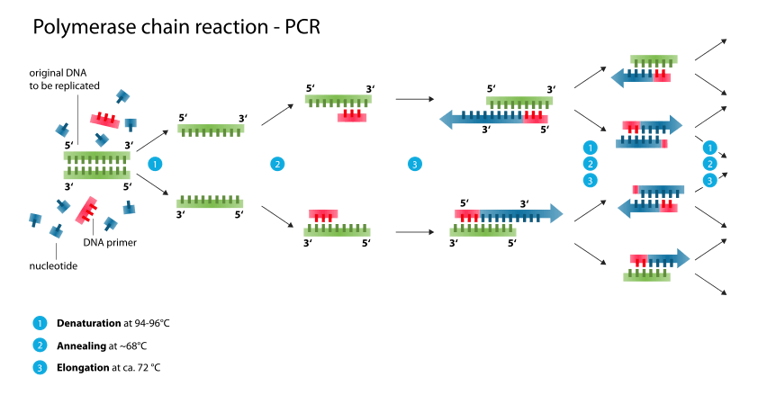Предпоставки:
- ДНК полимеразата не може самостоятелно да „разплете“ веригите.
- ДНК полимеразата не може да започне синтез de novo – тя само удължава съществуващи вериги.
Резултат:
- Количеството на продуктите нараства в геометрична прогресия. Общото време на експеримента е 1-2 часа.
Анализ на амплифицираната ДНК: Електрофореза
ДНК копията се визуализират чрез гел-електрофореза и оцветяване с етидиев бромид, който флуоресцира на UV светлина.
- Принцип: Поставени в електрично поле, отрицателно заредените ДНК молекули се движат към положителния полюс. Скоростта им е в обратна зависимост от техния размер (по-малките фрагменти се движат по-бързо).
Предимства и недостатъци на класическия PCR
- Предимства:
Висока скорост на намножаване.
Изключителна чувствителност (възможност за анализ от 1 клетка).
Техническа простота и пълна автоматизация.
- Недостатъци:
- Приложение:
Количествен PCR (Real-time PCR) - нз дали трябва
За разлика от класическия PCR, който е качествен метод, Real-time PCR позволява количествено определяне на ДНК матрицата в „реално време“.
Основни принципи:
- Инструмент: Комбинира програмируем термостат и флуоресцентен детектор.
- Отчитане: Данните се вземат в експоненциалната фаза на процеса, когато факторите на средата не са лимитиращи.
- Хидролизна сонда (TaqMan): В реакционната смес се добавя олигонуклеотидна сонда, маркирана с флуоресцентно багрило и гасител (quencher).
- Механизъм: В хода на удължаването, ДНК полимеразата разгражда сондата (чрез своята 5’ екзонуклеазна активност), което освобождава багрилото и генерира флуоресцентен сигнал.
Приложение: Идентифициране на мутации, изследване на полиморфизми и маркиране на мутантни хромозоми.
9. ДНК секвениране – секвениране по Sanger и секвениране от следващо поколение (NGS): същност, възможности и ограничения, показания за провеждане
Секвенирането е „златният стандарт“ в молекулярната генетика. То позволява разчитане на ДНК последователността база по база и се използва за откриване на точкови мутации.
1. Секвениране по Сангър (Sanger Sequencing)
Разработено през 1977 г., то остава най-точният метод за изследване на единични гени или специфични ДНК фрагменти.
Секвенцията на едноверижна ДНК се определя чрез ензимен синтез на комплементарна верига, чиято синтеза се спира на определено място.
Същност на метода:
Ако към системата се добави ензима ДНК полимераза и четирите дезоксирибонуклеотидтрифосфата (АТФ, ГТФ, ЦТФ и ТТФ), ще започне синтеза на втора верига, която обикновено продължава до прибавяне на няколко хиляди нуклеотида.
Това обаче не става, ако към реакционната смес се добави малко количество дидеоксинуклеотид (например ддАТФ).
Ензимът не различава нормалните дНТФ от ддНТФ, така че ддНТФ може да бъде добавен към растящата верига и тогава той блокира по-нататъшното нарастване на веригата, защото няма 3 ́-ОН група.
Отчитане:
- Фрагментите се разделят чрез капилярна електрофореза.
- Всеки ддНТГ е белязан с различен флуоресцентен цвят, който се разчита от лазерен детектор под формата на пикове (хроматограма).
2. Секвениране от следващо поколение (NGS)
Нарича се още масово паралелно секвениране, тъй като протича в една реакция и позволява целият човешки геном да бъде секвениран за едно денонощие.
Видове NGS анализи:
- Таргетно секвениране (Генни панели): Изследва се определен набор от гени, свързани с конкретно заболяване.
- Цялоекзомно секвениране (WES): Секвенират се само кодиращите региони на генома (екзома), които представляват около 1-2% от общата ДНК, но съдържат ~85% от болестотворните мутации.
- Цялогеномно секвениране (WGS): Определя се пълната нуклеотидна последователност на целия геном (кодиращи и некодиращи региони).
Показания за провеждане на цялоекзомно/цялогеномно секвениране:
- Диагностика на състояния с голяма генетична хетерогенност (много гени причиняват един и същ симптом).
- Когато предишни генетични изследвания не са открили генетичната причина.
- Неизяснено умствено изоставане или дисморфичен синдром.
- Фамилни форми на ракови заболявания.
Предимства и недостатъци на NGS:
- Предимства:
Едновременно изследване на цели геноми и на панели от голям брой гени при няколко пациента.
Идентифицира нови кандидат гени.
Бързина на изследване, недостижима със стандартното секвениране.
Точност на резултата.
Ниска цена на анализа.
- Недостатъци:
3. Спорно бащинство и ДНК идентификация - нз дали трябва
Използват се силно вариабилни (полиморфни) участъци в ДНК, които са уникални за всеки индивид.
Методи за анализ:
- Класически системи: Кръвни групи, изоензими, HLA-хаплотипи (имат по-ниска доказателствена стойност).
- DNA Fingerprints (Минисателитни секвенции): Високо полиморфни маркери, които създават уникален генетичен профил.
- Забележка: Само монозиготните (еднояйчни) близнаци имат идентичен ДНК профил.
- Принцип: Детето наследява по един алел от всеки родител за всеки тестван маркер. Въз основа на честотата на тези алели в популацията се изчислява вероятността за бащинство.
10. Автозомно-доминантно унаследяване – характеристика, генеалогични критерии, рискове, отклонения от нормалния АД-ход, примери.
При АД унаследяване мутантният ген се намира в някоя от 22-те двойки автозомни хромозоми. Само един мутантен алел е достатъчен за експресия на заболяването (хетерозиготно състояние).
1. Класически генеалогични критерии
За да се определи един признак като автозомно-доминантен, той трябва да отговаря на следните критерии в родословното дърво:
- Вертикален ход: Заболяването се предава от поколение на поколение без прекъсване. Всяко болно дете има поне един болен родител.
- Равнопоставеност на половете: Мъжкият и женският пол се засягат с еднаква честота.
- Независимо предаване: Засегнатите родители (мъже или жени) предават белега на децата си независимо от техния пол.
- Риск за потомството: При един засегнат хетерозиготен родител (Aa) и един здрав родител (aa), рискът за всяко дете да бъде болно е 50%.
- Здраво потомство: Фенотипно и генотипно здравите индивиди (aa) раждат само здрави деца.
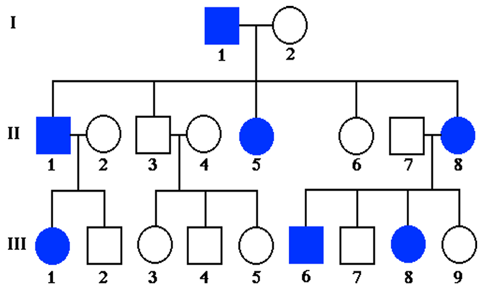
2. Отклонения от класическия АД-ход
Често клиничната картина не следва стриктно класическите правила поради специфични генетични механизми:
- Вариабилна експресивност: Едни и същи мутантен ген се проявява с различна тежест при различните индивиди (от минимални симптоми до пълна клинична изява).
- Плейотропен ефект: Един-единствен ген причинява множество дефекти в различни, на пръв поглед несвързани органи и системи.
- Непълна пенетрантност: Индивидът притежава мутантния алел, но няма никакви клинични прояви (фенотипно здрав). Това е феноменът „всичко или нищо“.
- Късно начало: Симптомите не са налични при раждането, а се появяват в по-късна възраст (напр. Болест на Хънтингтън).
- Нова мутация: Заболяването се появява за първи път в семейството поради мутация в гаметата на здрав родител. Рискът за следващи сибси е нисък, но пробандът предава гена по АД път.
- Мозаицизъм:
- Гонаден: Мутацията е само в част от половите клетки на здравия родител (риск от повторение при здрави родители).
- Соматичен: Мутацията е настъпила рано в ембриогенезата и засяга само част от клетките на тялото.
3. Клинични примери за АД заболявания
| Заболяване | Кратка характеристика |
| Синдром на Марфан | Засягане на съединителната тъкан (скелет, очи, сърце). Плейотропия. |
| Болест на Хънтингтън | Невродегенеративно заболяване с късно начало (30-50г.). |
| Неврофиброматоза тип I | Петна „мляко с кафе“ и тумори на обвивките на нервите. |
| Ахондроплазия | Най-честата форма на нанизъм (нисък ръст). Чести нови мутации. |
| Фамилна хиперхолестеролемия | Висок холестерол и ранен риск от инфаркт. |
| Бъбречна поликистоза | Прогресивно образуване на кисти в бъбреците. |
11. Автозомно-рецесивно унаследяване – характеристика, генеалогични критерии, рискове, особености, примери.
При АР унаследяване мутантният ген се намира в автозомна хромозома, но се проявява фенотипно само при хомозиготи (аа). Индивидите с един мутантен алел (Аа) са клинично здрави хетерозиготни носители.
1. Клинично-генеалогични критерии
АР унаследяването се отличава със следните характеристики в родословието:
- Хоризонтален ход: Заболяването обикновено се среща само в едно поколение (между сибси). Болните имат клинично здрави родители.
- Равнопоставеност на половете: Мъжете и жените се засягат с еднаква честота.
- Кръвно родство: Честотата на АР заболяванията е значително по-висока при бракове между роднини или в изолирани човешки групи (географски, религиозни или етнически изолати).
- Предаване: Патологичният ген може да се предава през много поколения от здрави хетерозиготи, без да се появи болен индивид.
- Допълнителни характеристики:
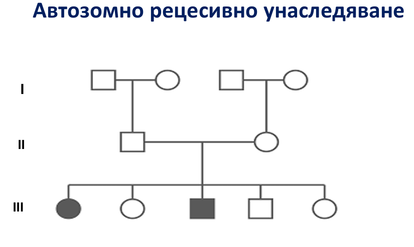
2. Генетичен риск (Решетка на Пънет)
Най-честият сценарий е брак между двама здрави хетерозиготни носители (Aa x Aa). При всяка бременност вероятностите са:
- 25% шанс за болно дете (хомозигот - aa).
- 75% шанс за здраво дете, от които:
- 2/3 (или 50% от общия брой) ще бъдат здрави хетерозиготни носители (Aa).
- 1/3 (или 25% от общия брой) ще бъдат здрави хомозиготи (AA).
3. Генетична хетерогенност
Една и съща клинична картина може да бъде причинена от различни генетични механизми:
- Алелна хетерогенност: Различни мутации в един и същ локус (ген) водят до заболяването.
- Компаунд хетерозигот: Индивид с две различни мутации в двата алела на един и същ ген (напр. над 2000 мутации в CFTR гена при Муковисцидоза):
Aa1 x Aa2 -> a1a2
- Локусна хетерогенност: Мутации в различни гени/локуси водят до един и същ фенотип.
- Пример: АР глухота може да се причини от дефекти в различни гени.
- Двоен хетерозигот: Индивид, който е хетерозигот по два различни гена в два различни локуса:
aaBB x AAbb -> AaBb
4. Клинични примери за АР заболявания
АР заболяванията често са по-тежки и с по-ранно начало (детска възраст) в сравнение с АД болестите.
| Заболяване | Характеристика |
| Кистична фиброза (Муковисцидоза) | Засягане на екзокринните жлези, белите дробове и храносмилането. |
| Спинална мускулна атрофия (СМА) | Дегенерация на мотоневроните; най-честата летална АР болест при новородени. |
| Бета-таласемия | Наследствена анемия поради дефект в синтеза на хемоглобин. |
| Вродена надбъбречна хиперплазия | Нарушен синтез на кортизол, водещ до хормонален дисбаланс. |
| Фенилкетонурия | Вродена метаболитна болест (ензимен дефицит). |
Обща част за тема 11 и тема 12
1. Полово свързани гени
Полово свързани са гените, чиито локуси се намират в половите хромозоми (X или Y). Поради разликата в хромозомния набор при мъжете (XY) и жените (XX), тези гени се експресират по различен начин.
- Мъже (Хемизиготи): Имат само една X-хромозома. Едно копие на мутантен ген върху нея е достатъчно за пълна експресия на заболяването. Мъжете унаследяват своята X-хромозома винаги от майката, а Y-хромозомата – от бащата.
- Жени: Унаследяват по една X-хромозома от всеки родител. При тях унаследяването следва правилата на автозомното (доминантно или рецесивно).
2. Феномен на лайонизация (Х-инактивация)
Хипотезата на М. Лайън обяснява как се компенсира двойната доза гени при жените.
- Същност: В ранната ембриогенеза, във всяка соматична клетка на женския организъм, една от двете X-хромозоми се инактивира на случаен принцип.
- Резултат:
- Жените са естествена мозайка – част от клетките имат активна бащина X, а друга част – активна майчина X-хромозома.
- Инактивираната хромозома остава нефункционална през целия живот на клетката и нейните потомствени клетки. Вижда се като телце на Бар.
- Биологично значение: Уеднаквява се количеството на Х-свързаните генни продукти при двата пола.
3. Типове Х-свързано унаследяване
| Тип | Характеристика при жените | Характеристика при мъжете |
| Х-доминантно | Един мутантен алел е достатъчен за изява на болестта. | Винаги се изявява (често по-тежко). |
| Х-рецесивно | Необходими са два мутантни алела (хомозиготно състояние) за изява. | Винаги се изявява (поради хемизиготност). |
12. Х-рецесивно унаследяване - характеристика, генеалогични критерии, рискове, особености, примери
При този тип унаследяване мутантният ген е локализиран в Х-хромозомата. Тъй като мъжете имат само една Х-хромозома (хемизиготи), патологичният алел винаги се експресира при тях.
1. Клинично-генеалогични критерии за ХР унаследяване
- Полово засягане: Боледуват почти изключително мъже.
- Липса на предаване „баща-син“: Бащата предава на синовете си своята Y-хромозома, поради което болният баща не може да има болен син (ако майката е здрава).
- Предаване чрез здрави жени: Заболяването се предава от клинично здрави жени (хетерозиготни носителки) на техните синове.
- „Скок“ през поколение: Често болни са мъже по майчина линия (вуйчо, дядо по майчина линия).
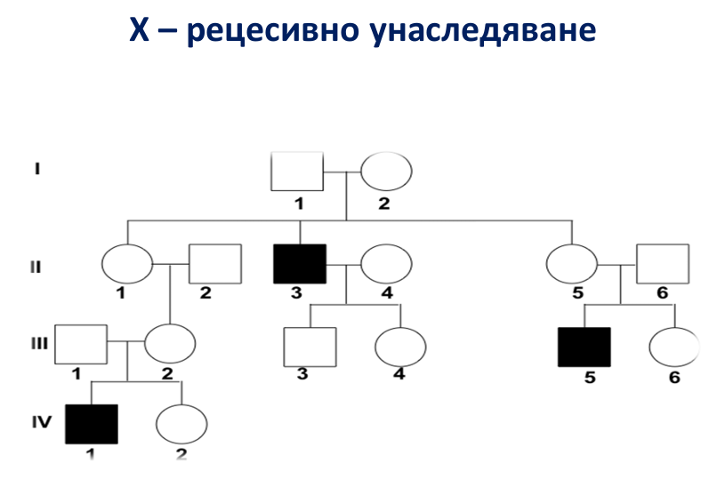
2. Генетичен риск и брачни комбинации
А) Здрава майка-носителка (Xx) и здрав баща (XY):
- Общ риск: 25% за всяка бременност.
- Синове: 50% риск да бъдат болни (xY) и 50% шанс да бъдат здрави (XY).
- Дъщери: Всички са клинично здрави, но 50% са хетерозиготни носителки (Xx).
Б) Болен баща (xY) и здрава майка (XX):
- Синове: 100% здрави (получават Y от бащата и здрава X от майката).
- Дъщери: 100% здрави, но са облигатни носителки (получават мутантната Х-хромозома от бащата).
3. Клинични примери за ХР заболявания
| Заболяване | Характеристика |
| Хемофилия (А и В) | Нарушено кръвосъсирване и риск от тежки кръвоизливи. |
| Мускулна дистрофия (Дюшен/Бекер) | Прогресивна мускулна слабост и дегенерация. |
| Цветна слепота (Далтонизъм) | Нарушено възприятие на цветовете (обикновено червено и зелено). |
| Синдром на чупливата Х-хромозома | Честа причина за умствено изоставане при момчета. |
| Болест на Хънтър | Рядка метаболитна болест (мукополизахаридоза тип 2). |
13. Х-доминантно унаследяване - характеристика, генеалогични критерии, рискове, особености, примери.
Диференциална диагноза между АД и ХД унаследяване.
При ХД унаследяване мутантният алел е локализиран в Х-хромозомата. За разлика от рецесивния тип, тук е достатъчно само едно копие на гена, за да се прояви заболяването както при мъжете, така и при жените.
1. Основни характеристики
- Честота: Среща се много по-рядко от Х-рецесивните заболявания.
- Тежест: Мъжкият пол обикновено е по-тежко засегнат поради липсата на втора (нормална) Х-хромозома.
- Летален ефект: При някои заболявания мутацията е летална за мъжкия пол в пренаталния период (наблюдават се само болни жени и чести спонтанни аборти на мъжки плодове).
2. Клинично-генеалогични критерии
- Вертикален ход: Всеки болен индивид има поне един болен родител (освен при нова мутация).
- Предаване от баща (xY): Болният баща предава патологичния алел на всички свои дъщери (те са 100% болни) и на нито един от своите синове.
- Предаване от майка (Xx): Болната майка (хетерозигот) предава белега на 50% от своите деца (синове и дъщери) – рискът е равен на този при АД унаследяване.
- Здраво потомство: Здравите индивиди не носят гена и имат само здрави деца.
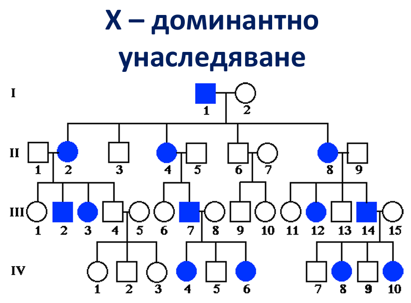
3. Диференциална диагноза: АД срещу ХД унаследяване
Ключовата разлика между двата типа доминантно унаследяване се крие в потомството на болния баща:
| Критерий | Автозомно-доминантно (АД) | Х-доминантно (ХД) |
| Предаване баща-син | Възможно е (50% риск) | Невъзможно (0% риск) |
| Предаване баща-дъщеря | 50% риск | 100% риск (всички са болни) |
| Полово засягане | Еднакво често | По-често при жени (но по-тежко при мъже) |
Запомнете: Никога не се наблюдава предаване от мъж на мъж (баща на син) при Х-свързано унаследяване!
4. Клинични примери
| Заболяване | Особености и Клиника |
| Витамин D-резистентен рахит | Нарушена резорбция на фосфати.
Не се лекува със стандартни дози Вит. D. |
| Инконтиненцио пигменти | Кожни лезии и дефекти.
Летален ефект при мъжки плодове. |
| Синдром на Рет | Тежко невропсихично изоставане.
Среща се почти само при момичета. |
| Х-свързана ихтиоза | Кожно заболяване с дифузно вроговяване (някои форми). |
14. Нетрадиционно унаследяване. Мозаицизъм. Геномен импринтинг и унипарентална дизомия. Примери.
Много моногенни заболявания не следват класическите Менделови закони. Те се дължат на специфични генетични феномени като мозаицизъм, геномен импринтинг и унипарентална дизомия.
1. Мозаицизъм и Химеризъм
Мозаицизъм
Присъствие на ≥ 2 генетично различни клетъчни линии в един индивид, произлезли от една зигота.
Химеризъм
Организъм, съставен от клетки, произлезли от различни зиготи (сливане на две оплодени яйцеклетки).
- Примери: Индивиди с две различни кръвни групи или едновременно мъжки и женски полови органи.
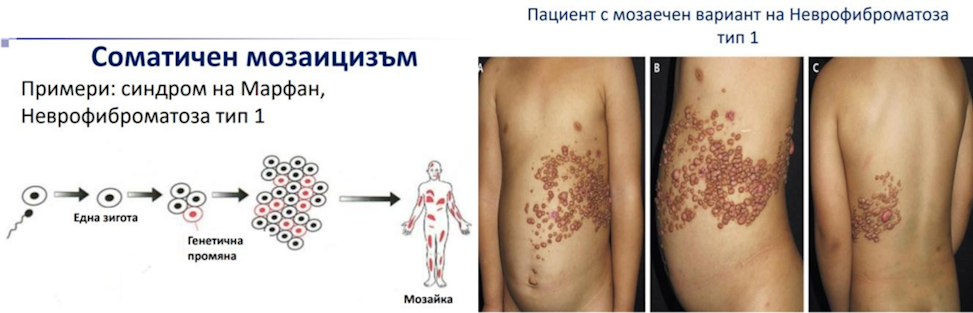
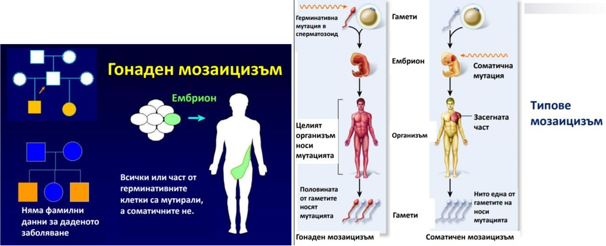
2. Геномен импринтинг
Същност: Епигенетичен механизъм, при който експресията на определени гени зависи от това дали са унаследени от майката или от бащата.
Ключови характеристики:
- За разлика от повечето гени (където и двата алела са активни), при около 100-200 гена само единият алел е активен, а другият е „импринтиран“ (дезактивиран).
- Извършва се чрез метилиране по време на гаметогенезата:
- Хиперметилиране = неактивен (импринтиран) ген.
- Хипометилиране = активен ген.
- Процесът се управлява от специфични „импринтинг контролни центрове“.
Клинично значение:
Нормалното развитие изисква точно едно активно копие. Грешки в този процес водят до патология:
- Нулизомия: Две неактивни копия (липса на генен продукт).
- Свръхекспресия: Две активни копия (двойна доза генен продукт).
Важно: Импринтингът е епигенетична (функционална) промяна, а не мутация в самата ДНК секвенция.
Принципи и Динамика
- Диференцирана активация: Нормалното развитие зависи от функцията на точно определен по пол родителски алел.
- Временност и Обратимост: Импринтингът се нулира и поставя наново във всяка гаметогенеза (овогенеза или сперматогенеза) според пола на самия индивид.
- Локализация: Засяга малък брой гени (<100), съсредоточени в критични области на хромозоми 15, 11 и 7.
Примери: Синдроми на Prader-Willi (PWS) и Angelman (AS)
Два различни фенотипа, причинени от дефекти в един и същ регион — 15q11-12.
| Характеристика | Синдром на Prader-Willi (PWS) | Синдром на Angelman (AS) |
| Липсваща експресия | От бащината хромозома 15 | От майчината хромозома 15 |
| Водещи симптоми | Затлъстяване, хипотония, хипогонадизъм, малки ръце/крака. | „Щастлива кукла“, неадекватен смях, атаксия, епилепсия. |
| Етиология | 75% делеция (pat); 25% UPD (mat). | 70% делеция (mat); 2% UPD (pat); точкови мутации. |
3. Унипарентална дизомия (UPD)
Състояние, при което двете хромозоми от една двойка са унаследени само от единия родител. Кариотипът изглежда нормален (46 хромозоми), но води до патология при импринтираните гени.
Механизми:
- Първоначално сформиране на тризомична зигота и впоследствие загуба на свръхбройната хромозома, т.нар. „тризомично спасение“. (най-чест механизъм)
- Първоначално сформиране на монозомична зигота и впоследствие дупликация на хромозомата и възстановяване на нормалния брой – “монозомично спасение“.
- Оплождане между гамети, едната от които е с нулизомия за някоя хромозома, а другата е дизомична за същата хромозома– т.нар „гаметно допълване“
Видове UPD:
- Унипарентална хетеродизомия - детето получава от единия си родител двете хомоложни хромозоми от хромозомната двойка.
- Унипарентална изодизомия - детето получава от единия си родител две идентични копия на единия хомолог от хромозомната двойка.
Примери: Заболявания при Унипарентална дизомия (UPD)
| Заболяване | Тип UPD | Кратък клиничен ефект |
| Prader-Willi (PWS) | Майчина (UPD15 mat) | Мускулна хипотония (отпуснатост), хиперфагия (вълчи глад) → затлъстяване, нисък ръст, хипогонадизъм. |
| Angelman (AS) | Бащина (UPD15 pat) | „Щастлива кукла“ (неадекватен смях), тежко умствено изоставане, атаксия (лоша координация), гърчове. |
| Beckwith-Wiedemann | Бащина (UPD11 pat) | Свръхрастеж (Макросомия), голям език (макроглосия), дефекти на коремната стена (омфалоцеле), риск от тумори. |
| Silver-Russell | Майчина (UPD7 mat) | Изоставане в растежа, малък ръст, триъгълно лице с изпъкнало чело, асиметрия на тялото (хемихипотрофия). |
| Муковисцидоза + Изоставане | Майчина (UPD7 mat) | Типични симптоми на муковисцидоза (бели дробове/храносмилане) + непропорционално нисък ръст (от Silver-Russel). |
| Хемофилия А | Бащина (UPD XX pat) | Тежки нарушения в кръвосъсирването при момче, унаследено директно от болния баща. |
15. Нетрадиционно унаследяване. Антиципация (динамични мутации). Цитоплазмено (митохондриално) унаследяване. Примери
Редица моногенни заболявания не следват класическите Менделови закони. Те включват феномени като мозаицизъм, геномен импринтинг, UPD, динамични мутации и митохондриално унаследяване.
1. Динамични мутации. Антиципация
- Динамични мутации (нестабилни) – представляват увеличаване на повтарящи се тринуклеотидни ДНК последователности, които увеличават броя на копията си при преминаване в следващите поколения.
- Антиципация – феномен, при който наследственото заболяване се проявява с по-тежка клинична картина и с по-ранно начало от поколение на поколение. Тя се дължи на прогресивно увеличаващия се брой тринуклеотидни повтори. Тези повтори са:
- Разпръснати в генома в близост до или вътре в някои гени
- Силно полиморфни - различни по брой за всеки индивид, нормално представени в малък брой (20-30)
- Стабилни под определен брой (праг) предават се в потомството без промяна в броя, не водят до болест.
- Могат да станат нестабилни и да достигнат стотици дори хиляди по време на мейоза или ранно фетално развитие.
- Причина за десетки моногенни болести, при които е установено явлението антиципация.
Примери за динамични мутации
| Параметър | Миотонична дистрофия (МД) | Синдром на чупливата Х (FraX) |
|---|
| Локус / Ген | 19q / DMPK | Xq27.3 / FMR1 |
| Повтор | CTG (3' край) | CGG (5' край) |
| Норма | 5 – 35 | 6 – 50 |
| Премутация | | 50 – 200 (Трансмитиращи мъже) |
| Пълна мутация | 50 – 4000 | > 200 (Метилиран ген) |
| Унаследяване | Автозомно-доминантно | Х-свързано |
| Основни белези | Миотония, катаракта, мускулна слабост. | Умствено изоставане, макроорхидизъм, аутизъм. Лице удължено, уши стърчащи, големи Относителна макроцефалия Лицев едем (оток) |
Забележка: И при двете заболявания водещият риск за тежка експанзия (антиципация) е свързан с унаследяването от майката.
2. Цитоплазмено (Митохондриално) унаследяване
Специфика на мтДНК
- Структура: Двойно-верижна кръгова молекула без интрони.
- Мутабилност: 10 пъти по-висока от ядрената (липса на репарация, оксидативен стрес).
- Унаследяване: Единствено по майчина линия (чрез цитоплазмата на овоцита). Мъжете не предават мтДНК.
Състояния
- Хомоплазмия:
Наличие в клетките на идентични митохондрии, само с нормална или само с мутантна ДНК. Клиничният ефект е най-силен, когато клетките имат само мутантна мтДНК.
- Хетероплазмия:
Наличие в клетките на два вида митохондрии – с нормални и с мутантни ДНК-и, но в различно съотношение в отделните органи и тъкани и в отделните засегнати индивиди. По-голяма част от митохондриални заболявания са в резултат на хетероплазмия.
Клинични прояви на митохондриалните болести
Засягат се основно енергозависими органи (ЦНС, сърце, мускули).
- Симптоми: Мускулна слабост, загуба на координация, зрителни/слухови дефекти, забавено физическо развитие, деменция, респираторни и сърдечни проблеми.
16. Генетична хетерогенност (алелна и локусна). Плейотропия. Вариабилна експресивност и непълна пенетрантност. Примери.
1. Основни понятия в човешката генетика
- Генотип:
- На ниво организъм: Генетичната конституция на индивида.
- На ниво ДНК: Алелното състояние за даден локус
в
конкретен индивид.
- Фенотип: Изявените характеристики (морфологични, физиологични, биохимични, поведенчески) – резултат от взаимодействието на генотипа със средата.
- Генетичен полиморфизъм: Огромно разнообразие от генотипи и фенотипи в популацията (отнася се за нормални и болестни признаци).
2. Генетична хетерогенност
Явление, при което едно и също заболяване се дължи на различни алелни или локусни мутации.
А. Алелна хетерогенност (Множествен алелизъм)
Наличие на много различни мутации (патогенни варианти) в един и същ ген.
≥ 2 алелни форми в един ген
Примери за нормални признаци:
- ABO кръвна група: 3 основни алела (А и B са ко-доминантни, O е рецесивен).
- Rh кръвна група: Алел D (Rh+). При отсъствие на антиген D – Rh-.
- Други: HLA система, Серумни антигени, α1-антитрипсинова система.
Примери за заболявания:
- Муковисцидоза: > 2000 алела в гена CFTR.
Фенилкетонурия: > 70 алела
Г6ФД > 200 алела
- β-Таласемия: > 30 мутации в β-глобиновия ген.
- Синдром на Марфан: > 100 мутации в гена за фибрилин.
Хемофилия А, В inv в интрон 22 и 1
Дюшен-Бекер МД – 79 екзона
- Синдром на Hurler (Хърлер):
- Тежка форма (мутация в alpha-L-идуронидаза).
- Клиника: грубо лице, ригидни стави, умствен дефицит, мътни корнеи до 1-2г. възраст, широки кости.
- Синдром на Scheie (Шайе):
- По-лека форма (друга мутация в същия ген alpha-L-идуронидаза).
- Клиника: нормален интелект и продължителност на живота, овално лице, деформитет на пръсти тип „граблива птица“, леко помътняване на корнеата.
- МПЗ (Мукополизахаридози):
- Тип Хърлер: Тежка мутация в alpha-L-идуронидаза.
- Тип Шайе: Друг (по-лек) патогенен вариант в същия ген.
Б. Локусна хетерогенност
Мутации в различни гени (локуси) водят до еднакъв фенотип. Различни генотипи формират генокопия.
Фенокопие: Когато същият фенотип се дължи на причини на средата (имитира генетична болест).
- Например: Глухота вследствие на инфекция по време на бременност (рубеола), която имитира наследствена глухота.
Клинично значение:
Заболявания като мускулни дистрофии, хемофилии и липидози симулират фенотипна еднородност, но са генокопия с различен тип унаследяване (AД, AР, XР), което затруднява генетичното консултиране.
Примери за локусна хетерогенност:
| Заболяване | Тип | Локус (Хромозоми) | Описание |
| Бъбречна поликистоза (възрастни) | АД | 16, 4 + нов локус | Прогресивна бъбречна недостатъчност с поликистоза на бъбреците, хипертония. |
| Бъбречна поликистоза (деца) | АР | 6 | Мутация в локус, различен от адултните форми. |
| Глухонемота (несиндромна) | АР | > 50 различни гена | Родители с АР глухота могат да имат здрави деца (двойни хетерозиготи). |
| Остеогенезис имперфекта | АД | 7, 17 | Увреден колаген тип 1 (хр. 17 за alpha1; хр. 7 за alpha2 вериги). |
| Ретинитис пигментоза | Разл. | > 20 региона | Прогресираща загуба на зрението. |
| Фамилен Alzheimer | АД | 1, 10, 12, 14, 19, 21 | Прогресивна деменция с ранно начало. |
| Туберозна склероза | АД | 9, 16 | Припадъци, ангиофиброми, хипопигментни петна. |
| Карцином на гърдата | АД | 13, 17 | Предиспозиция за карцином на гърдата и овариума. |
3. Фенотипна хетерогенност
Явление, при което едни и същи патогенни варианти водят до различна фенотипна (клинична) изява.
А. Плейотропия
Явление, при което един абнормен ген определя множество фенотипни изяви в различни органи и системи. Почти всички моногенни синдроми се дължат на плейотропен ефект.
Клинично значение на плейотропията:
- Диагностично затруднение: Отсъствието на
на всички белези
пречи на клиничната диагноза. - Пръсната симптоматика в родствениците: Различни родственици носят различни белези на синдрома.
- Не може да се прогнозира тежестта в потомството, само риска за повторение.
Таблица: Примери за плейотропия
| Заболяване | Тип | Засегнати органи и системи |
| Синдром на Marfan | АД | Скелет (дълги крайници, арахнодактилия), ССС (дилатация на аорта), Очи (миопия, ектопия на лещата). |
| Osteogenesis imperfecta | АД | Кости (фрактури), зъби (хипоплазия на дентин), склери (сини), кожа (тънка), слух. |
| Муковисцидоза | АР | Потни жлези, бял дроб, панкреас, инфертилитет. |
| Синдром на Ваарденбург | АД | Бял кичур, хетерохромия на ириса, отосклероза (глухота). |
Б. Вариабилна експресивност
Количествени различия в степента на фенотипната изява. Това не е свойство на гена, а на фенотипа, който освен от гена, лежащ в основата му, зависи от останалите гени, средата и техните взаимоотношения.
Причини:
- Алелна хетерогенност
–
различни видове мутации в един и същ ген. Модифициращи гени - взаимодействие с
други гени “genetic backgrounds”.
Пример: Ген в 19
хромозома модифицира изявата на
мекониум илеус при индивиди с
муковисцидоза (ген в 7 хромозома).
- Въздействие на средата
– случаен или
липсата на определен средови фактор
предизвиква значително варираща тежест.
Клинично значение на вариращата експресивност
Вариращата експресивност има критично значение при генетичното консултиране и поставянето на прогноза:
- По отношение риска за повторение в семейството (сегрегант - мутант):
- „Минималната“ симптоматика може да остане незабелязана в родствениците на пробанда.
- Това налага детайлно търсене на признаци чрез специализирани методи:
- Параклинични изследвания.
- Биохимични тестове.
- Молекулно-генетични методи на изследване.
- По отношение прогноза за тежестта на заболяването в потомството:
- Не е възможно да се направи точна прогноза за това колко тежко ще бъде засегнато детето.
- Родител с едва забележима (минимална) симптоматика може да има дете с тежка клинична изява и обратното.
Таблица: Примери за варираща експресивност
| Заболяване | Характер на вариабилността |
| Всички АД заболявания | Характерни са с различна тежест дори в едно семейство. |
| Неврофиброматоза тип 1 | Варира от леки café-au-lait петна до множествени дермални неврофиброми или големи плексиформни неврофиброми. |
| Остеогенезис имперфекта | Членове на едно семейство с една и съща мутация имат различна тежест поради ген-модификатори и фактори на средата (счупвания). |
| Синдром на Marfan | Може да се прояви само като фамилна арахнодактилия или само като ектопия на лещата, без пълната клинична картина. |
| Синдром на Waardenburg | Аномалии в пигментацията (бял кичур), двустранна глухота или лицев дисморфизъм (хипертелоризъм, широка основа на носа). |
| Миотонична дистрофия | Варираща тежест и възраст на начало. |
В. Непълна пенетрантност
Определение: Пенетрантността е “всичко или нищо” феномен: някой или има, или няма болестния фенотип.
- Индивиди с болест-причиняващ генотип не развиват фенотип – наблюдава се „прескачане“ на поколение.
- Възраст-зависима непълна пенетрантност: забавяне във възрастта на начало на болестта.
Причини за непълна пенетрантност:
- Геномен импринтинг
- Х-хромозомна инактивация - загуба на хетерозиготност при жени
- Експанзия на тринуклеотидни повтори
- Взаимодействие с ген-модификатори или продукти на генно действие (модифициращи гени: beta-th, Г6ФД, HbS; хипер-, хипо-статични гени)
- Перистатични (средови) фактори (хомеостаза, хормони)
Клинично значение на непълната пенетрантност:
- Диагностично: Затруднява определянето на типа унаследяване поради “прескачане на поколения”. Важно изключение от правилото, че здрави лица не предават АД заболяване.
- Медико-генетична консултация: Налага корекция при изчисляването на морбидния риск (МР).
МР = Теоретичния риск x П
Пример: при 80% пенетрантност МР = 0,5 x 0,8 = 0,4
Изчисляване на пенетрантността:
Пенетрантността се изчислява в % чрез изследване на огромен брой семейства (облигатни хетерозиготи за АД или хомозиготи за АР болести):
П % = Брой болни/Брой носители (болни и здрави)
Таблица: Примери за непълна и възраст-зависима пенетрантност
| Група примери | Заболявания |
| Класически примери | Ретинобластом, Полидактилия, Пигментен ретинит. |
| Възраст-зависими | Болест на Huntington, Бъбречна поликистоза при възрастни, Фамилна болест на Alzheimer. |
| Фамилни карциноми | Фамилна аденоматозна полипоза, Фамилен рак на гърдата. |
| Синдромни и метаболитни болести | Синдром на Marfan, Миотонична дистрофия, Неврофиброматоза I и II тип, Фамилна хиперхолестеролемия. |
Значение на изясняването на генетичната и фенотипна хетерогенност
- Точна клинична и генетична диагноза в МГК.
- Разгадаване на нетрадиционното унаследяване.
- Предсказване на клиничния изход.
- Адекватна пренатална диагностика.
- Пътища за лечение.
17. Мултифакторно унаследяване (прагов ефект). Характеристика и генетични рискове.
1. Взаимодействие между генетиката и външните фактори
В медицината съществуват два основни модела на унаследяване на патологията:
- Моногенно унаследяване: Болести, причинени от дефект в един ген (Менделиращи).
- Мултифакторно унаследяване: Включва вродени аномалии и често срещани (социално-значими) болести при възрастните.
Принципи на мултифакторното унаследяване
- Мултифакторен: Терминът се използва за означаване на белези, причинени от комбинация от множество генетични и негенетични (средови) фактори.
- Полигенен: Унаследяване, при което са включени само генетични фактори.
- Важно: Мултифакторен ≠ Полигенен!
Въпреки че нарушенията са фамилни, няма ясно различим тип
на унаследяване (по хоризонтала или вертикала) в конкретно
семейство, но има натрупване на засегнати родственици.
Гените и факторите на средата, определящи
мултифакторния белег/болест варират между отделните
индивиди.
Модели на мултифакторно унаследяване:
1. Полигенно (количествено) унаследяване:
Основен модел на мултифакторно унаследяване.
Същност: Изява на фенотип, определен от много гени в различни локуси, всеки с еднакъв малък кумулативен ефект.
Примери: Цвят на кожата, Интелигентност, Кръвно налягане.
Характеристики:
Непрекъсната крива на стойностите (нормално Гаусово разпределение).
Значителна вариабилност с неограничен брой междинни стойности.
Детето най-често изразява средни родителски стойности (тъй като всеки родител предава половината от гените си).

2. Прагов модел (Принцип „всичко или нищо“)
Обяснява как теорията за количествените (преходни) белези се прилага при качествените (непреходни) болести.
- Генетичните и средовите фактори се разглеждат като една цялост, създаваща предразположение.
- Критичен праг: Фенотипът с ново качество (болест) се изявява само когато предразположението надхвърли този праг.
Примери за мултифакторни болести с прагов ефект:
- Хипертония: Повишено кръвно налягане над определени стойности.
- Цепка на небцето: Предразположението е мултифакторно, но се изявява само над определен праг.
- Извод: Разликата между „норма“ и „болест“ е условна и често е само „една стъпка“ по кривата на предразположението.
3. Смесен модел за генетична предразположеност към заболявания
Определение: Модел, който обединява Менделовото унаследяване с мултифакторното влияние. Основава се на действието на един главен ген (major gene) със значителен ефект, който функционира в среда от допълнителни гени и външни фактори.
- Характеристики на модела:
- Главен ген: Един локус определя основната част от вариабилността на белега. Трите възможни генотипа (AA, Aa, aa) задават три основни нива на предразположение.
- Мултифакторна среда: Допълнителни гени (полигени) с малък ефект и външни фактори наслагват своето влияние върху всеки от трите генотипа.
- Гаусово разпределение: Поради вариациите, причинени от средата и полигените, трите отделни групи се „размиват“ и припокриват. В резултат в общата популация се формира единна непрекъсната крива на нормално разпределение.
- Клинично и практическо значение:
- Прикриване на Менделовия тип: Въпреки че нарушенията са фамилни и се дължат на главен ген, в конкретното семейство няма ясно различим тип на унаследяване (поради влиянието на останалите фактори).
- Пример (Ръст): Разпределението на индивидите по ръст е класически пример за смесен модел – наличие на главни гени за растеж в съчетание с множество модифициращи фактори (хранене, други гени).
- Пример (Метаболитни белези): Някои форми на хиперхолестеролемия, където главен ген за рецептор действа в комбинация с диетични фактори и полигенен фон.
II. Изследователски методи
А. Близначни проучвания:
- Позволяват оценка на генетичната компонента в етиологията на заболяването
- Монозиготните(МЗ) близнаци споделят 100% от генетичната информация, а дизиготните (ДЗ) – само 50%
- Тъй като израстват в подобна среда, монозиготните близнаци предоставят възможност за сравняване на индивиди с идентичен генотип, отгледани в еднакви или различни условия
Б. Адоптивни проучвания
- Разглеждат ролята на генетичната компонентна в патогенезата на болестта, защото осиновените деца не споделят външните фактори на своите биологични родители със заболяване (елиминиране на ефекта на общата околна среда)
В. Genome Wide Association Studies (GWAS)
- Изследвания, целящи идентифициране на генетични вариации, асоциирани с патология
- Статистически анализ на единични нуклеотидни полиморфизми (SNPs), които се срещат по-често при хора с определено заболяване, отколкото при хора без заболяването
- Едновременно се оценяват стотици или хиляди SNP из целия геном
- Представлява важна стъпка към ерата на персонализираната медицина
- Заболявания, при които е доказано наличието на гени, асоциирани с даденото заболяване:
Възраст-зависима макулна дегенерация
Диабет тип 2
Болест на Крон
Затлъстяване
Болест на Паркинсон
Карцином на простатата
Сърдечно-съдови заболявания
Отговор на някои видове медикаменти
- Ограничения на GWAS:
Трудна интерпретация на резултатите
Трудно повторение на някои проучвания
Висока честота на фалшиво позитивните резултати
Не всички приемат, че генетичните варианти имат отношение към
наследствеността на мултифакторните заболявания.

Риск за повторение
Рискът при мултифакторните заболявания е емпиричен (изведен от големи проучвания на популации).
Характеристики на риска:
- Нисък в рамките на семейството, но може да прерасне в среден или висок.
- Засяга основно родствениците от първа степен.
- Зависи от дела на наследствеността, тежестта на болестта и пола на засегнатия.
Фактори, увеличаващи риска при родствениците:
Висока степен на наследственост (H)
: - Пол на пробанда:
- Индивидът от по-рядко засегнатия пол има по-висок праг на възприемчивост.
- Т.е. той трябва да е изложен на повече фактори (и генетични и средови), всравнение с по-чувствителния към болестта пол.
По-тежка клинична картина при пробанда
: По-тежката клинична експресия показва, че засегнатия
индивид се разполага на екстремния край (опашка) на кривата
на предразположението
.Пример: Двустранна цепка на небцето носи по-висок риск за повторение от едностранна.
Близка степен на родство с пробанда
: - Рискът намалява значително с отдалечаване на родството.
Малко вероятно е всички риск
ови фактори да са налични при по-далечните
членове на фамилията.
- Брой засегнати членове
на семейството
: - Родителите на две или повече засегнати деца имат повече рискови фактори (и генетични и средови) и рискът нараства с всяка неудача (в това число спонтанен аборт).
Пример (Spina bifida):
Примери за мултифакторни болести:
Вродени аномалии (изолирани) | Болести с късно начало (често срещани) |
|---|
Цепка на устна/небце | Захарен диабет |
Вродена луксация на тазобедрена става | Хипертония |
Вродени сърдечни пороци | Епилепсия |
Дефекти на невралната тръба | Исхемична болест на сърцето |
Пилорна стеноза
| Маниакална депресия |
Пес еквиноварус | Шизофрения |
Продължение: тема 37 и 38
18. Митохондриален геном. Особености. Митохондриални болести, примери.
1. Особености на митохондриалната ДНК (мтДНК)
Всяка човешка клетка съдържа няколко стотин митохондрии, като всяка от тях има по няколко копия собствена ДНК молекула.
- Структура: Двойно-верижна кръгова молекула.
- Липса на интрони: За разлика от ядрената ДНК, мтДНК е изключително компактна и не съдържа интрони.
- Кодиращ капацитет: Общо 37 гена, които кодират:
- 13 протеина – компоненти на системата на окислително фосфорилиране (OXPHOS).
- 2 вида рРНК.
- 22 вида тРНК.
- Мутабилност: мтДНК има 10 пъти по-високо ниво на спонтанни мутации от ядрената ДНК.
- Причини: Липса на ДНК репаративни механизми и увреждане от оксигенните радикали, освободени при OXPHOS.
- Стареене: Соматичните ефекти на стареенето се свързват с акумулиране на мутации в мтДНК.
2. Митохондриално (цитоплазмено) унаследяване
Този модел на унаследяване е характерен:
- Унаследяването става само от майките, тъй като митохондриите са локализирани в цитоплазмата на овоцита (яйцеклетката). Сперматозоидите не допринасят с митохондрии към зиготата.
- Мъжете унаследяват мтДНК от майките си, но не могат да я предават на своето потомство.
Основни състояния на мтДНК:
- Хомоплазмия: Наличие на идентични митохондрии в клетката (само с нормална или само с мутантна ДНК).
- Хетероплазмия: Наличие на два вида митохондрии (нормални и мутантни) в една клетка.
- Това е причината за огромната клинична вариабилност (варираща експресивност).
- Тежестта на болестта зависи от пропорцията на мутантната мтДНК в съответната тъкан.
3. Фактори, определящи тежестта на фенотипа:
- Вид на мутацията (Генетична хетерогенност).
- Степен на хетероплазмия (Съотношение мутантна/нормална мтДНК).
- Енергетичен резерв на тъканите (Колкото по-високи са енергийните нужди на органа, толкова по-рано се проявява дефектът).
4. Митохондриални заболявания
Тъй като митохондриите се откриват във всички клетки (с изключение на еритроцитите), засягането е мултисистемно.
Патогенеза:
Нарушени биоенергетични функции на окислителното фосфорилиране. Болестите не се дължат на дефект в един конкретен белтък, а на общото изменение на енергийния обмен в клетката.
Най-засегнати органи (високи енергийни нужди):
- Централна нервна система (ЦНС).
- Скелетни мускули.
- Сърце.
- Бъбреци, черен дроб, сетива (слух и зрение).
Клинична картина:
- Мускулни: Мускулна слабост, загуба на координация.
- Неврологични: Деменция, проблеми в обучението, автономна дисфункция.
- Сетивни: Засягане на слуха (глухота) и зрителния апарат.
- Системни: Сърдечно-съдови проблеми, респираторни прояви, захарен диабет.
- Развитие: Нарушения във физическото развитие.
Лечение:
Целта на лечението е:
Симптоматично
Забавяне на прогресията
- Витамини, включителни Coenzyme Q10, витамини от групата на B: thiamine (B1), riboflavin (B2)
- Alpha lipoic acid
- L-carnitine, Creatine, L-Arginine
- Физиотерапия
19. Вродени метаболитни болести – класификация, честота, унаследяване, общи принципи
1. Общи принципи:
Вродените грешки на обмяната (ВГО) са наследствени молекулярни болести, дължащи се на генни мутации, водещи до нарушен синтез на ензимите в обмяната на веществата в организма.
Патогенеза:
Мутациите в специфични гени намаляват ензимната ефективност, което води до:
- Акумулиране (натрупване) на междинни метаболити (които могат да бъдат токсични).
- Липса (дефицит) на крайния продукт на метаболитния път.
Известни ензимни дефекти:
- Брой:
- Общо ензими: ≈ 10 000.
- Познати дефекти: ≈ 800 (едва 8%).
- Генетика: 95% от гените не са картирани/клонирани.
- Принцип: Поотделно редки, сумарно чести.
- Засегнати процеси:
- Основни (чести): Катаболизъм (разграждане) на АК, липиди, въглехидрати; транспортни протеини.
- Редки: Анаболизъм (синтез); ДНК репарация; енергиен обмен.
- Липсващи: Няма данни за дефекти в биосинтеза на клетката (деление, репродукция) – вероятно летални.
- Вариабилност и Резерв:
- 50% активност е достатъчна за здраве (метаболитна толерантност).
- Клинична вариабилност: Дори вътрефамилно (зависи от вида мутация и свойствата на ензима).
2. Класификация (14 основни групи)
ВГО са изключително хетерогенни и се класифицират според засегнатия метаболитен път:
- Обмяна на аминокиселини (АК) (напр. Фенилкетонурия).
- Уреен цикъл (дефекти в извеждането на амоняка).
- Обмяна на въглехидрати (ВХ) (напр. Галактоземия, Гликогенози).
- Органични ацидурии.
- Лизозомни болести (липидози, мукополизахаридози).
- Мембранен транспорт (бъбречен/чревен).
- Обмяна на метали (напр. Мед – болест на Уилсън).
- Дефекти на съединителната тъкан.
- Пероксизомни болести.
- Порфирии (обмяна на хема).
- Хипербилирубинемии.
- Пуринова и пиримидинова обмяна.
- Малабсорбция.
- Обмяна на витамини.
Алтернативна класификация според патогенеза от лекция, която разделя ВГО на:
- ВГО от "интоксикационен тип". Примери: фенилкетонурия, галактоземия, дефекти на урейния цикъл и т.н.
- ВГО от "енергетичен дефицит". Примери: гликогенози, дефекти на гликонеогенезата, дефекти на окислението на масните киселини и т.н.
3. Честота
- Обща честота: Взети заедно, ВГО засягат около 1% от новородените.
- Индивидуална честота: За отделните дефекти тя варира в широк диапазон – от много редки (1:1 000 000) до по-чести (1:10 000).
- Значение: Въпреки че са редки поотделно, като група съставляват значителен процент от генетичната заболеваемост и смъртност.
4. Унаследяване
1. Автозомно-рецесивно (АР) - най-чест тип
Лицето е хомозигот за значими, може и не
еднакви мутации в един и същи ген
.Болшинството индивиди са спорадични случаи
в семейството.
Кръвното родство значително увеличава вероятността при много редки болести.
2. Х-свързано рецесивно
3. Автозомно-доминантно (АД) - рядко
- Проявява се при хетерозиготи.
- Засяга скорост-лимитиращи ензими, клетъчни рецептори или мултимерни ензими.
4. Митохондриално
- Предава се само по майчина линия.
Делът на de novo мтДНК мутации, (делеции!)
е много по-голям от този на ядрената ДНК.
Фенотипният ефект може да варира значително според:
20. Вродени метаболитни болести – етиология, патогенеза, лечение, профилактика.
1. Етиология
- Възниква в резултат на мутации в гени, кодиращи ензими.
- Това води до липса, намален синтез или синтез на дефектен (нефункционален) ензим.
- Тип унаследяване: Предимно Автозомно-рецесивно (АР).
Статистика на ензимните дефекти:
- Общ брой ензими: ≈ 10 000.
- Познати дефекти: ≈ 800 (едва 8%).
- За 95% от гените липсват данни за клониране или картиране.
- Поотделно са редки, но сумарно са чести.
Засегнати процеси:
Основни (чести): Катаболизъм (разграждане) на АК, липиди, въглехидрати; транспортни протеини.
Редки: Анаболизъм (синтез); ДНК репарация; енергиен обмен.
Липсващи: Няма данни за дефекти в биосинтеза на клетката (деление, репродукция) – вероятно летални.
- Вариабилност и Резерв:
2. Патогенеза
Вродените грешки на обмяната възникват поради специфичната архитектура на биохимичните процеси:
- Многоетапност: Процесите протичат в дълги последователни вериги.
- Многостъпалност: Всяка стъпка се контролира от отделен ензим/ген.
- Многопосочност: Метаболитните пътища са взаимно свързани в сложна мрежа.
- Много възможности за блокиране: Хиляди потенциални точки на дефект.
Метаболитен блок и последствия:
Основният патогенетичен механизъм е метаболитният блок, водещ до:
- Субстратно натрупване: Натрупват се изходни метаболити до токсични нива.
- Дефицит на продукт: Липсата на крайния продукт нарушава специфични функции.
- Вторични ефекти:
Поради "многопосочност" на пътищата се натрупват вторични метаболити от незасегнати вериги
. - Мултиорганна патология:
Токсичните метаболити засягат ЦНС, черен дроб и сърце, водещи до неспецифична клинична картина
.
Клинична картина:
ВГО се изявяват с множествена симптоматика:
Общи характеристика на психомоторното изоставане причинено от ВГО:
Тенденция да бъде глобално, засяга всички сфери на
развитието до някаква степен
Прогресиращо - след период на почти нормално
развитие, следва загуба на умения и постепенно
влошаване.
Дразнимост, агресивност и хиперактивност
Неврологична дисфункция: припадъци, тонус, сетивност, (екстра)приамидни симптоми, ЧМН
Клинични симптоми на ВГО в периода на новороденото от "интоксикационен тип":
Свободен от симптоми период (светъл период)
“Мистериозно влошаване” състоянието на детето
Лошо сукане / не наддаване на тегло
Отказ от храна и течности
Повръщане / дехидратация
Жълтеница / хепатомегалия
Сънливост, Кома
Специфична миризма на урината
Неврологични симптоми: гърчове, тремор, конвулсии,
миоклонични потрепвания, хипотония / хипертония
!
Нормални: :
Клинични симптоми на ВГО в периода на новороденото от "енергетичен дефицит":
Липсва светъл период (без симптоми)
Тежка генерализирана хипотония
Бързо прогресивно влошаване
Дисморфизъм
Хипертрофична кардиомиопатия
Хиперлактатемия
Със / без метаболитна ацидоза
Остро метаболитно заболяване в новороденото:
Тежката патология в новороденото, независимо от причината се
изявява по стереотипен начин често с неспецифични признаци:
Лошо хранене
- Летаргия
- Сънливост
- Хипотония
- Ненаддаване на тегло
Поради редкостта на ВГО и липсата на специфични клинични
белези, клиницистите имат склонността да мислят за тях само
след като изключат други по-често срещани състояния (сепсис).
ВГО трябва да влизат в съображение заедно и едновременно с
болести като сепсис, хипоксично-исхемична енцефалопатия,
интревентрикуларна хеморагия, интоксикация, вродена вирусна
инфекция, и някои видове вродени сърдечни нарушения.
4. Лечение
А. Контрол на акумулирането на субстрата
Целта е да се предотврати натрупването на токсични метаболити преди метаболитния блок:
- Ограничителна диета: Изключване на специфични субстрати от храната (напр. при Фенилкетонурия, Галактоземия, Хомоцистинурия).
- Контрол на ендогенната продукция: Потискане на вътрешното производство на субстрата.
- Ускоряване отстраняването на субстрата: Използване на методи или медикаменти за по-бързо извеждане на токсините от организма.
Б. Замяна на продукта или ко-фактора
Коригиране на дефицита, причинен от блока:
- Замяна с реакционния продукт: Директно внасяне на липсващия краен продукт.
- Ензим-заместителна терапия (ЕЗТ): Внасяне на функционален генен продукт (ензим).
- Критичен проблем: Интравенозно назначеният ензим не може да проникне през кръвно-мозъчната бариера, което ограничава ефекта при болести със засягане на ЦНС.
- Стабилизация на генния продукт: Подобряване функцията на остатъчния ензим.
В. Терапия чрез генен трансфер и трансплантация
Трайна корекция на генетичния дефект:
- Органна трансплантация: Трансплантация на органи (черен дроб, бъбрек), които да осигурят нормална ензимна функция за организма.
- Терапия с генен трансфер: Директно внасяне на здрав ген (примери: АДА дефицит, болест на Гоше).
5. Профилактика
Генетичният скрининг е съществена част от стандартното медицинско обслужване, насочен към ранна диагностика на лечими и/или предотвратими заболявания.
А. Масов скрининг (Неонатален)
Провежда се при всички новородени чрез филтърна бланка (суха кръвна капка).
- Цел: Ранно откриване преди появата на необратими клинични симптоми.
- Методи за анализ:
- Флуориметричен метод (спектрофлуориметър): За количествен анализ на фенилкетонурия и контрол на лечението.
- Радиоимунологичен метод: За измерване на хормони (TSH за вроден хипотиреоидизъм и 17-hydroxyprogesterone за вродена надбъбречна хиперплазия).
- В България са включени три заболявания за скрининг – наследствен хипотиреоидизъм, вродена надбъбречна хиперплазия, фенилкетонурия
- Предстои да се включат още 3 – спинална мускулна атрофия, кистична фиброза, тежък комбиниран имунен дефицит
Б. Селективен скрининг
Прилага се при пациенти със съмнение за Вродена грешка на обмяната (ВГО) и е критичен за ранната диагностика.
- Високо-ефективна течна хроматография: За количествен анализ на аминокиселини в кръв, урина или филтърна бланка.
- Газ-хроматография с мас-детектор: За анализ на органични киселини в урина.
- Ензимен анализ: Изследване на над 30 ензима (вкл. за лизозомни болести) в проби от фибробласти, кръв, хорион или амниоцити.
В. Изисквания за биологичен материал
За провеждане на специализирани биохимични изследвания се изискват:
- Урина: 10-20 мл (24-часова или минимум две порции, едната от които сутрешна).
- Кръв: 3 мл във вакутейнер с EDTA.
- Филтърна бланка: 3 сухи кръвни капки.
- Документация: Всички материали се придружават от официална „Поръчка за биохимично изследване“.
Тежък комбиниран имунен дефицит често се нарича „болест на момчето в балона“.
EDTA (етилендиаминтетраоцетна киселина) е хелатиращ агент, използван като антикоагулант в лабораторната практика.
21. Вродени метаболитни болести – Фенилкетонурия, лизозомни болести на натрупването, болест на Уилсън, Вродена надбъбречна хиперплазия (ВНХ).
1. Фенилкетонурия (ФКУ)
ФКУ е първото генетично заболяване с установен ензимен дефицит.
Етиология: Дефицит на ензима фенилаланин хидроксилаза (ген 12q24.1).
- Честота - 1: 10 000 новородени (1/2900 в някои популации)
Патогенеза: Ензимният блок спира превръщането на фенилаланин в тирозин. Това води до дефицит на меланин (причина за руса коса и сини очи) и редукция на пигмента в Substantia nigra.
Клинична картина
- Умствено изоставане
- Епилепсия
- Забавено развитие
- Руса коса, сини очи, бяла кожа
- Екземи
- Повръщане
- Екскреция на фенилкетопродукти с потта и урината – “миши” аромат
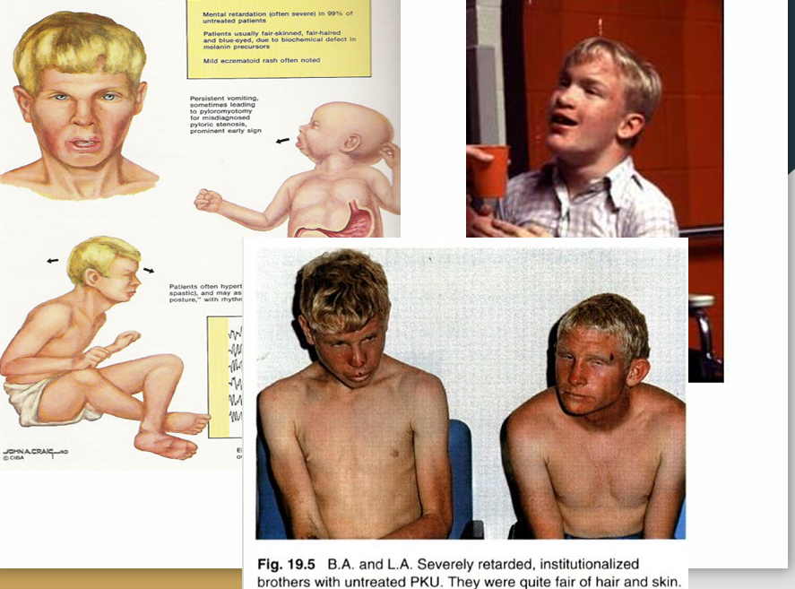
Майчина ФКУ
- Неспазваща диета бременна жена с ФКУ може да доведе до:
- Вродени сърдечни дефекти
- Микроцефалия
- Ниско тегло при раждане
- Умствено изоставане
- Забавено развитие
- Затруднение в говора
- Такива жени са и с висок риск от спонтанни аборти.
Скрининг на новородени
ФКУ е включена в масовия скрининг на новородени заедно с вродената надбъбречна хиперплазия и вродения хипотиреоидизъм.
- Методът е флуометричен. Провежда със сухи петна от кръв (от петичката), нанесени върху специална филтърна бланка.
- Взимането на кръв от всички новородени се извършва в родилните заведения:
- 2-3 ден след раждането
- 30-60 мин. след нахранването
- всички кръгчета на филтърната бланка трябва да бъдат пропити с кръв
- след изсъхване на стайна температура пробите се изпращат веднага в специализирана лаборатория.
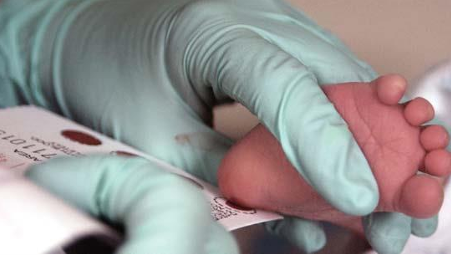
Лечение
- Целта на лечението е възстановяване на нормалните нива на фенилаланин в кръвта чрез хранителен режим.
- Пациентите трябва да сдържат диета с храни бедни на фенилаланин (бедни на протеин).
- Диетата трябва да започне колкото се може по-скоро.
- KUVAN (sapropterin dihydrochloride): Активното вещество е фармацевтичният вариант на BH4 (тетрахидробиоптерин - кофактор на ензима фенинилаланин хидроксилаза), който подпомага ензима да поддържа ниски нива на фенилаланин в кръвта.
- PALYNZIQ (pegvaliase-pqpz): Инжекционен разтвор, който понижава нивото на фенилаланин, действайки като заместител на PAH ензима. При лечение с PALYNZIQ не е необходимо да се спазва диета.
2. Лизозомни болести на натрупването - мукополизахаридози, сфинголипидози, и болест на Помпе
- Лизозомите са органели, съдържащи хидролитични ензими, участващи в разграждането на разнообразни макромолекули.
- Дефектите в хидролазните гени водят до натрупване на субстрати в лизозомите, което нарушава клетъчните функции.
- Заболяванията от тази група имат прогресивен ход, характеризират се органомегалия, а при засягане на ЦНС и с невродегенеративни промени.
- Повечето са автозомно рецесивни.
А. Мукополизахаридози (MPS)
- Мукополизахаридозите са хетерогенна група заболявания дължащи се на намалена способност за разграждане на глюкозаминогликани.
- Десет ензимни дефекта причиняват 6 различни заболявания със сходна клинична картина.
- Характеризират се със специфична екскреция в урината на дерматан, хепаран, кератан и хондроитин сулфат.
- Клинична картина:
- Скелетни аномалии
- Сърдечни проблеми
- Засягане на ЦНС
- Загрубяване на чертите на лице
MPS 1 - Синдром на Хърлър (най-тежка):
- Унаследяване: Автозомно рецесивно
- Начало: < 18 месеца
- Скринингови тестове: наличие на дерматан и хепаран сулфат в урината
- Ензимна диагностика
- Клиника:
- Груби черти на лицето
- Помътняване на корнеята - поради директна инфилтрация на глюкозамингликани в корнеята
- Хепатомегалия
- Сърдечни клапни дефекти
- Затруднение в дишането
- Загуба на слуха
- Гръбначни деформации
- Ставни контрактури
- Умствено изоставане
Лечение:
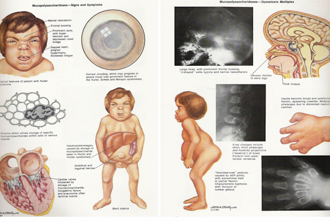
MPS II – синдром на Хънтър
Унаследяване: Х-свързано рецесивно
- Ензимен дефицит: L-iduronate sulfatase
- Натрупван метаболит: дерматан и хепаран сулфат
- Начало на клиника: 1 до 3 год.
- Клиника: подобна на Hurler, но с по-бавна прогресия
- Лечение:
Ензим заместителна терапия с Elaprase (Idursulfase), която
подобрява значително състоянието на децата, особено ако терапията започне в ранни етапи на заболяването.
Костно-мозъчна трансплантация.
Палиативни грижи – респираторни и кардиоваскуларни усложнения, артропатия, нарушения на слуха и зрението.
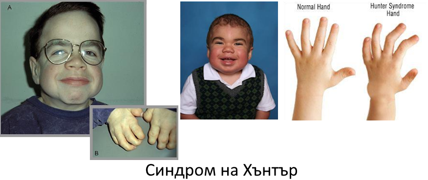
Б. Сфинголипидози
- При тях се натрупват липиди.
- Включват болестта на Gaucher, Фабри, Ниман-Пик.
Болест на Gaucher
- Унаследяване: Автозомно рецесивно
- Дефицит на глюкоцереброзидаза
- Tип I – Хронична неневронопатична форма
- Най-честа (1/40000, 1/450 при евреи Ешкенази)
- Начало във всяка възраст
- Симптоми:
Хепатоспленомегалия.
- Анемия.
- Тромбоцитопения.
- Скелетни аномалии: фрактури, артрит и др.
- Няма засягане на ЦНС.
- Лечение:
- Ензим заместителна терапия с CEREZYME независимо от възрастта.
- Подпомага следните симптоми: анемия, тромбоцитопения, костни аномалии, хепато- или спленомегалия.
- Тип II, остра невронопатична форма
- Начало в кърмаческа възраст
- Масивна хепатоспленомегалия
- Прогресивно засягане на ЦНС
- Тежко неврологично засягане
- Продължителност на живота до около 2 години
- Тип III, субакутна невронопатична форма
- Начало в детско-юношеска възраст
- Бавно прогресиращо неврологично засягане
- Хепатоспленомегалия
Болест на Фабри:
- Унаследяване: X-рецесивно унаследяване
- Честота: 1/40 000
Нарушение в метаболизма на
гликосфинголипидите, в резултат на alpha-
galactosidase A дефицит
Първите симптоми се проявяват в детска възраст
с епизоди на
акропарестезия
Ранни симптоми:
Бавно прогресиращо заболяване със засягане
на:
Бъбреци, най-честата причина за летален изход е
терминалната бъбречна недостатъчност
Сърце
Нервна система – инсулт
- Лечение:
ензим заместителна терапия с Fabrazyme
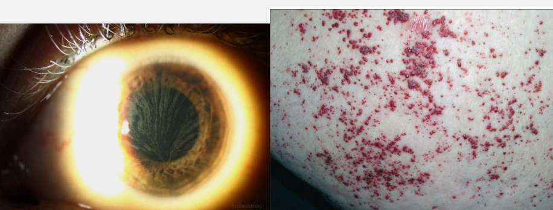
В. Болест на Помпе:
- Унаследяване: Автозомно рецесивно
- Дефицит: кисела алфа-глюкозидаза (GAA)
- Води до нарушено разграждане на гликоген в лизозомите
- Натрупването на гликоген води до:
- Прогресивна мускулна слабост особено засягаща сърцето, скелетните мускули и черния дроб
Клинични форми, съобразно началото на клиничната картина:
Лечение:
Ензим заместителна
терапия с Myozyme

3. Нарушения в обмяната на металите - Болест на Уилсън
- Унаследяване: Автозомно рецесивно.
- Характеризира се с натрупване на мед в черен дроб, мозък, очи, ЦНС.
- Възниква в резултат на мутация в ATP7B гена.
- Диагноза
- Нисък церулоплазмин - протеин, пренасящ медта в кръвта.
- Куприурия - отделяне на мед чрез урината.
- Куприемия - мед в кръвната плазма.
- Тест с Купренил - хелатор, който се свърза с медта в тъканите и я изхвърля през урината, като се измерва базовата мед в урината за 24 часа.
- ДНК анализ.
- Лечение
- Целта на лечението е да се премахне акумулиралия мед и превенция на реакумулацията.
- Хелираща терапия с penicillamine (Cuprimine and Depen) и trientine (Syprine and Trientine Dihydrochloride) – действието на хелаторите е да свързват медта и да подпомогнат изхвърлянето ѝ с урината.
- Диета.
- Трансплантация на черен дроб.
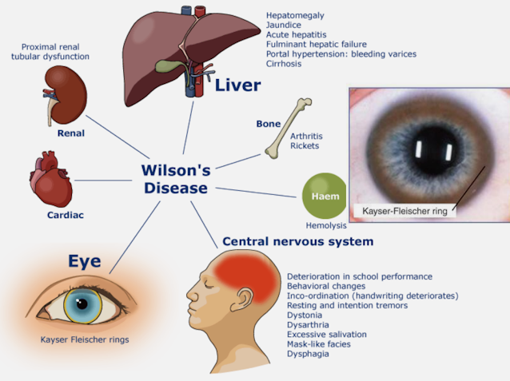
4. Нарушения на стероидната обмяна - Вродена надбъбречна хиперплазия (ВНХ)
- Унаследяване: Автозомно рецесивно
- 95% от случаите са свързани с дефицит на 21- хидроксилаза
- Мутации на гените за ензими, участващи в синтеза на кортизол от холестерол в надбъбречните жлези
- Форми:
- Вирилизация със загуба на сол (75%)
- Проста вирилизация (25%)
- Некласическа форма – хирзутизъм, ранен пубертет, акне, нарушения в менструалния цикъл
- Масов неонатален скрининг – определяне на 17-хидроксипрогестерон върху филтърна бланка - радиоимунологично
- Клинична картина
- Момичета – вирилизация на външните гениталии в различна степен:
- клиторомегалия
- лабиална фузия
- Момчетата с класическа форма на ВНХ се диагностицират в ранния неонатален период:
- по повод нарушения в храненето
- ненаддаване на тегло
- дехидратация (ниски нива на серумния Na, висок К, ацидоза)
- повишени нива на ОН-прогестерон
- понякога хипогликемия
- Лечение
- Глюкокортикоиди - намаляват нивата на стероидните хормони
- Минералкортикоиди
- Лечение на дехидратацията
- Оперативна корекция на гениталите

Синдром на пълна андрогенна нечувствителност (синдром на Morris, тестикуларна феминизация) (не знам дали влиза, но не знам къде другаде да го сложа засега)
- Унаследяване: Х-рецесивно
- Молекулярен дефект: нарушена функция на андрогенния рецептор (Хq11)
- Патогенеза
- Първичната диференциация на мъжкия пол зависи от андрогенните хормони тестостерон и дихидротестостерон (DHT), произвеждани от феталните тестиси. Мутациите в андрогенния рецептор възпрепятстват нормалното свързване между лиганд и рецепторна молекула и ембрионът се развива като женски.
- Освен андрогени клетките на тестисите синтезират анти-Мюлеров хормон, което води до закърняване на структурите, от които биха се развили маточни тръби, матка и горната част на влагалището.
- Фенотип
- Фенотипно нормални момиченца при раждането, възможно е откриването на двустранна ингвинална херния, съдържаща задържаните тестиси.
- Аменорея (поради липса на матка).
- По време на пубертета се развиват вторични полови белези от женски тип (гърди), но липсва окосмяване (аксиларно и пубисно).
- Диференциална диагноза:
- Парциална андрогенна нечувствителност
- 46,ХУ жени (SRY mutations)
- Лечение
- Хирургично отстраняване на тестисите поради риск от малигнизация.
- Хормонзаместителна терапия за индуциране на нормално пубертетно развитие и профилактика на ранна остеопороза.
- Оперативна корекция на влагалището.
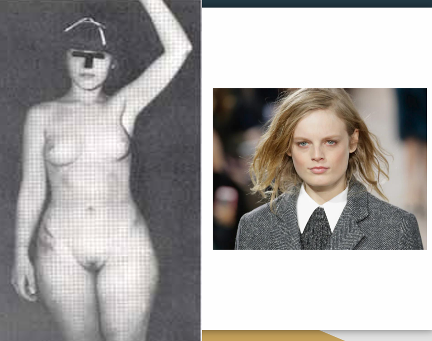
22. Неврогенетични болести - Хорея на Хънтингтън, Синдром на чуплива Х хромозома, синдром на Рет
1. Хорея на Хънтингтън (Huntington Disease)
- Прогресивно невродегенеративно заболяване с автозомно-доминантно унаследяване.
- Генетика: Динамична мутация – амплификация на CAG триплети в 5‘ региона на гена за протеина Huntingtin (локус 4р16.3).
| Брой повторения | Състояние |
| Норма | ≤ 26 |
| Нестабилна мутация | 27-35 |
| Непълна пенетрантност | 36-39 |
| Пълна пенетрантност | ≥ 40 |
Патогенеза:
Болестта на Huntington се характеризира с:
бавна и прогресивна загуба на неврони в ЦНС
- Мутантният протеин Huntingtin води до атрофия на неостриатума,
невронална дисфункция, генерализирана мозъчна атрофия, промени в нивата на невротрансмитерите и акумулиране на ядрени и цитоплазмени агрегати.
Клинична картина:
- Късно начало:
Nачалото
на клиничната картина е между 35-45
години, като варира от юношеските до 60-те
години.
Близо 100% от индивидите, носители на
патологичния алел, развиват заболяването
до 70 годишна възраст.
- Заболяването е с прогресивен ход и завършва летално в период от четири до 25 години.
- Начални симптоми:
- Деменция
- Нарушена когниция
- Личностни промени
- Неволеви движения (хорея)
- Загуба на моторен контрол
Характерни са и поведенчески отклонения – депресия,
биполярно разстройство.
В рамките на 10-20 години болният загубва умствен и
физически контрол, стигайки до летален изход.
Генетично консултиране
- Генетични феномени, които са от значение при оценката на риска:
- Късно начало на клинична изява.
- Премутация и непълна пенетрантност.
- Родителски произход на мутацията – по-тежка клиника в поколението, ако мутацията е унаследена от бащата.
- Антиципация – болните в следващите поколения са с по-ранно начало и по-тежка клиника.
Диагностика и Лечение
- Методи за ДНК диагностика: PCR
- Лечение чрез РНК „заглушаване“: Терапия, целяща намаляване производството на дефектния протеин чрез разграждане на мРНК молекулите, отговорни за синтезирането му, което намалява количеството на HTT протеина.
- Сегашният подход е да се достави мРНК с помощта на аденоасоциирани вирусни вектори (AAV).
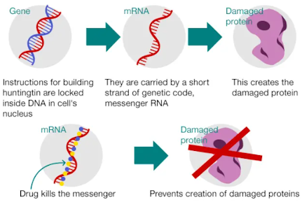
2. Синдром на чуплива Х хромозома (Fragile X - FRAX / Martin-Bell)
Честота
- Популационна честота:
- 1 / 4000 мъже
- 1 / 8 000 жени
- По-ниската степен на пенетрантност в женския пол, вариабилната експресивност и Х-инактивацията повлияват ефекта на нормалната Х-хромозома.
- Унаследяване – Х–свързано (не може да се отнесе към класическото доминантно и рецесивно унаследяване).
- Това е най-честата известна моногенна причина за аутизъм и най-честата унаследяема причина за умствено изоставане.
Клинични белези
- Умствено изоставане - средно към тежко, IQ 35-49.
- Лек лицев дисморфизъм: широко чело, дълго лице, лицев едем, големи щръкнали ушни миди, проминираща брадичка.
- Голям тестикуларен обем в постпубертетния период.
- Забавено развитие на говора.
- Епилепсия.
- Аутизъм в над 20% от случаите.
- Съединителнотъканни аномалии (плоскостъпие, хиперподвижни стави).
- Поведенчески проблеми (хиперактивност, стереотипни движения на ръцете, нестабилна походка, забавена реч, агресия).
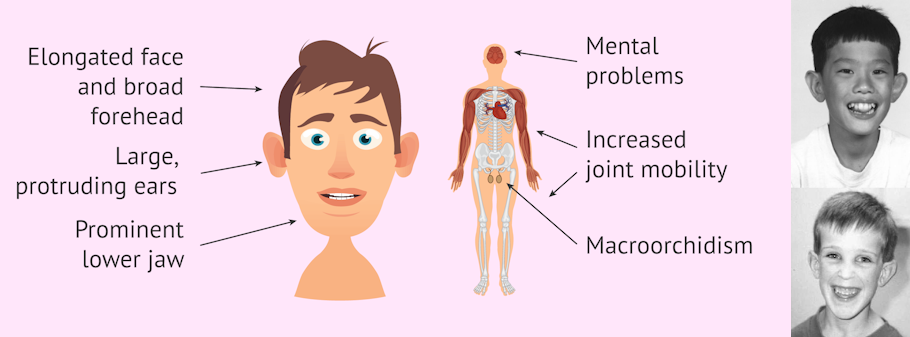Генетика и лабораторна диагностика
- Заболяването се дължи на динамична мутация (амплификация) на нестабилния тринуклеотиден повтор CGG, който е локализиран в 5` нетранслиращата се област на гена FMR1 (Xq27.3).
- Мутацията води до липса на синтез на функционално активен FMR протеин (необходим за нормално невронално развитие).
- Брой на триплетните повторения:
- Нормален алел: ≤ 54 повторения.
- Премутация (55-200 повторения) – здрави носители.
- Пълна мутация (над 200 повторения) – настъпва метилация на гена.
- Премутацията нараства до пълна мутация само при предаване от жена (майка) и е зависима от размера (броя на повторите).
Генотип – Фенотип корелация (CGG повторения)
Брой на триплетните повторения (норма 10-50) | Микроскопски визуализираща се фражилност | Интелигентност |
|---|
Мъже
55-200 (премутация)
200-2000 (пълна мутация) |
Не
Да (в над 50% от клетките) |
Нормална (нормални трансмитиращи мъже)
Умствени изоставане |
Жени 55-200 (премутация)
200-2000 (пълна мутация) |
Не
Да (в над 50% от клетките) |
Нормална
50% нормална, 50% леко умствено изоставане |
Премутациите се свързват с повишен риск от развитие на:
- Преждевременна яйчникова недостатъчност при жени (менопауза преди 40г.).
- Х-свързан тремор/атаксия при двата пола.
Генетично консултиране
- Премутациите не променят дължината си при предаване от баща на дъщеря.
Затова дъщерите на
трансмитиращите мъже са винаги здрави, но могат да
имат болни деца.
Преминаване от премутация в пълна мутация става
само в потомството на жени, т.е само по време на
овогенеза. По-дългите премутации са с по-голям риск да
преминат в пълни такива.
Дъщерите имат вариабилна клинична картина, в
зависимост от Х инактивацията.
Диагноза:
3. Синдром на Рет (Rett Syndrome)
Rett е нервнопсихическо нарушение в детска възраст, характеризиращо се с нормално развитие след раждането, последвано от загуба на целенасочени движения на ръцете, стереотипни движения на ръцете, забавено нарастване на мозъка и главата, променена походка, припадъци и умствено затруднение
Генетика:
- Честота: 1:10 000.
- Засяга преди всичко женския пол
- Унаследяване: Х-доминантно.
- Мутация: MECP2 ген (Methyl-CpG-binding protein 2).
Патогенеза:
- MECP2 генът кодира нуклеарен протеин, който се свързва към метилираната ДНК.
- Предполага се, че функцията на МеСР2 е да медиира блокирането на траскрипцията и да упражнява епигенетичен контрол върху гените в съответните метилирани участъци.
- Следователно нарушенията във функциите на МеСР2 би следвало да водят до неадекватна активация на гени.
Клинични критерии
| Задължителни критерии | Допълнителни критерии |
Начало: между 6-18 месеца възраст.
Нормално пре- и перинатално развитие.
Загуба на вече придобити умения (моторни и комуникативни).
Нормална обиколка на главичката след раждането и забавяне в нарастването в последствие.
Значително изоставане в развитието.
Стереотипни движения на ръцете.
Загуба на умението за използване на ръцете.
Аутистично поведение.
Нарушения в походката. | Гърчове.
Абнормна ЕЕГ.
Дихателна дисфункция и хипервентилация.
Сколиоза/ кифосколиоза.
Изоставане в растежа.
Промяна в мускулния тонус.
Нарушения в ритъма на сън и бодърстване.
Спонтани изблици на смях и плач.
Намален отговор на болка. |
Генетичен риск:
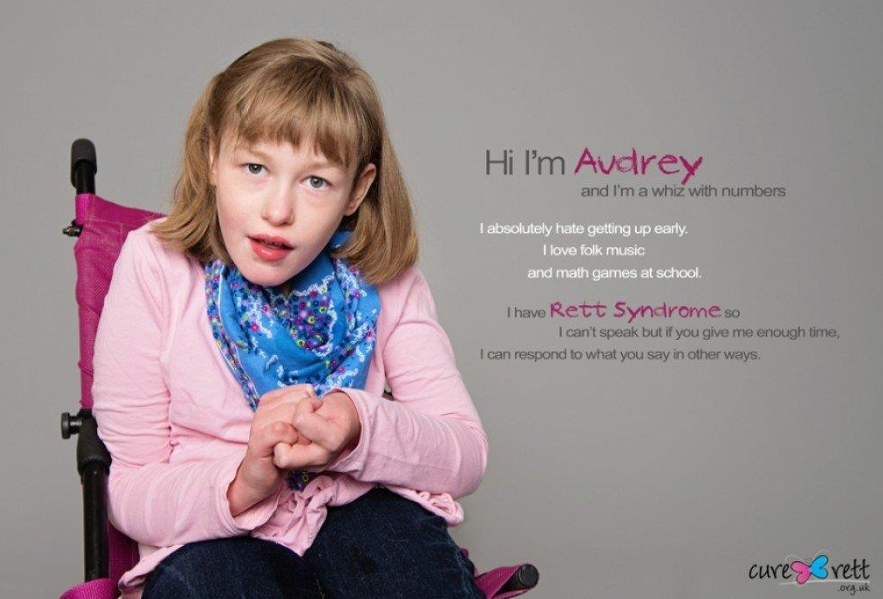
23. Невромускулни болести - Мускулна дистрофия Дюшен/Бекер, Спинална мускулна атрофия, Болест на Шарко-Мари-Тут.
1. Мускулна дистрофия тип Дюшен (DMD) и тип Бекер (BMD)
- Ген: DYS (локус Xp21.2)
- Генен продукт: дистрофин.
- Унаследяване: Х-рецесивно, 30% са спонтанни мутации, 20% гонаден мозаицизъм).
Етиопатогенеза
Дистрофинът стабилизира клетъчната мембрана, свързвайки цитоскелета (актин) с екстрацелуларния матрикс. Липсата му води до разрушаване на мускулните влакна.
Клинична картина (DMD)
Диагностика
- Серумни проби:
↑↑↑
креатин киназа, ↑
Troponin I, Чернодробни ензими - ↑ AST & ALT. - Мускулна биопсия: Фиброза, Дегенерация на мускулните фибрили.
- Dystrophin – липсва оцветяване (нормално се оцветява в кафяво в нормалния мускул).
- Електромиография (ЕМГ) - показва, че слабостта се дължи на разрушаване на мускулна тъкан, а не на увреждане на нерви.
- Молекулярно-генетична диагностика.
Лечение
- Eteplirsen (Exondys 51):
- Води до промяна на рамката на четене и синтез на дистрофин, който е функционално активен.
Лекарството обаче може да се прилага само при пациенти
с определен тип мутация и може да е от полза в 15% от
случаите на DMD.
Наблюдаваните странични ефекти
включват загуба на равновесие и гадене.
- Deflazacort (Emflaza):
- Кортикостероид,
спомага за подобряване състоянието на
пациентите, като повишава мускулната сила и позволява да
се съхрани способността за ходене по-дълго време.
Страничните ефекти са увеличаване на теглото и отоци.
- Други кортикостероиди като преднизон, също забавят прогресията на болестта.
- Ataluren (Translarna):

2. Спинална мускулна атрофия (СМА)
- Определение – Невромускулно заболяване, характеризиращо се с прогресивна мускулна слабост, резултат от дегенерацията и загубата на клетки в предните рога на гръбначния мозък и ядрата на мозъчния ствол.
- Унаследяване: Автозомно-рецесивно.
- Гени: SMN1 и SMN2 – 5q12.
Класификация
Базира се на началото на клиничната картина и степента на засягане:
- SMA тип I (Werdnig – Hoffman)
- SMA тип II (Dubowitz)
- SMA тип III (Kugelberg –Welander)
- SMA тип IV
Клинична симптоматика:
| Тип | Начало | Клинична симптоматика | Продължителност на живот |
| SMA I | 0 – 6 мес. | Тежка мускулна слабост (проксимално и симетрично засягане)
Липса на моторно развитие (невъзможност за поддържане на седнала позиция, затруднения при храненето)
Симптом на парцалената кукла
Генерилизирана хипотония | Летален изход в рамките на 2 години |
| SMA II | 6 - 18 мес. | Децата никога не се научават да стоят прави и да вървят, но могат да се задържат в седнала позиция | Някои пациенти са с нормална продължителност на живот |
| SMA III | >12 - 18 мес. | Долните крайници са по-тежко засегнати от горните. | Прогнозата корелира с достигнатите нива на моторно развитие, като някои индивиди могат да запазят способността си да вървят до 30-40 годишна възраст. |
SMA IV | ( >18-20 г.) | | |
Усложнения в протичането на заболяването:
- Затруднено наддаване на тегло
- Нарушения на съня
- Чести инфекции на дихателните пътища
- Сколиоза
- Ставни контрактури
Генетика:
Със СМА са асоциирани два гена: SMN1 и SMN2, които са съседни. Двата гена се различават само по 5 базови двойки
Генетична консултация:
Заболяването е автозомно-рецесивно, с риск 25% за болно дете при двама хетерозиготни родители.
Възможна е пренатална диагноза.
Лечение:
- Spinraza (Nusinersen):
- Води до алтернативен сплайсинг на SMN2 гена, като функционално го превръща в SMN1 гена и така увеличава нивата на SMN протеина в ЦНС.
- Zolgensma (Ona-semenogene abeparvovec) :
Генна терапия, при която рекомбинантно копие на човешки SMN1 (див
тип) се въвежда в организма чрез вирусен вектор
.
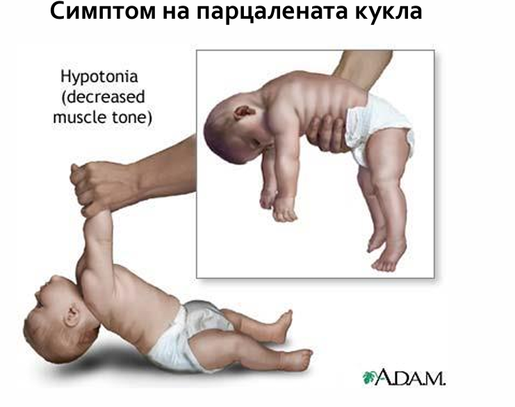
3. Болест на Шарко-Мари-Тут (CMT)
- Представлява наследствена моторносетивна невропатия (HMSNs).
- Най-честата мутация е дупликация в късото рамо на 17та хромозома.
Този регион съдържа ген, кодиращ миелиновия протеин PMP22 и това води до свръхпродукция и демиелинизаци.
Предполага се, че поради прекомерното образуване на този белтък, той се натрупва в клетките, нарушава образуването на миелин и нормалното функциониране на Швановите клетки, което води до демиелинизация.
Заболяването обаче се характеризира с генетична хетерогенност – показва АД,
Х-доминантен и АР ход на унаследяване. Тези генетични форми са отделни нозологични единици, причинени от мутации в различни гени.
Класификация (по начин на унаследяване)
| Тип НМСН | Начин на унаследяване |
| НМСН 1 (CMT1) | Автозомно доминантно |
| НМСН X (CMT X) | Х – свързано рецесивно |
| НМСН 2 (CMT2) | Автозомно доминантно |
| НМСН 3 (CMT3), Конгенитална НМСН | Автозомно доминантно (Висок процент на de novo мутации) |
| НМСН 4 (CMT4) | Автозомно рецесивно |
Комплексни форми | Contigous gene deletions |
Клинична картина (НМСН 1 и НМСН 2)
- Проявява се между 5 и 25-годишна възраст.
- Дистална слабост с начало в перонеалната мускулатура и евентуално в други дистални мускули на краката и ръцете.
- Сетивните нарушения са дискретни.
- Сухожилните рефлекси са отслабени.
- Наблюдава се pes cavus (висок свод на стъпалото).
- Заболяването протича сравнително леко и пациентите остават подвижни дори и в късна възраст.
Клинична картина (HMCH X):
Клиничният фенотип при засегнатите мъже е по-тежък, отколкото при мъже с НМСН 1 (CMT 1), но началната възраст е по-късна – във второ десетилетие.
Мъжете са по-тежко засегнати от жените.
Клиничната картина е сходна с тази на НМСН 1 (CMT 1).
Клинична картина (HMCH 3):
- Начало под 2 годишна възраст.
- Забавено моторно развитие.
- Tежък моторен и сетивен дефицит.
Клинична картина (HMCH 4):
- Рядко срещани.
- Като подтипове за първи път при български пациенти са описани тип Лом и тип Русе.
- Характеризират се с ранно начало и тежко клинично протичане.
Диагноза и лечение:
- Диагноза:
- Основава се на клиничните и ЕМГ данни (наблюдава се забавяне на скоростта на провеждане).
- Поради генетичната хетерогенност на заболяването е уместно да се препоръча цялоекзомно или цялогеномно секвениране.
- Лечение:
- Симптоматично
- Нивалин по схема, прием на витамини
- Физиотерапия
- Носене не ортези при деформация в ходилото
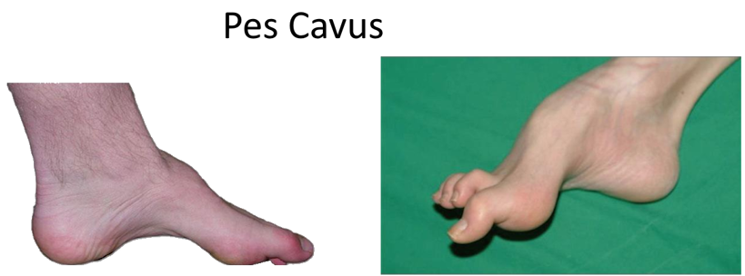
24. Генетика и генетично консултиране при Синдром на Марфан, Остеогенезис имперфекта, Ахондроплазия
1. Синдром на Марфан (Marfan)
- Честота – 1/5 000 - 1/10 000
- Системно заболяване, засягащо съединителната тъкан, с прояви от страна на три системи: сърдечно-съдова система, костна система, зрителен анализатор
- Характеризира се:
- С вариабилна експресивност
- С алелна хетерогенност
- АД тип на унаследяване
- Плейотропен ефект на мутантния ген.
- Тези ефекти могат да обяснят вариращата клинична изява при отделните индивиди.
Генетика:
Клинични белези
- Скелетна система:
- Непропорционално висок ръст с астеничен хабитус
- Арахнодактилия
- Wrist and thumb signs
- Сколиоза
- Pectus carinatum, pectus excavatum
- Ставна хипермобилност
- Високо небце с лошо подредени зъби
- Характерен лицев израз (долихоцефалия, енофталм, ретрогнатия, насочени надолу външни очни ъгли)
- Зрителен анализатор
- Ектопия (дислокация на лещата)
- Плоска корнея
- Катаракта
- Глаукома
- При пациенти под 50 годишна възраст → късогледство, отлепяне на ретината
- Сърдечно-съдова система
- Дилатация на аортния корен (синуси на Valsalva) – 70-80% от случаите
- Дисекация на aorta ascendens
- Дилатация на aorta abdominalis
- Митрален пролапс (честота 55-69%) ± митрална регургитация.
- Други органи и системи
- Бял дроб → спонтанен пневмоторакс
- Кожа → атрофични стрии предимно по предната част на раменете, кръста и гърба
- Хернии, особено ингвинални
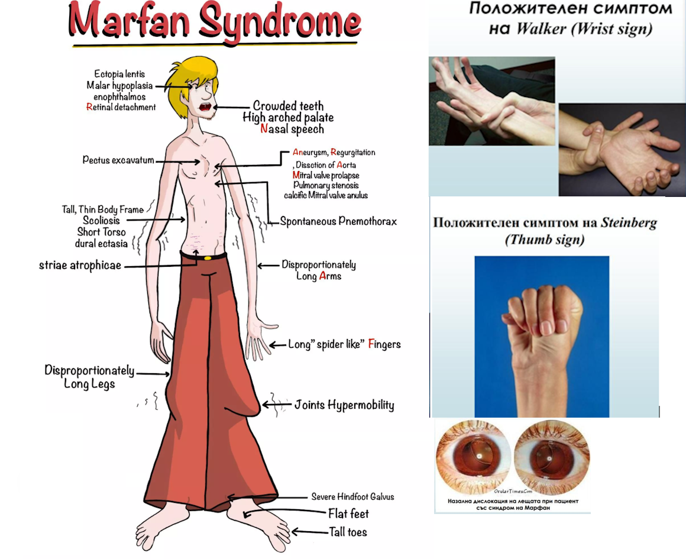Диагноза
- Диагнозата синдром на Marfan се поставя с помощта на диагностични критерии, базирани на клиничните данни, фамилната история и молекулярните изследвания.
- За да бъде диагностицирането улеснено са създадени международни диагностични критерии (критерии на Гент), базирани на основни и/или второстепенни клинични признаци.
- За целта може да се използват онлайн калкулатори.
- ДНК анализ
- Секвениране на гена
- Делеционен анализ
- Ограничения: Съществува възможност за припокриване на клиничните белези на синдрома с други състояния, които не се дължат на мутации в FBN1
- Фамилна анамнеза
- Родител, дете или сибс, при когото се откриват диагностичните критерии
- Доказана мутация във FBN1 гена, причиняваща синдром на Марфан
Генетично консултиране
- Рискът за повторение е 50%, ако е засегнат единият родител.
- При здрави родители рискът за повторение е нисък, но по-висок от популационния, заради възможността (макар и изключително рядка при синдрома на Марфан) за гонаден мозаицизъм.
- В процеса на консултиране трябва да се оцени вариабилността на болестната изява, като детето може да е по-тежко или по-леко засегнато от болния родител.
2. Синдром на Елерс Данлос:
Група от наследствени болести с нарушения в съединителната тъкан
, предизвикващи дефекти в синтезата на
колагена
Характерна е увеличената еластичност и
крехкост на тъканите - кожа, мускули,
лигаменти, кръвоносни съдове и вътрешни
органи
Описани са 13 клинични типа, като от тях
хипермобилният е най-чест, а с най-тежка
клинична картина е васкуларният тип
Генетика:
- Предимно автозомно-доминантно унаследяване, но някои форми са автозомно-рецесивни
Мутациите засягат гени за колаген (COL5A1,
COL5A2, COL3A1, COL1A1, COL1A2) или ензими,
свързани с неговата обработка
Клиника:
Кожа:
Хипереластичност (разтеглива, кадифена кожа)
Лесно образуване на синини, забавено заздравяване на рани,
атрофични белези
- Стави:
Генерализирана хипермобилност (често оценявана със скалата на
Beighton)
Чести луксации и сублуксации
Ранно начало на остеоартрoза
Чупливост на тъканите:
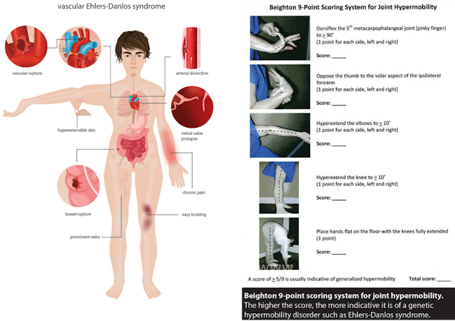
3. Osteogenesis Imperfecta
- Osteogenesis imperfecta е състояние, което възниква в резултат от нарушения в синтезата на колаген тип 1 като най–често се манифестира с патологична костна чупливост.
- Съществуват различни типове, характеризиращи се с различна тежест.
- Тип I е най разпространената, сравнително лека форма.
Патофизиология
- Колаген тип 1 се открива в костите, органните капсули, фасциите, сухожилията, роговиците, склерите, менингите и дермата.
- Структурно колаген тип 1 се състои от две pro-α1 и една pro-α2 вериги.
- COL1A1 17q21
- COL1A2 7q22.1
Клинична картина
Физикалната находка може да варира в зависимост от типа на osteogenesis imperfecta
- Костна чупливост и деформации
- Нисък ръст
- Сини склери - в резултат на прозиращата membrana choroidea под абнормно прозрачните склери
- Загуба на слуха
- Нарушена дентиногенеза

Генетично консултиране
- Характерен е автозомно-доминантен тип на унаследяване
- Заболяването се характеризира с алелна и локусна хетерогенност, и плейотропен ефект.
- Доказва се чрез ДНК анализ.
4. Ахондроплазия
Патогенеза:
- FGR3 гена кодира фибробластен рецептор за растежен фактор 3 и мутации в него водят до нарушение в хондроцитите
- FGFR 3 е трансмембранен тирозин киназен рецептор, който свързва фибробластни растежни фактори
- Нормалната активация на рецептора инхибира пролиферацията на хондроцитите и дава възможност за координиране на растежа и диференциацията
Клинична картина
- Ризомелично скъсяване на горните и долните крайници
- Релативно дълъг и тесен гръден кош
- Макроцефалия, депресия на корена на носа, проминиращо чело
- Абнормният растеж на черепа води до малка основа на черепа, стеснени черепни отвори (компресия на мозъчния ствол, централна или сънна апнея)
- Нормален интелект, изоставане в моторното развитие
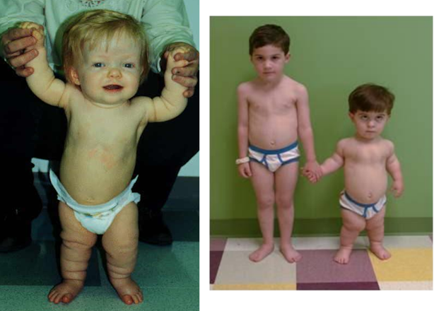
Лечение
- Симтоматично лечение на придружаващите усложнения.
- Противоречиви резултати от оперативни корекции за удължаване на долните крайници и лечение със соматотропен хормон.
Генетично консултиране:
- Хомозиготната Achondroplasia е летална!
- Това трябва да се има предвид при желание за брак между двама засегнати – опасност не само от засегнати деца, но и от спонтанни аборти.
25. Генетика и генетично консултиране при Муковисцидоза, Автозомно-доминантна бъбречна поликистоза
1. Кистична фиброза (CF) (Муковисцидоза)
Генетика:
- Наследяване: Автозомно рецесивно заболяване, най-често срещаното такова сред бялата раса.
- CFTR генът (Cystic Fibrosis Transmembrane Conductance Regulator) се състои от 27 екзона на хромозома 7;
- Над 2500 различни мутации в гена.
- Най-честа мутация (около 70%) е delF508 (делеция на 3 нуклеотидни двойки в 10 екзон, водеща до загуба на фенилаланин на 508 място в белтъчния продукт).
Патогенеза:
CFTR кодира протеин, функциониращ като канал на
хлорните йони и се регулира от цАМФ.
- Мутациите в CTFR гена водят до нарушения в транспорта на хлорните йони и водата през мембраната на епителните клетки, което формира гъст, жилав секрет в бронхиалното дърво, панкреаса, ГИТ, потните жлези и други тъкани с екзокринна функция.
Ако CFTR каналът функционира нормално, хлорните йони ще
преминават през него и ще достигнат външната страна на клетката.
Това обаче не се наблюдава при мутантния CFTR канал, което води до
натрупване на мукус на повърхността на епитела.
Клинична картина:
Заболяване на жлезите с външна секреция, засягащо множество органи:
Диагноза:
Клинична
–
Наличие на поне два от следните критерии: Положителен потен тест -
стойности на хлоридите над 60 mmol/l при поне 2 потни теста.
Хронична белодробна болест.
Хронична диария – стеаторея.
Фамилност.
- Генетична: Доказване на мутации в CTFR гена чрез ДНК анализ.
Смъртност:
Понастоящем средната преживяемост е 36 години, като тя е сигнификантно по-висока при мъжете.
Клиничното протичане, възрастта, на която се диагностицира заболяването, тежестта на клиничните симптоми и прогресията на органните увреди варират значително
В миналото кистичната фиброза е водела до фатален край още в ранно детство, но днес благодарение на симптоматичното лечение, както и на съвременната прицелна терапия преживяемостта на болните се увеличава.
Лечение и профилактика:
- Симптоматично (муколитици, бронходилататори, антибиотици, противовъзпалителни средства, белодробна физиотерапия, панкреасни ензимни препарати, мастно-разтворими витамини, висококалорийна диета)
- Прицелна терапия:
KALYDECO (ivacaftor):
Лечение на пациенти с CF на възраст над 6 г, но при пациенти с
точно определени мутации.
ORCAMBI
(
lumacaflor/ivacaftor):
Лечение при пациенти на възраст 2 и повече години, които са
хомозиготни за мутация delF508 в гена.
SYMDEKO
(tezacaflor/ivacaftor)
:
Лечение при пациенти на възраст 6 и повече години, които са
хомозиготни за мутация delF508 в гена / поне една, отговаряща на
медикамента.
TRIKAFTA
(elexacaflor/tezacaftor/ivacaftor):
Лечение при пациенти на възраст 6 и повече години, с поне една
delF508 мутация.
- Масов неонатален скрининг:
- Провежда се в първите дни след раждането чрез измерване на имунореактивен трипсиноген (IRT) в кръв, взета от убождане на петичката.
- Патологичните резултати от IRT се потвърждават с молекулярен (ДНК) тест.
- Ранната диагностика позволява навременно започване на лечение и помага да се забавят или предотвратят сериозни дългосрочни усложнения.
CFTR мутации и инфертилитет:
- Около 98% от засегнатите мъже са инфертилни (азооспермия поради агенеза на vas deferens).
- При жени се наблюдава намалена фертилност поради абнормен, гъст и вискозен цервикален мукус.
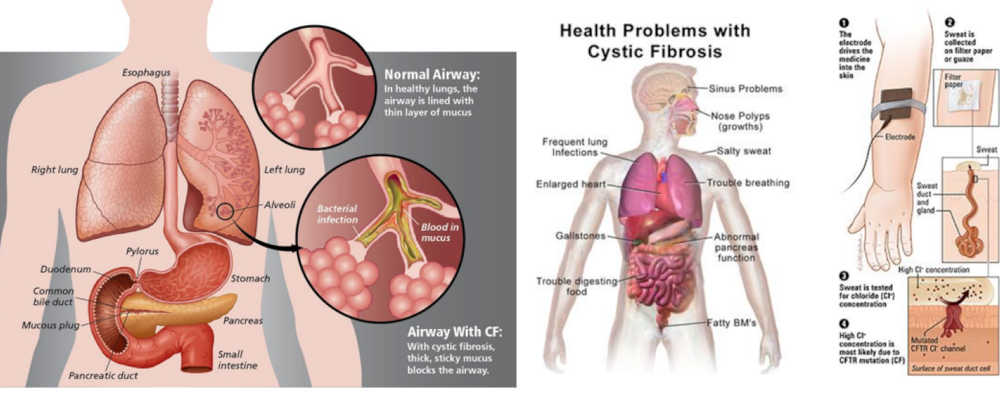
2. Фамилна хиперхолестеролемия
- Унаследяване: автозомно доминантно
- Хромозомна локализация – 19р13.1-13.2
- Протеин – LDL-R
- Мутации – missense/nonsense субституции или делеции и инсерции, водещи най-често до нарушено функциониране на LDL рецептора и повишени нива на LDL холестерола.
Клинична картина
Клинични белези (хетерозиготи)
- Chol ≥7.5 mmol/l или LDL chol ≥ 4.9 mmol/l
- Ксантоми
–
0холестеролови отлагания по сухожилията - Ксантелазми – холестеролови отлагания по кожата
- Миокарден инфаркт до 60г. (75% от мъжете и 45% от жените)

3. Адулторна бъбречна поликистоза (ADPKD)
- Унаследяване: автозомно доминантно.
- Ген: PKD1 и PKD2, кодиращи полицистин.
- Характеризира се с: късно начало, вариабилна експресивност, плейотропен ефект, локусна и алелна хетерогенност.
Патогенеза
- PKD1 и PKD2
регулират апоптозата, диференциацията на епителните клетки и комуникацията между клетките на матрикса.
При мутации в тях това може да доведе до ексцесивна секреция на течност, деозорганизация на клетките и образуване на кисти.
- Билатерална прогресивна кистична дилатация на реналните тубули.
- Вазопресин медиираното повишение на цАМФ в епитела има главна роля за образуването на кистите.
- С натрупването на течност кистите се разширяват, притискат околния паренхим, прогресивно увреждат бъбречната функция и водят до ХБН.
Клинична картина
- Бъбречни симптоми:
- Абдоминален дискомфорт, болка
- Хематурия
- Чести инфекции на пикочните пътища
- Нарушена концентрационна способност на бъбреците
- Никтурия
- Полиурия
- Палпаторно наличие на абдоминални маси
- Инфекциите най-често се дължат на Gram (-) бактерии и протичат с болка, фебрилитет и треска. Кръвните посявки често са положителни за разлика от уринните, тъй като кистите нямат пряка комуникация с каналчетата.
- Извънбъбречни прояви
- Субарахноидални и мозъчни кръвоизливи
- Дилатация на аортния корен
- Сърдечни клапни аномалии
- Хепатални кисти и чернодробна недостатъчност
- Кисти в панкреаса
26. Вродени коагулопатии
Това е група нарушения, причинени от дефицит или дисфункция на един или повече от плазмените коагулационни фактори.
Хемофилия
- Хемофилия A: Дефицит на фактор VIII (1 : 5000 мъже).
- Хемофилия B: Дефицит на фактор IX (1 : 20000 мъже).
Генетика:
- Генът за фактор VIII (F8C) заема около 0.1% от Х-хромозомата.
- Мутации – nonsense, missense, делеции.
- В 45% от фамилиите с тежка форма на Хемофилия А се установява инверсия в интрон 22.
- Висока честота на de novo мутации – 1/3 от случаите са спорадични.
Патогенеза:
- Фактор VIII е кофактор, необходим за активирането на Фактор X. Дефицитът му блокира вътрешния път на кръвосъсирването.
Клинично е неразличима от Хемофилия А, но изисква различно лечение (вливане на концентрат на Фактор IX).
Клинична картина:
- Тежестта на симптомите зависи от нивото на дефицитния фактор.
- При тежките форми, количеството на FVIII в кръвта е под 1% от нормалното.
- Най-често срещаният симптом е кървене, особено в стави (хемартрози) и мускули.
- Спонтанното кървене води до:
- Хематурия и мелена
- Дълбоки и големи хематоми по кожата
- Профузно кървене
- Кървене от венците
- Епистаксис
- Болки в ставите
Лечение:
Терапията се дели на три основни подхода според механизма:
- Заместителна терапия (Директно внасяне на фактор VIII):
- Плазмени концентрати: Извлечени от човешка кръв.
- Рекомбинантни концентрати: Синтезирани чрез генна технология.
- Освобождаване на ендогенни депа (Desmopressin / Stimate®):
- Стимулира клетките да отделят складирания в тях Фактор VIII.
- Приложимо само при леки форми.
- Миметична терапия (Hemlibra® / Emicizumab):
- Замества функцията на фактор VIII
Болест на фон Вилебранд (vWD)
Най-честото наследствено нарушение на коагулацията (честота 1:100). Дължи се на дефицит или дефект на фактора на фон Вилебранд (vWF).
Клинична картина:
- Дефицитът на фактора на фон Вилебранд се отразява най-много в органи богати на малки кръвоносни съдове като кожа и матка.
- Кожно лигавични кръвоизливи:
- Епистаксис
- Тежки кръвоизливи след зъбни екстракции
- Тежки и обилни менструални кръвоизливи
- Кръвоизливи по протежение на цялата храносмилателна система, пикочо-половата система, дихателната система
- Жените получават тежки кръвоизливи след раждане
Лечение:
- DDAVP (Desmopressin): Стимулира отделянето на vWF (и фактор VIII) от тъканните депа.
- Vonvendi®: Рекомбинантен фактор на фон Вилебранд.
27. Генетика и генетично консултиране на хемоглобинопатиите, обусловени от качествени нарушения на хемоглобиновата молекула.
Сърповидно-клетъчна анемия
Структура и функция на хемоглобина
- Хемоглобинът е тетрамерен протеин, изграден от две α-вериги и две β-вериги. Всяка субединица е съставена от полипептидна верига - глобин, и простетична група - хем, който е желязосъдържащ пигмент, свързващ се с кислорода, за да може хемоглобинът да пренася кислород.
Hb се открива в червените
кръвни клетки: еритроцити
и ретикулоцити.
Подобно на всички протеини,
глобинът има "чувствителни зони",
в които мутациите задължително ще
засегнат функцията, и
" не чувствителни зони ", в които
вариациите се понасят по-свободно.
Човешки хемоглобинови гени:
Промяната в експресията на различните глобинови гени по време
на развитието им се нарича глобиново превключване.
Гените в клъстерите α и β са подредени в една и съща
транскрипционна ориентация и гените във всеки клъстер са
разположени в същия ред, в който се експресират по време на
развитието.
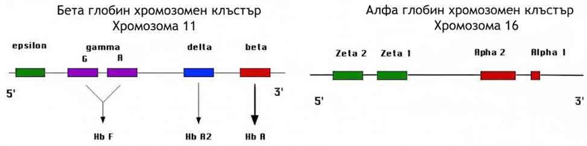
Превключване на хемоглобиновата синтеза
Времевите промени в синтеза на глобина се съпровождат от промени в основното място на еритропоезата.
Динамика на местата на хемопоеза:
- Жълтъчен сак: Ембрионалният синтез се извършва тук от 3-та до 8-ма седмица на бременността.
- Черен дроб: Около 5-та седмица основното място на хемопоезата се премества от жълтъчния сак в черния дроб на плода.
- Слезка и Костен мозък (КМ): Следват като основни органи в по-късните етапи и след раждането.
Видове хемоглобин в развитието:
- Hb F (α2γ2): Преобладаващият хемоглобин през целия живот на плода. При раждането съставлява приблизително 70% от общия хемоглобин, но при възрастните е под 1%.
- Hb A (
α
2β2): Синтезът на β-веригите става значителен едва около и след момента на раждането. До 3-месечна възраст почти целият хемоглобин е от типа за възрастни (Hb A). - Hb A2 (
α
δ2): Синтезът на δ-веригата продължава и след раждането, но Hb A2 никога не представлява повече от около 2% при възрастните.
Locus Control Region (LCR)
- LCR е необходим за експресията на всички гени в β-глобиновия клъстер на хромозома 11.
- Клинично значение: Познаването на молекулярните механизми на глобиновото превключване може да направи възможно повишаването на експресията на γ-глобиновия ген при пациенти с β-таласемия.
- Терапевтичен потенциал: Тъй като Hb F (
α2γ2
) е ефективен кислороден носител, той може да компенсира липсата на Hb A (α
2β2
) при възрастни пациенти.
Хемоглобинопатии: Генетични особености и структурни варианти
1. Сравнение между мутации в α- и β-глобиновите гени
- Честота на засягане:
- Мутациите в гена за β-глобин е по-вероятно да причинят заболяване, тъй като една мутация на гена за β-глобин засяга 50% от β-веригите.
- При α-веригите една мутация засяга само 25% от веригите.
- Пренатални последици:
- β-глобин: Мутациите нямат пренатални последици, тъй като γ-глобинът е основният β-подобен глобин преди раждането (Hb F съставлява 3/4 от хемоглобина на термина).
- α-глобин: Тъй като α-веригите са единствените, експресирани 6 седмици след зачеването, мутациите в тях причиняват тежки заболявания както във феталния, така и в постнаталния живот.
2. Класификация на наследствените нарушения
Разделят се на три групи в зависимост от ефекта на мутацията:
- Качествени (структурни) варианти:
- Променят глобиновия протеин, без да засягат скоростта на синтеза му.
- Например: Сърповидноклетъчна анемия, Hb C болест, Метхемоглобинопатии.
- Количествени варианти:
- Намален синтез на една или повече глобинови вериги (води до количествен дисбаланс).
- Например: Таласемии
- Персистиращо образуване на фетален хемоглобин след раждане.
Сърповидноклетъчна анемия (Sickle Cell Anemia)
Дефиниция и генетика
Унаследяване: Автозомно-рецесивно.
Сърповидноклетъчният хемоглобин (HbS) е първият открит анормален хемоглобин.
- Той се дължи на точкова мутация в бета-глобиновия ген, която променя шестата аминокиселина в
β-полипептидната верига от
глутаминовата киселина във валин. Хомозиготността за тази мутация е причина за сърповидноклетъчната болест.
- Епидемиология: По-висока честота в Централна Африка и райони с малария, поради по-ниската възприемчивост на хетерозиготите към малария.
Патофизиология
- Разтворимост: Нарушението прави деоксигенирания HbS по-слабо разтворим и с тенденция да формира полимери.
- Формиране на фибрили: При деоксигениране еритроцитите се променят от биконкавни в сърповидни вследствие на образуването на фибрили.
- Ригидност и оклузия: Фибрилите правят еритроцитите ригидни, което блокира движението на кръвта в капилярите и води до тъканна хипоксия.
- Анемия: Непрекъснатото образуване и отстраняване на необратимо променените сърповидни клетки допринася за развитието на тежка анемия.
Клинична картина
Симптомите на заболяването обикновено се проявяват след първите 6 месеца от живота (след превключването от Hb F към Hb S).
Общи клинични белези:
- Забавяне на растежа и развитието.
- Тежка анемия.
- Повтарящи се тежки инфекции.
- Вазооклузивен синдром: Повтарящи се болезнени кризи, най-често в областта на корема, гърдите и ставите.
- Засягане на ЦНС: Епилептични гърчове, мозъчен оток и церебрална тромбоза.
Рентгенови находки:
Като последица от разрастването на костния мозък и развитието на
инфаркти се установяват рентгенологични промени в костите.
Характерни
са биконкавният изглед „fish mouth” на гръбначните прешлени и
асептичната некроза на фемура.
Сърповидно-клетъчен признак (Хетерозиготно състояние):
- Клиничен статус: Хетерозиготите обикновено са клинично здрави.
- In vitro: Тяхната кръв показва сърповидност на клетките само при изкуствено подлагане на много ниско кислородно налягане в лабораторни условия.
- In vivo: Процесът на сърповидност се наблюдава изключително рядко в тялото. Въпреки това, хетерозиготите са изложени на риск от инфаркт на слезката, особено при екстремни обстоятелства като полети на големи височини.
Диагностика
За поставяне на диагнозата се използват следните методи:
- Електрофореза на хемоглобин: Основен метод за идентифициране на HbS.
- ДНК-анализ: За окончателно потвърждаване на мутацията.
- ПКК (Пълна кръвна картина): С диференциално броене и изследване на ретикулоцити.
- Кръвна натривка: Микроскопско наблюдение на сърповидни клетки.
- Серумни електролити.
- Тест за разтворимост с натриев метабисулфат: Добавянето му към пробата редуцира кислорода и провокира сърповидност при наличие на HbS.
Лечение:
Adakveo® (crizanlizumab):
прицелна терапия, целяща
намаляване на
вазооклузивните и болкови кризи
чрез подобряване на кръвотока при
възрастни пациенти и деца над 16
години.
Siklos® (hydroxyurea):
медикамент с хидроксиурея,
който се прилага при деца
над 2-годишна възраст за
повлияване на болковите
кризи и намаляване честотата
на хемотрансфузиите.
Повишава нивата на HbF.
Hb C болест
Молекулярен дефект:
- Мутация: Дължи се на замяна в шестата позиция в β-веригата, като глутаминовата киселина е заменена с лизин (Glu6Lys).
- Патофизиология: Hb C е по-слабо разтворим от Hb A и има склонност да кристализира в еритроцитите. Това намалява деформируемостта им в капилярите и причинява леко хемолитично нарушение.
Генетика и разпространение:
- Разпространение: Алелът
β
C е често срещан в Западна Африка (около 1% от афроамериканците са носители). Затова не е необичайно откриването на индивиди с Hb C, които имат алел βS или алел на таласемия в другия локус на β
-глобина.
- Болест на Hb SC: Лицата, които са сложни хетерозиготи за мутациите
βC
и βS
. Те имат хемолитично нарушение, което е по-леко от сърповидноклетъчната анемия. Могат да нямат клинични проблеми, докато неочаквано не се развие сериозно усложнение в резултат на съдова оклузия (особено в ретината).
Симптоми на Hb C болестта:
- Иктер.
- Увеличение на слезката.
- Холелитиаза.
- Анемия.
Варианти с променен транспорт на кислорода - Метхемоглобинопатии
Видове хемоглобин:
- Оксихемоглобин: Формата на хемоглобина, способна на обратимо насищане с кислород; неговото хемно желязо е в редуцирано състояние.
- Метхемоглобин: Получава се при спонтанно окисляване на хемното желязо. Тази молекула не е способна на обратимо насищане с кислород.
- Цианоза: Получава се при натрупване на значителни количества метхемоглобин в кръвта.
Механизъм и генетика:
- Метхемоглобин редуктаза: Ензим, който поддържа хемното желязо в редуцирано състояние.
- Мутации: При някои мутации, засягащи връзката хем-глобин, желязото става устойчиво на редуктазата.
- Клинична изява: Хетерозиготите за тези мутации са цианотични, но са безсимптомни.
- Леталност: Предполага се, че хомозиготното състояние е летално.
- Пример: Hb Hyde Park е пример за
β
-верижен метхемоглобин.
Нива на метхемоглобин и симптоми:
- < 10%: Безсимптомно.
- 10% – 20%: Лека промяна в цвета на кожата.
- 20% – 30%: Главоболие, тахикардия, световъртеж.
- 30% – 50%: Затруднения в дишането, гръдна болка, обща слабост, обърканост.
- 50% – 70%: Аритмия, делириум, припадъци, кома, ацидоза.
- > 70%: Летално.
Хемоглобини с променен афинитет към кислорода
Група редки варианти, които водят до повишен или понижен кислороден афинитет.
- Повишен кислороден афинитет: Обикновено се свързва с пожизнена еритроцитоза (полицитемия).
- Hb Kempsey: Мутацията „заключва“ хемоглобина в отпуснатата структура (R-state), която има висок афинитет към кислорода, което води до полицитемия.
- Намален кислороден афинитет: Обикновено са свързани с лека анемия и цианоза.
28. Генетика и генетично консултиране на хемоглобинопатиите, обусловени от количествени нарушения на хемоглобиновия синтез. α и β таласемия
Обща част от 27.
Таласемии
Таласемиите са най-разпространените моногенни заболявания при човека. Те представляват хетерогенна група от заболявания на хемоглобиновия синтез.
Генетика:
Нормално човек унаследява два β-
глобинови гена, разположени на
хромозома 11, и четири α-глобинови гена
на 16-та хромозома.
Патофизиология
Епидемиология и произход
- Болестта е открита за първи път при хора от средиземноморски произход.
- Честотата се дължи на защитата срещу малария, която тя дава на носителите (аналогично на сърповидноклетъчния хемоглобин).
- Простират се в характерна ивица около Стария свят: Средиземноморието, Близкия изток, части от Африка, Индия и Азия.
Типове таласемия
α-таласемия | β-таласемия |
| 1. „Тихо“ носителство | 1. Минор |
| 2. Таласемия минор | 2. Интермедия |
| 3. Hb H болест | 3. Майор (Анемия на Cooley) |
| 4. Хидропс феталис |
α-таласемия
Генетика:
- Те възникват най-често в резултат на делеция на един или повече от четирите алфа-глобинови гена, разположени на късото рамо на 16-та хромозома.
- Специфичната структура на този регион предразполага към повишена мутационна честота.
α-таласемиите се разделят на четири клинични типа:
- „Тихо“ носителство:
Делеция на един α–глобинов ген.
Безсимптомен фенотип
- Минор:
- Делеция на два α-глобинови гена.
Безсимптомен фенотип.
- HbH болест:
- Делеция на три α-глобинови гена.
Средно тежка хемолитична
анемия, хепатоспленомегалия.
Фетален хидропс (Hb Bart's):
α-таласемията се среща по-често в
Средиземноморието, Африка, Средния
Изток, Индия и Централна Азия.
Хомозиготният делеционен тип, водещ до хидропс феталис, е разпространен предимно в Югоизточна Азия.

Патофизиология на α-таласемията
При α-таласемията се наблюдава дефектен синтез на α-глобинови вериги, в резултат на което се наблюдава намалена продукция на хемоглобин съдържащ алфа вериги напр. HbA, HbA2 и HbF.
Генетичните нарушения в производството на α-глобин засягат образуването на хемоглобините както на плода, така и на възрастните. Поради това те причиняват вътреутробно и постнатално заболяване.
Образуване на хомотетрамери
При липса на α-глобинови вериги, веригите от β-глобиновия клъстер образуват хомотетрамерни хемоглобини, които са неефективни преносители на кислород:
- Hb Bart's (γ4): Хомотетрамер от гама-вериги (при плода).
- Hb H (β4): Хомотетрамер от бета-вериги (при възрастни).
Клиника:
Колкото повече алфа гени са делетирани, толкова по-тежка е клиничната картина.
Симптоми:
- Анемия
- Иктер
- Умора
- Изпъкнало чело
- Холелитиаза
- Хипертония по време на бременността
- Hydrops fetalis: Бебетата с тежка α-таласемия и високи нива на Hb Bart's страдат от тежка вътреутробна хипоксия. Раждат се с масивно генерализирано натрупване на течности.
β-таласемия
Генетика:
Бета таласемията се причинява от най-често точкови мутации в
HBB (β- глобинов) ген, локализиран на 11-та
хромозома.
Унаследяване: Автозомно рецесивно
Бета таласемията превалира в страните на
Средиземноморието, Среден изток, Централна
Азия, Индия и Далечен Изток.
Широкото им разпространение се дължи на по-
малката възприемчивост на хетерозиготите към
малария.
Патофизиология
При β-таласемията се наблюдава намален
синтез на β-вериги, в резултат на което и
намалено образуване на HbA в еритроцитите.
Намаленото количество (β+) или отсъствие (β0)
на β-глобинови вериги резултира в относителен
излишък на несвързани α-глобинови вериги,
които преципитират в еритроидните прекурсори
в костния мозък и водят до преждевременната
им смърт и до неефективна еритропоеза.
Периферната хемолиза е причина за анемия,
която стимулира производството на
еритропоетин с последваща интензивна, но
неефективна експанзия на костния мозък,
водеща до типични костни деформации.
Резултатът е хипохромна, микроцитна анемия и преждевременно разрушаване на клетките.
Тъй като β-веригата е важна само в постнаталния период, клиничната изява настъпва няколко месеца след раждането, когато β-глобинът нормално замества γ-глобина като основна не α верига.
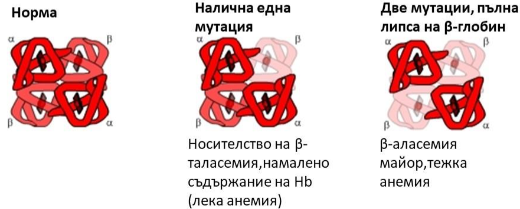Клинични форми
А. Таласемия минор
Б. Таласемия интермедия:
Симптомите на β-таласемия интермедия се проявяват по-късно от таласемия майор с:
- Лека анемия
- Бледа кожа
- Хепатоспленомегалия
- Костни деформации
- Холелитиаза
- Болезнени язви по краката
В. Таласемия майор (Анемия на Cooley)
Индивиди с два алела за β-таласемия. Поради голямото разнообразие от мутации, много пациенти са компаунд хетерозиготи (два различни дефектни алела).

Лечение на таласемии
- Общи методи:
- Трансфузионно.
- Желязо-хелатираща терапия:
- Задължителна е при пациенти на редовни трансфузии, за да се предотвратят сърдечни и чернодробни усложнения от натрупването на желязо.
- Хелатори на желязо: Deferoxamine, Deferiprone, Deferasirox
- Трансплантация на костен мозък: Счита се за единствения утвърден метод за трайно излекуване на двата вида таласемии, при условие че се открие подходящ HLA-съвместим донор.
- Спленектомия:при пациенти с хиперспленизъм.
- Специални за β-таласемия:
- Zynteglo: генна терапия (вкарва се функционален β-глобинов ген) за пациенти с трансфузионно зависима β-таласемия.
- Reblozyl: друг метод за терапия на пациенти с транфузионно зависима β-таласемия.
Диагностика на таласемии
1. Лабораторни изследвания
- Пълна кръвна картина (ПКК): Оценяват се нивата на хемоглобин, еритроцити и еритроцитни индекси (MCV, MCH).
- Изследване на ретикулоцити: За оценка на еритропоетичната активност на костния мозък.
2. Електрофореза на хемоглобин
Работи на принципа на гел електрофорезата – сепариране на различните типове хемоглобин. Използва се за идентификация на:
Здрав възрастен: Доминира хемоглобин Hb A (α2β2).
Здраво новородено: Характеризира се с висок процент фетален хемоглобин Hb F (α2γ2).
Сърповидно-клетъчна болест: Установява се наличие на патологичен Hb S.
Носителство на Hb S: Наличие на смес от нормален Hb A и патологичен Hb S.
Hb SC болест: Идентификация на вариантите Hb S и Hb C.
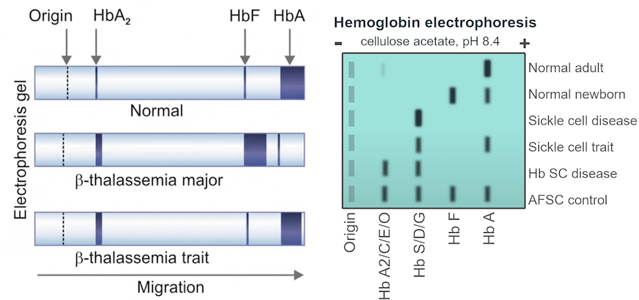3. ДНК анализ - секвениране
Използва се за окончателно потвърждение и прецизно установяване на типа мутация чрез секвениране.
Извършва се сравнителен анализ между:
- Секвенцията на пациента.
- Референтна секвенция (норма).
ДНК анализът е критичен за разграничаване между различните форми на α и β-таласемия и за пренатална диагностика.
Генетично консултиране
Рискът за потомството се определя според правилата на автозомно-рецесивното унаследяване.
29. Генетика на имунния отговор. Наследствени имунодефицитни заболявания.
Имуногенетика: дял на медицинската генетика, разглеждащ взаимовръзката между имунната система и генетиката.
Главен комплекс за тъканна съвместимост (MHC / HLA)
1. Антигенно представяне и молекули
Разпознаването на антигени от Т-лимфоцитите изисква представяне чрез MHC молекули. За пълно активиране е необходима и костимулация чрез взаимодействие на специфични повърхностни протеини.
- MHC Клас I (Ендогенен път): Представят пептиди, произхождащи от цитозола (ендогенни). Свързват се с Т-клетъчния рецептор (TCR) и ко-рецептора CD8 върху цитотоксичните Т-лимфоцити.
- MHC Клас II (Екзогенен път): Представят пептиди от външната среда (екзогенни), погълнати чрез ендоцитоза. Свързват се с TCR и ко-рецептора CD4 върху Т-хелперите.
2. HLA Комплекс и Генетично разнообразие
Човешкият вариант на MHC се нарича HLA (Human Leukocyte Antigen). Той е изключително полиморфен.
Разделя се на три главни локуса:
3. HLA Номенклатура
Именуването на алелите следва специфична структура:
- Префикс и Локус: (напр. HLA-A, HLA-DRB1).
- 1-во поле: Алелна група (съответства на серотипа).
- 2-ро поле: Специфичен HLA протеин.
- 3-то поле:
Алелни варианти на един HLA протеин, различаващи се в
кодиращата област
. - 4-то поле:
Алелни варианти на един HLA протеин, различаващи се в
некодиращите области
. - Суфикс: Отразява промени в експресията (напр. "N" за нулев алел).
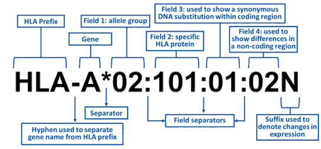
4. Клинично значение:
- Високата полиморфност на HLA е резултат от позитивна селекция.
- Автоимунитет:
- HLA профилът определя предразположението или протекцията към определени автоимунни заболявания чрез механизми като кръстосана реактивност.
Свързан е с автоимунни заболявания като: Анкилозиращ спондилит, Болест на Graves, Тироидит на Hashimoto, Myasthenia gravis
Тъканна съвместимост:
HLA е основният фактор за тъканна съвместимост.
MHC рестрикцията е основната причина за отхвърляне на органи или реакция на присадката срещу реципиента.
Алореактивност:
Около 0,1% от Т-лимфоцитите реагират на единичен чужд MHC антиген, докато едва 0,001% реагират на конкретен вирусен антиген.
Това означава, че имунният отговор при трансплантация е 100 пъти по-силен от този срещу обичаен патоген.
Директно алоразпознаване: Т-клетката разпознава директно интактна чужда MHC молекула върху клетка от трансплантата.
Индиректно алоразпознаване: Т-клетката разпознава преработен пептид от донорната MHC молекула, представен от собствена антиген-представяща клетка.
Настоящ подход: Търсене на пълно съответствие на донора и реципиента на белтъчно ниво.
Бъдещ подход: Търсене на съвместимост чрез имуногенни епитопи, наречени "eplets", вместо пълно белтъчно съответствие.
5. Клонална теория:
Клонално-селекционна теория
- Предварително разнообразие: Всеки лимфоцит притежава уникален антиген-специфичен рецептор (TCR или BCR), формиран преди срещата с антиген.
- Селекция: Даден антиген активира само специфичния за него клон от клетки.
- Експанзия: Активираният клон пролиферира (дели се бързо), за да създаде армия от ефекторни клетки.
Структура на рецепторите
- TCR (Т-клетъчен рецептор): Състои се от α и β вериги, свързани с CD3 комплекс за предаване на сигнал.
- BCR (В-клетъчен рецептор): Мембранен имуноглобулин с 2 тежки и 2 леки вериги, свързан с Igα/Igβ за сигнализация.
Генериране на разнообразие (V(D)J рекомбинация)
Основният въпрос е как малък брой гени кодират милиони различни антитела. Това се случва чрез процеса соматична рекомбинация:
Сегменти: Гените за антителата са организирани в сегменти: V (Variable), D (Diversity - само при тежките вериги) и J (Joining).
Ензими: Процесът се направлява от ензимите RAG-1 и RAG-2, които разрязват ДНК при специфични RSS последователности.
Сглобяване: Различни сегменти се комбинират на случаен принцип, за да образуват функционалния ген за вариабилната област на антитялото.
Първични имунодефицити (ПИД)
„Вродени грешки на имунитета“
ПИД обхващат над 404 нарушения, причинени от дефекти в повече от 430 гена (~2% от човешкия геном).
Класификация
Основните групи включват:
- Комбинирани ПИД (клетъчен и хуморален имунитет).
- Комбинирани ПИД със съпътстващи синдроми.
- Предимно антитялови дефицити (най-честите).
- Заболявания с имунна дисрегулация.
- Дефекти на фагоцитозата (брой и функция).
- Дефекти на вродения имунитет.
- Автоинфламаторни заболявания.
- Дефицити на комплемента.
- Костномозъчна недостатъчност.
- Фенокопия на ПИД.
Общи клинични прояви и насоки
Общи белези:
Възраст на началото:
- < 6 мес.: Вероятен Т-клетъчен дефект (налице са още майчини антитела).
- 6-12 мес.: Комбиниран или В-клетъчен дефект.
- > 12 мес.: Предимно В-клетъчен дефект или вторичен имунодефицит.
Основни клинични форми:
1. Комбинирани имунодефицити (SCID)
Тежко засягане на T и B-лимфоцитите. Считат се за педиатрична спешност.
- ADA дефицит: (T- B- NK- SCID).
- Унаследяване: Автозомно-рецесивно.
- Патогенеза:
ADA (Аденозин дезаминаза) е критичен ензим, който разгражда токсичния за имунните клетки метаболит дезоксиаденозин.
T-лимфоцити: значително понижени
B-лимфоцити: понижени, прогресивно намаляващи
Серумни Ig: понижени, прогресивно намаляващи
Клиника: тежки инфекции, ранно начало
Лечение: генна терапия, алогенна трансплантация на хемопоетични стволови
клетки
- RAG1/RAG2 дефицит: (T- B- NK+).
Унаследяване:
Автозомно-рецесивно.
(RAG1/RAG2)Патогенеза:
Невъзможност за V(D)J рекомбинация.
T-лимфоцити: значително понижени
B-лимфоцити: значително понижени
Серумни Ig: понижени
Клиника: тежки инфекции, ранно начало
Лечение: алогенна трансплантация на хемопоетични стволови клетки
2. Комбинирани ПИД със синдромни прояви
Тежко засягане на T и B-лимфоцитите и наличие на допълнителни симптоми или синдроми.
- Синдром на Wiscott-Aldrich:
Унаследяване: X-свързано рецесивно (WASP)
Патогенеза:
Патогенезата се дължи на мутация в гена WASP, който регулира актиновия цитоскелет, водейки до дефекти в образуването на имунологичния синапс и нарушена подвижност на хемопоетичните клетки.
T-лимфоцити:
прогресивно понижение, абнормен отговор на анти-CD3
B-лимфоцити:
нормален брой
Серумни Ig:
понижени IgM, често увеличени IgA и IgE
Клиника:
тромбоцитопения с малки тромбоцити, екзема, лимфоми, автоимунни заболявания,
бактериални/вирусни инфекции
Лечение: алогенна трансплантация на хемопоетични стволови клетки.
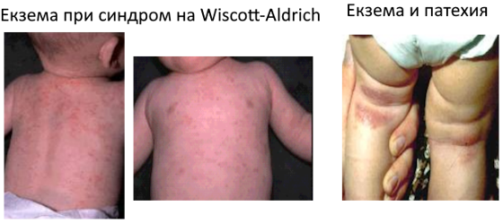
- Атаксия-телангиектазия:
Унаследяване: Автозомно-рецесивно (ATM)
Патогенеза:
Патогенезата се дължи на мутация в гена ATM, който е ключов за разпознаването и поправката на двуверижни прекъсвания в ДНК, което води до клетъчен цикъл с висока хромозомна нестабилност и повишена чувствителност към оксидативен стрес и радиация.
T-лимфоцити:
прогресивно понижение, абнормен отговор митогени
B-лимфоцити:
нормален брой
Серумни Ig:
често понижени IgA, IgE и IgG
Клиника:
атаксия, телеангиектазия, белодробни инфекции, хематологични и други неоплазми, повишен
α-фетопротеин, повишена радиочувствителност, хромозомна нестабилност.
Лечение: алогенна трансплантация на хемопоетични стволови клетки.
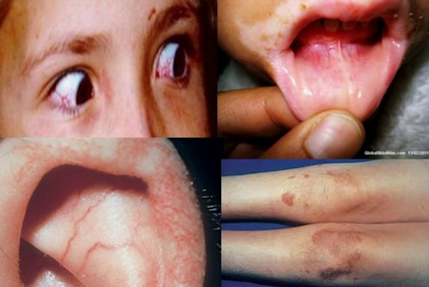
Клинични белези и диагностика на клетъчни и комбинирани дефицити
Тези състояния се считат за педиатрична спешност поради тежестта на инфекциите.
- Клинична картина:
- Общ вид: Пациентите изглеждат болни; забавен растеж (теглото е по-критично от ръста).
- Инфекции: Тежка орална кандидиаза (млечница), хронична упорита диария, тежки "обриви от пелените".
- Вируси: Респираторно-синцитиален вирус, цитомегаловирус,
Epstein Barr вирус
, аденовируси. - Физикално: Обикновено липсва лимфаденопатия, с малки изключение.
- Лабораторна диагностика и скрининг:
- ДКК: Търси се лимфопения.
- TRECs (Т-cell receptor excision circles): Съвременен скрининг за оценка на новообразувани Т-клетки.
- Лечение и Прогноза:
3. Предимно антитялови дефицитиАнтитялови дефицити: засягане на функцията на B-лимфоцитите.
- Агамаглобулинемия на Bruton:
- Унаследяване: X-свързано рецесивно (BTK)
- Патогенеза:
Патогенезата се дължи на мутация в гена за Bruton тирозинкиназа (BTK), която е критична за сигнализацията на В-клетъчния рецептор, което води до пълен блок в узряването на В-лимфоцитите и липса на периферни антитела.
Серумни Ig: понижени всички класове
- Клиника:
предимно бактериални инфекции, начало след 10-12 м. възраст
- Лечение:
заместително лечение с IVIG/SCIG; алогенна трансплантация на хемопоетични
стволови клетки
Диагностика и управление на антитяловите дефицити
- Физикални находки:
- Намалени тонзили и лимфни възли: Типично за Агамаглобулинемия (Bruton).
- Лимфаденомегалия и спленомегалия: Насочват към CVID или Hyper-IgM синдром.
- Хронични увреждания: Цикатрикси по тъпанчевите мембрани (от отити), барабанни пръсти (от хронични белодробни инфекции).
- Клинична изява:
- Лабораторни изследвания:
- Нива на Ig: Измерват се IgG, IgA, IgM и IgE (винаги спрямо възрастовите норми!).
IgA дефицит: чувствителност на лабораторните тестове
Хипер IgM може да е резултат от HIV
IgG подкласове/селективен Ig дефицит
Специфични Ig към ваксини:
Белтъчни (тетанус, дифтерия)
Полизахариди (23-валентна пневмококова)
Изохемаглутинини (след 2 г. възраст, анти-A ≥ 1:8, анти-B ≥ 1:4, без AB!!!)
- Важно: Серологичните тестове за инфекции могат да бъдат фалшиво негативни (поради липса на собствени антитела) или фалшиво позитивни (ако пациентът вече е на имуноглобулинова терапия).
- Микробиология/вирусология: Търсят се директни антигени/PCR.
- Лечение и Профилактика:
- Субституираща терапия:
- Ваксинации: Категорично забранени живи ваксини (орална полио, жълта треска, жива грипна ваксина). Близките могат да се ваксинират, но без орална полио ваксина.
4. Заболявания с имунна дисрегулация
5. Вродени дефекти на фагоцитния брой, функция или и двете
X-свързана хронична грануломатозна болест (
CGD)
Унаследяване: X-свързано рецесивно (CYBB); cytochrome b subunit beta
Засегнати клетки: неутрофилни гранулоцити и макрофаги
Патогенеза: Функционален дефект в респираторен взрив/генериране на супероксид
Клиника: хронични бактериални инфекции с формиране на грануломи
Лечение: интерферон гама, алогенна трансплантация на хемопоетични стволови клетки
6. Дефекти във вродения имунитет
Medelian Susceptibility to mycobacterial disease (MSMD)
Унаследяване: Автозомно-рецесивно (IL-12p40);
Засегнати клетки: макрофаги
Патогенеза: намалена секреция на IFN gamma
Клиника: предразположение към инфекции с Mycobacteria и Salmonella
Лечение: интерферон гама, алогенна трансплантация на хемопоетични стволови клетки
7. Автоинфламаторни заболявания
Фамилна средиземноморска треска (FMF)
Унаследяване: Автозомно-рецесивно (MEFV); Pyrin
Засегнати клетки: неутрофили и макрофаги
Патогенеза: свръхсекреция на IL1-beta
Клиника: рекурентни трески без инфекциозена причина
Лечение: колхицин
8. Дефекти на комплемента
C1q дефицит:
Унаследяване: Автозомно-рецесивно (C1QA);
Клиника: системен лупус еритематозус и инфекции с капсулирани микроорганизми
Лечение: профилактика с ваксинации, антибиотично лечение
9. Костномозъчна недостатъчност
Анемия на Fanconi:
Унаследяване:
Автозомно-рецесивно (
FANCA);Клиника:
Прогресивна панцитопения и нормални до ниски NK-клетки.
Скелетни дефекти, кожни промени, аномалии в ЦНС, сърцето, ГИТ и урогениталната система.
- Повишена хромозомна нестабилност.
Лечение: алогенна трансплантация на хемопоетични стволови клетки,
кръвопреливане
10. Фенокопия на ПИД:
Автоимунен лимфопролиферативен синдром – в резултат
на соматични мутации!
Локус TNFRSF6/CD95/Fas;
T-лимфоцити: повишени CD4−CD8−TCRαβ двойнонегативни (DN) T-лимфоцити
B-лимфоцити: нормален брой
Патогенеза: функционален дефект в апоптозата
Клиника: спленомегалия, аденопатии, автоимунни цитопении, повишен
риск за развитие на лимфоми
Лечение: алогенна трансплантация на хемопоетични стволови клетки
Съвременна диагностика и терапия при ПИД
1. Диагностични подходи
- NGS: Секвенирането от ново поколение е „златен стандарт“ за установяване на точната генетична мутация и откриване на нови заболявания сред стотиците познати дефекти.
2. Неонатален скрининг (TRECs и KRECs)
Това е метод за косвена оценка на лимфопоезата чрез измерване на кръгови ДНК молекули, остатъци от генетичната рекомбинация:
- TRECs (T-cell receptor excision circles): Маркер за Т-клетъчната продукция. Липсата им е сигнал за SCID.
- KRECs (Kappa-Deleting Recombination Excision Circles): Маркер за В-клетъчната продукция.
3. Лечебни стратегии
Клетъчна терапия
- Трансплантация на хемопоетични стволови клетки (HSCT): Класическо лечение (алогенно – от здрав донор).
- Риск: Болест на присадката срещу приемателя (GvHD), при която донорните Т-лимфоцити атакуват органите на реципиента.
- Трансплантация на тимус: Приложима при специфични дефекти като синдром на DiGeorge.
Генна терапия
Смята се за "идеалното решение", тъй като:
- Извършва се корекция на собствения генетичен дефект на пациента.
- Елиминира риска от GvHD (не се внасят чужди Т-клетки).
Фармакологично лечение
В определени случаи е възможно прилагането на медикаменти, които директно повлияват патогенетичния механизъм (напр. ензимно-заместваща терапия при ADA дефицит или специфични инхибитори).
30. Фармакогенетични дефекти – генетична същност и характеристика. Персонализирана медицина
бахти темата, няма да я разписвам
31. Хромозомни болести – честота, цитогенетични варианти, обща клинична изява
Дефиниция: Сложни вродени симптомокомплекси, дължащи се на бройни или структурни нарушения в кариотипа, протичащи с тежки смущения в соматичното, половото и интелектуалното развитие.
1. Честота на хромозомните аномалии
Хромозомните аномалии са основна причина за репродуктивни неудачи и вродени дефекти:
Честота по видове при новородени (на 1000):

2. Цитогенетични варианти
- Дефиниция: Цитогенетичните варианти представляват различните типове хромозомни аберации, които водят до клиничната изява на едно и също заболяване.
- Специфика: Един и същ синдром (например синдром на Даун) може да бъде предизвикан от различни генетични механизми, видими при изследване на кариотипа.
Основни типове цитогенетични варианти
- Свободна (пълна) форма:
- Наличие на допълнителна цяла хромозома във всяка клетка на организма. Най-често се дължи на неразхождане (nondisjunction) по време на мейозата.
- Транслокационна форма:
- Част или цяла хромозома е прикрепена към друга хромозома. Този вариант е критичен за фамилното консултиране, тъй като може да бъде унаследен от здрав родител носител.
- Мозаична форма:
- Наличие на две или повече клетъчни линии с различен генетичен състав в един организъм.
- Структурни варианти:
- Включват делеции (загуба на участък), дупликации (удвояване) или инверсии, които засягат специфични сегменти от хромозомата.
Клинично и генетично значение
- Диагностика: Точното определяне на варианта е задължително за поставяне на окончателна цитогенетична диагноза.
- Прогноза за риска (Риск от повторение): При свободните форми рискът обикновено е нисък (случайни събития), докато при транслокационните варианти рискът за следващо дете в семейството може да бъде значително по-висок.
- Фенотипна експресия: Мозаичните форми често протичат с по-лека клинична картина в сравнение с пълните тризомии.
3. Класификация:
Хромозомните болести се класифицират според:
- Вида на хромозомите: Автозомни и Гонозомни (полови).
- Вида на аномалията: Бройни (анеуплоидии, полиплоидии) и Структурни (делеции, транслокации).
- Произхода: Вродени (de novo) или Унаследени (от родител носител на балансирана аномалия).
- Обхвата: Системни (във всички клетки) или Мозаични (наличие на две или повече клетъчни линии).
Специфични бележки:
4. Клинична картина
Хромозомните болести се характеризират със специфичен клиничен спектър, засягащ множество органи и системи:
Общи прояви
- Изоставане в развитието: Тежко изоставане във физическото и умственото развитие (НПР).
- Ниска жизненост: Често съпроводена от висок риск от ранен леталитет.
- Лицев дисморфизъм: Аномалии в структурата и разположението на ушите, очите (напр. ектопия на зеницата), носа, езика, устата и небцето.
Малформативен синдром:
Наличие на множество вродени аномалии на вътрешните органи (най-често сърдечни пороци, аномалии на бъбреците и ГИТ).
Смущения в репродукцията:
При гонозомните (половите) аномалии често се наблюдава хипогонадизъм, стерилитет или недоразвити вторични полови белези.
Сравнение между Автозомни и Гонозомни болести:
| Характеристика | Автозомни болести | Гонозомни болести |
| Честота | По-редки | По-чести |
| Тежест | По-тежки (често фатални) | По-леки (съвместими с живота) |
| Интелект | Тежко умствено изоставане | Леки отклонения или нормален |
| Физически белези | Множествени малформации | Нарушен растеж и полово развитие |
| Откриване | При раждане (дисморфизъм) | Често случайно (пубертет/инфертилитет) |
5. Цитогенетичен метод за изследване
Цитогенетичният анализ е "златен стандарт" за потвърждаване на диагнозата и е абсолютно необходим за целите на медико-генетичното консултиране.
Трудности:
- Редки болести
- Нямат специфична клинична характеристика
- Голяма клинична вариабилност
Материали за изследване:
За получаване на метафазни хромозоми се използват тъкани с активно делящи се клетки или клетки, които могат да бъдат стимулирани към делене in vitro:
- Периферни лимфоцити: Най-честият материал; стимулират се с фитохемаглутинин (ФХА).
- Костен мозък: Използва се основно при онкохематологични заболявания (левкемии).
- Фибробласти: Получени чрез кожна биопсия (жизнеспособни дори няколко дни след смъртта).
- Солидни тумори: За диагностика на специфични хромозомни промени в раковите клетки.
- Амниоцити / Хорионни въси: За целите на пренаталната диагностика.
6. Подробни показания за хромозомен анализ
1. Множествени вродени аномалии (МВА)
- Лица с подозиран разпознаваем хромозомен синдром: Например синдром на Даун (Тризомия 21).
- Лица с неразпознаваемо съчетание: Наличие на ≥ 2 малформации със или без умствено изоставане.
- Основни цели:
2. Необяснимо умствено изоставане (УмИ)
- Субтеломерни преустройства: Около 7% от случаите на необяснимо УмИ се дължат на микроделеции или микродупликации в субтеломерните региони (богати на гени).
- Диагностика: Освен класически анализ, тук се прилагат методи с по-висока разделителна способност като FISH, CGH или MLPA.
3. Отклонения в половото развитие и диференцировка
- Двусмислен пол (Ambiguous genitalia): Счита се за спешно медицинско състояние при раждане. Трябва бързо да се изключи животозастрашаваща вродена надбъбречна хиперплазия.
- Късни прояви: Забавен пубертет, първична аменорея (напр. синдром на Търнър 45,X) или мъжка гинекомастия (напр. синдром на Клайнфелтер 47,XXY).
- Роля на SRY гена: Критичен регион на Y-хромозомата (35 kb), отговорен за детерминацията на мъжкия пол.
4. Инфертилитет и репродуктивни неудачи
- Около 10% от семействата са инфертилни; около 16% са с повтарящи се аборти.
В 5-6% от семействата с репродуктивни неудачи,
един от партньорите е носител на балансирано
преустройство.
Поне 5% от мъжете с azoospermia имат
синдром на Кlinefelter.
Минимум 15% от всички зачатия имат хромозмна
аномалия.
- 70% от зачатията се губят преди раждане (повечето преди имплантация – т.нар. „подводна част на айсберга“).
Хромозомни мутации (случайни или унаследени):
Ранни спонтанни аборти (до 8 г.с.) – 50-70%
Късни спонтанни аборти (8-20 г.с.) – 5%
5. Необяснимо мъртвораждане и неонатална смърт
- Мъртвораждане: Загуба след 20 г.с. Аномалии се откриват при 12% от мацерираните и 4% от немацерираните плодове.
- Неонатална смърт: Смърт в първите 4 седмици (6% честота на аномалии).
При изоставане в растежа, наличие на поне една
вродена аномалия в мъртвородено или смърт в
неонаталния период се прави анализ на кръв или кожни
фибробласти (жизнени няколко дни след смъртта).
6. Фамилно изследване
- Изследване на родственици (родители, братя, сестри) на пробанда (индексния пациент) за откриване на здрави носители на балансирани преустройства с цел превенция.
7. Онкохематология и хромозомна чупливост
Някои видове левкемии, лимфом на
Burkitt и много солидни тумори (ретинобластом,
тумор на Wilms), са свързани със специфични
хромозомни аномалии, които могат да имат
диагностичен и прогностичен смисъл.
Повече от
100 различни аномалии с въвлечени почти
всички хромозоми са наблюдавани в над 40
различни вида рак.
Хромозомни накъсвания (Chromosome breakage): (май това е хромозомна чупливост)
Представляват случайни видими лезии (дефекти) в структурата на хромозомите.
Причини за възникване:
Вътрешни фактори: Грешки при репарацията или синтеза на ДНК.
Външни фактори: Увреждания от околната среда, като йонизираща радиация и мутагенни химикали.
При нормални условия тези накъсвания се срещат с ниска честота, тъй като механизмите за поправка на ДНК работят ефективно.
32. Тризомия 21 (синдром на Даун) – честота, клиника, цитогенетични варианти, генетична прогноза, диагностика и профилактика.
Това е най-често срещаната и най-добре познатата хромозомна болест, както и най-честата генетична причина за умствено изоставане.- Честота: 1 / 700 новородени
- Пол: съотношението мъжки / женски пол е повишено (около 1,15:1) при новородените (отнася се за цитогенетичен вариант тризомия 21)
Клиника:
Лицев дисморфизъм:
- Брахицефален череп с плосък лицев профил
- Косо разположени очни цепки, двустранен епикант
- Малък нос на широка основа
- Отворена уста с тенденция за протрузия на езика
- Малки, ниско разположени ушни миди с прегънат хеликс
Други:
- Късо и широко вратле
- Понижен мускулен тонус
- Четирипръстна бразда (50%)
- Клинодактилия на пети пръст
- Трансверзална палмарна бразда
- Четирипръстна бразда (50%)
- Сърдечни аномалии (40%)
- Дуоденална атрезия
- Трахеоезофагеална фистула
- Чести инфекции
- IQ ~ 50
Продължителност на живота: - Средна преживяемост 49г.
- Преживяемост до 60г. - 44,4%.
Други заболявания с по-висока честота:
- Целиакия
- Болест на Хиршпрунг
- Проблеми със зрението
- Хипотиреоидизъм
- Левкемия – 15 пъти по-често
- Болест на Алцхаймер – няколко десетилетия по-рано
Цитогенетични варианти:
- Свободна тризомия – пълна форма (95%):
- Кариотип: 47, ХХ/ХУ, + 21
- В резултат на хромозомно неразделяне по време на първото (80%) и по-рядко по време на второто мейотично делене.
- В 85% от случаите допълнителната 21 хромозома е с майчин произход (зависимост с напреднала възраст на майката).
- Мозаичен вариант (1-2%):
- Кариотип: 47, ХХ/ХУ, + 21/ 46, ХХ/ХУ
- Етиология – случайно възникнал митотичен nondisjunction в тризомична или нормална зигота.
- Тежестта на клиничната картина при тези пациенти варира в зависимост от съотношението между аберантната и нормалната клетъчна линия.
- Транслокационна форма (4%):
- Кариотип: 46, ХХ/ХУ,der(14;21)(q10;q10), +21 или 46, ХХ/ХУ,der(21;21)(q10;q10), +21
- Децата получават допълнителната 21 хромозома от родител, носител на балансирана транслокация, включваща хромозома 21 или транслокацията е нововъзникнала.
Риск за повторение:
Други методи за диагностика
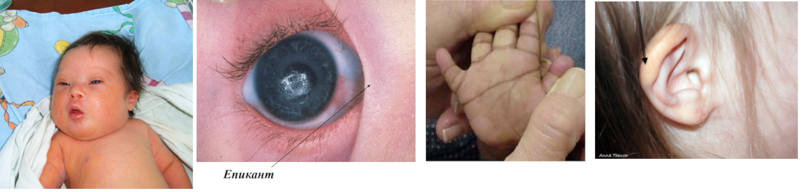
33. Хромозомни болести, свързани с аберации на автозомите (без тризомия 21).
Клинична характеристика, методи за диагностика, цитогенетични варианти, популационна честота.
Синдром на Edwards (Тризомия 18)
Генетика:
Клинична характеристика:
Синдромът се характеризира с тежко психомоторно и физическо изоставане
.
- Краниум: микроцефалия, долихоцефалия, проминиращ тил, широко отворени фонтанели.
- Лицев дисморфизъм: микрофталмия, хипертелоризъм, епикант, тесни очни цепки, малко носле, микрогнатия, ниско разположени малформативни ушни миди, къс врат с кожна гънка.
- Други: Бъбречни, сърдечни аномалии, къс стернум, припокриващи се пръсти, крипторхизъм, ‘rocker bottom’ ходила, хипопластични нокти.
Преживяемост:
95% от тризомичните плодове загиват през ембрионалния и феталния период.
5-10% от засегнатите деца преживяват след 1г. възраст.
Етиология:
- 95% от случаите възникват в резултат на неправилно разделяне по време на първото мейотично делене на яйцеклетката.
- Установена е зависимост с напреднала възраст на майката.
Цитогенетични варианти:
Транслокационни варианти се срещат рядко (ама явно ги искат)Свободна тризомия (най-честият вариант):
47,XX/ХУ,+18
Транслокационен вариант:
46,XX,rob(13;18)(q10;q10),+18.
Мозаичен вариант:
46,XX / 47,XX,+18.

Синдром на Patau (Тризомия 13)
Генетика:
Клинична характеристика:
Етиология:
- 65% от случаите възникват в резултат на неправилно разделяне по време на първото мейотично делене на яйцеклетката, 10% - в сперматозоидите.
- Установена е зависимост с напреднала възраст на майката.
- 20% са транслокационните варианти.
- 5% от случаите са мозаични.
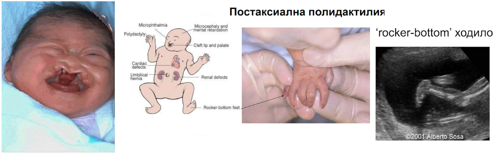
Cri-du-chat синдром (Cat cry синдром, Монозомия 5p синдром)
Генетика:
Клинична характеристика:
Етиология:
- 80-85% от случаите са резултат от de novo възникнала делеция на 5p (15.3-15.2) – терминална делеция
- Загубата на малък регион от късото рамо на хромозомата 5p15.2 (cri-du-chat критичен регион) корелира с всички клинични белези с изключение на котешкото мяукане, за който е отговорен участъкът 5p15.3
- В 80% от случаите делецията е с бащин произход
- 10-15% от всички случаи възникват в резултат на неравна сегрегация в гаметите на родител, носител на балансирана транслокация (напр. 46,XY,t(5;17)(p13.3;p13))
Диагностика
Състоянието се диагностицира при раждането
поради специфичните дисморфични белези и
характерен плач, дължащ се на аномалии на
ларинкса и мозъчна дисфункция.
Цитогенетичен анализ, FISH.
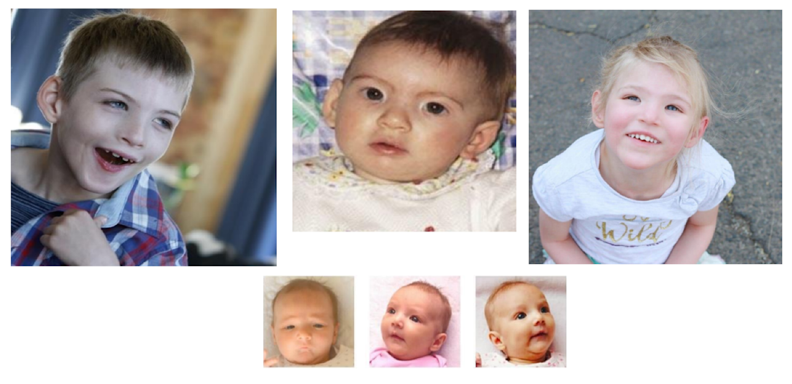
Синдром на Wolf Hirschhorn (Монозомия 4p синдром)
Генетика:
Дължи се на делеция (загуба на материал) от късото рамо (p) на 4-а хромозома.
Кариотип: 46,XX/XY,del(5)(p15.3p15.2)
- Честота: –1/50000;
Пол: Засeгнат е предимно женският пол.
Клинична характеристика:
- Умствено, двигателно и физическо изоставане
- Микроцефалия, проминираща глабела, кръгло лице, профил тип „гръцки шлем“, дефекти на скалпа
- Колобома, нистагъм, страбизъм, епикант
- Големи, щръкнали, ниско разположени ушни миди
- Високо небце, микрогнатия
- Сърдечни аномалии
- Гърчове
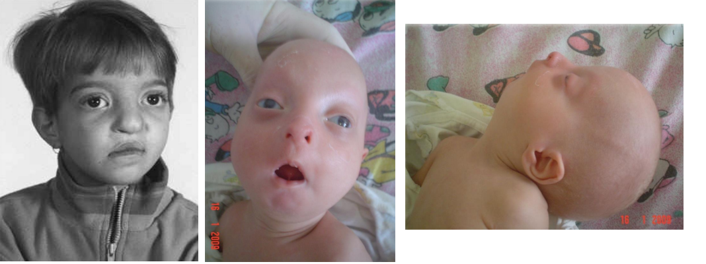
34. Хромозомни болести, свързани с аберации на половите хромозоми /при фенотипен женски пол/ - клинична характеристика, методи за диагностика, цитогенетични варианти, популационна честота.
Синдром на Turner (Монозомия Х)
Генетика:
- Най-честата хромозомна причина за женски репродуктивни проблеми: води до преждевременна яйчникова недостатъчност, инфертилитет, нисък ръст и характерен фенотип.
Честота: около 1 / 2 500 живородени момиченца
- Пренатални белези: Фетален хидропс, Кистична хигрома.
Синдромът не се унаследява и рискът за повторение е нисък.
99% от случаите на монозомия в плода завършват със спонтанен аборт.
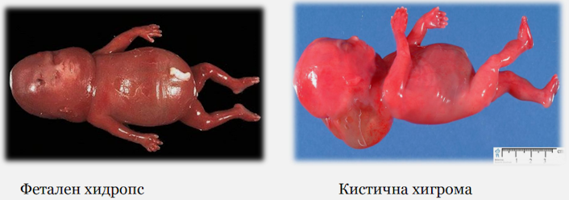
Клинична характеристика:
- Генерилизиран лимфедем:
- Свободните кожни гънки формират по-късно специфичното вратле при синдрома на Turner
- Диагнозата може да се постави клинично веднага след раждането заради наличието на локализиран по длани и ходила лимфедем
- Лицев дисморфизъм:
- Антимонголоидни очни цепки
- Хипертелоризъм
- Ниско разположени уши
- Микрогнатия.
- Други:
- Нисък ръст (средно 147см)
- Тесен таз
- Късо/широко вратле с ниска линия на окосмяване
- Раздалечени мамили
- Гръден кош с щитовидна форма
- Пигментни невуси
- Сърдечни дефекти
- Бъбречни аномалии
- Репродуктивни: Гонадна агенезия, Инфертилитет, No menstruation.
- Нормално умествено развитие.
- Рентгенологично изследване: Скъсяване на 4-та метакарпална кост.
Цитогенетични варианти:
- Бройно нарушение: 45, Х.
- Мозаицизъм:
- 45, Х / 46, ХХ
- 45, Х / 46, ХХ / 47, ХХХ.
- Структурни нарушения:
- 46, Хdel(Хр)
- 46, Хdel(Хq)
- 46, Хi(Хq)
- 46, Хr(X)
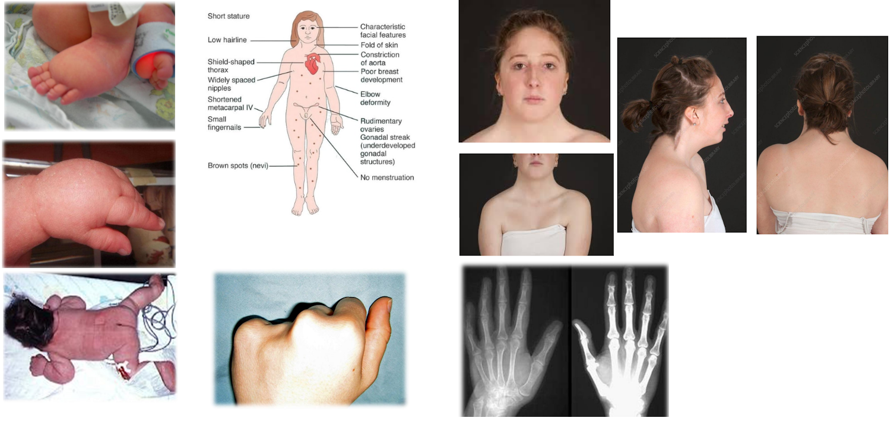
Полизомия Х
- При увеличаване на броя на Х хромозомите, в жени с тетразомия Х или пентазомия Х, клиниката е по-тежка и включва нарушения в психо-моторното развитие, дисморфични и малформативни прояви.
- Диагнозата се поставя чрез цитогенетичен анализ на метафазни хромозоми.
- При ненаследствената форма рискът е нисък; по-висок е при наследствената форма.
- Когато има родено болно дете в семейството с полизомия Х, се препоръчва пренатална диагноза.
Форми:
- 47, ХХХ (Тризомия Х):
- Честота: 1/1000 жени.
- Фенотип: Нормален фенотип, среден ръст около 172 cm, ¾ от жените са фертилни.
- Възможни проблеми: Епикант, късен пубертет, ранна менопауза, забавено развитие на моторни умения и речеви нарушения.
- IQ 85-90.
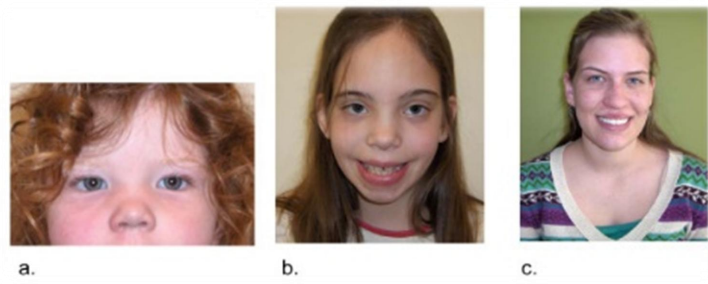
- 48, ХХХХ:
Фенотип: Нормален ръст, косо разположени очни цепки, лек хипертелоризъм, епикант, микрогнатия, клинодактилия на пети пръст,
радиоулнарна синостоза
Други симптоми: менструални нарушения, намалена фертилност
IQ 30-80
- 49, ХХХХХ
35. Хромозомни болести, свързани с аберации на половите хромозоми /при фенотипен мъжки пол/ - клинична характеристика, методи за диагностика, цитогенетични варианти, популационна честота.
У половата хромозома е малка, акроцентрична хромозома. Върху нея са картирани 2 гена и са идентифицирани няколко ДНК маркери. Един от тези гени е тестис-детерминиращият фактор ТДФ, който има важно значение за диференцирането на пола. ТДФ е разположен в края на късото рамо на У хромозомата и кодира синтеза на У протеин. Този протеин активира транскрипцията на много други гени с автозомна локализация, които участват в половото диференциране на индивида.
Синдром на Klinefelter (XXY)
Общи характеристики:
Кариотип: 47, ХХY
- Повечето мъже остават недиагностицирани до пубертета.
- Индикация за цитогенетично изследване: хипогонадизъм или инфертилитет (азооспермия).
- Има нормална продължителност на живота.
Клиника:
Клиничен фенотип:Нервно-психично развитие:
- Повечето мъже имат леко снижен интелект – фамилността го повлиява
- Субнормални стойности (IQ 85-90) или УИ могат да се дължат на по-голям брой Х-хромозоми
- 70% имат леки нарушения в обучението и развитието ± поведенчески отклонения, несигурност
Етиология:
- 56% от случаите допълнителната хромозома е с майчин произход
- 44% се дължат на нарушен ХУ-кросинговър по време на мейозата и формиране на ХУ-сперматозоид
- Мозаицизъм се установява в около 15% от случаите
Цитогенетични варианти:
- Бройни:
47, ХХY - класически
- 48, ХХХY (по-тежко умствено изоставане),
- 49, ХХХХY (Синдром на Fraccaro - значително изоставане в интелектуалнот оразвитие, нисък ръст, хипогонадизъм, скелетни аномалии (радиоулнарна синостоза, ограничена пронация в лакетната става, genu valgum)).
- Мозаични:
- 46, ХY/ 47, ХХY;
- 46, ХY / 47, ХХY / 48, ХХХY.
- Структурни:
- 47, Хi(Xq)Y (i-изохромозома)
- 47, Хr(X)Y (r-ринг хромозома)
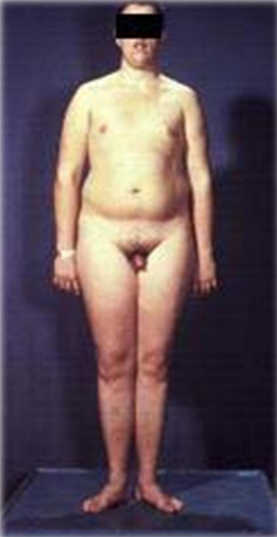
47, ХYY синдром
Честота: 1/1000 мъже
- Фенотипни белези: нормални.
- Характеристики: Висок ръст, нормален интелект (обикновено по-нисък от този на сибсите), нарушения във фината моторика, лек интенционен тремор, хиперактивност, нарушено внимание, запазена фертилност.
- Етиология: неразделяне по време на второто мейотично делене при мъжа, без установена зависимост от бащината възраст.
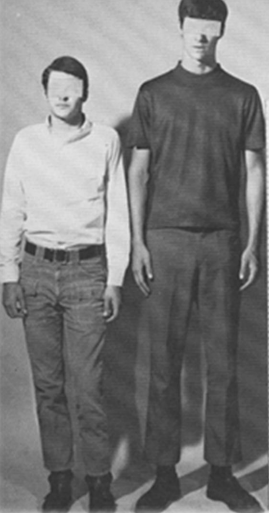
36. Микроделеционни синдроми
Микроделеционни синдроми.
- Заболявания, дължащи се на хромозомна делеция, с размер под 5Mb (5 млн. базови двойки), обхващаща няколко или множество съседни гена (contiguous gene syndromes).
- Тези нарушения са под разрешителната способност на конвенционалните цитогенетични методи
- Разкриват се чрез молекулярно-цитогенетични методи (FISH) и молекулярно-генетични методи (array CGH и др.)
1. Синдром на DiGeorgi:
- Честота: 1 / 4000
живородени
- Етиология - микроделеция 22q11
- Клинични прояви:
- Тимусна аплазия и Т-клетъчен имунен дефицит (77%)
- Сърдечно съдови аномалии (75% от индивидите) - най-често тетралогия на Фало
- Аномалии на небцето - 70%
- Лицев дисморфизъм – хипертелоризъм, ниско разположени ушни миди, микрогнатия (80%)
- Умствено изоставане, изоставане в развитието (60 70%)
- Хипoпаратиреодизъм, хипокалциемия (50%)
- Нисък ръст
- Психични разстройства, автоимунни заболявания и др.
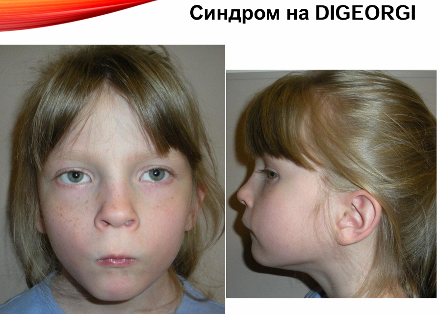
2. Синдром на Langer-Giedion (TRF II – Tricho-Rhino-Phalangeal syndrome, тип II)
- Етиология: делеция 8q24.11-q24.13, най-често спорадична проява като са описани и случаи с доминантно унаследяване
- LGS и TRF тип I са резултат от различна по големина делеция на 8q.
- Фенотип:
- Леко до умерено умствено изоставане
- Големи ушни миди
- Крушовиден нос
- Рядка коса
- Гладък филтрум
- Брахидактилия
- Конусообразни епифизи на фалангите
- Множество доброкачествени костни образувания (екзостози).
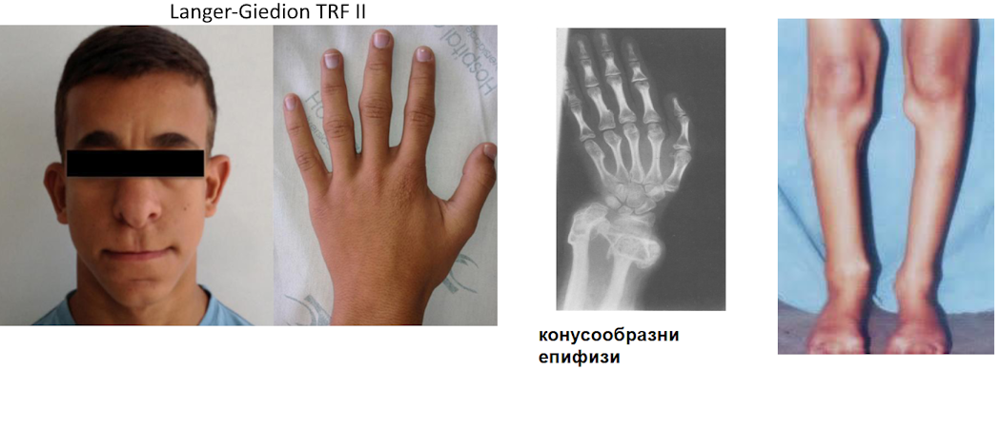
3. WAGR - СИНДРОМ
- Етиология: Микроделеция 11p13.
- Фенотип:
- Аниридия (липса на ирис).
- Тумор на Wilms.
- Двусмислени гениталии.
- Хипоспадия.
- Крипторхизъм.
- Умствено изоставане.
- Нисък ръст със затлъстяване.
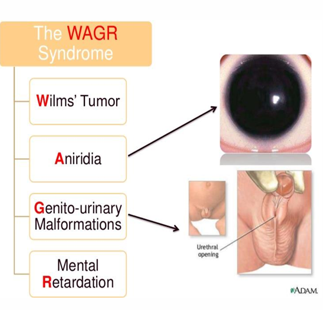
3. Други микроделеционни синдроми
| Синдром | Клинични белези | Хромозомна делеция |
| Williams syndrome | Лицев дисморфизъм, пулмонална стеноза, леко УИ, хиперкалциемия | 7q11 |
| Miller-Dieker | Лисенцефалия, лицев дисморфизъм | 17p13.3 |
| Smith-Magenis | УИ, хиперактивност, дисморфични белези, автоагресия | 17p11.2 |
Rubinstein-Taybi | Лицев дисморфизъм, УИ, широки палци на ръцете и краката | 16р13 |
Prader – Willi syndrome | Леко УИ, затлъстяване, хипогонадизъм, нисък ръс | 15q11-13pat |
Angelman syndrome | Тежко УИ, епилепсия, пристъпен смях, атаксия | 15q11-13mat |
* Тези състояния могат да се дължат и на генни мутации в същия регион
Заболявания, свързани с геномен импринтинг
Обща характеристика
- В региона 15q11-13 е идентифициран импринтинг център като генната експресия се регулира посредством метилиране на цитозиновите бази.
Фигурата показва двата гена в критичния регион на 15
хромозома:
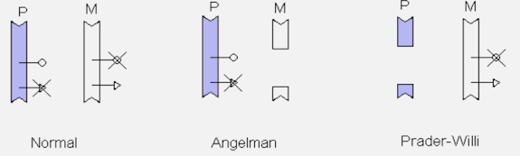
1. Синдром на Prader-Willi (PWS)
Синдромът на Прадер-Вили е първото състояние, при което е описан феномена геномен импринтинг.
Честота: 1 / 15 000
Етиология:
Повечето случаи на PWS са спорадични
- 75% - делеция 15q11-13 на бащината хромозома 15 (46,XX(XY),del(15)(q11q13)pat).
- 25% - Майчина унипарентална дизомия (UPD 15mat).
- 1% - мутация в импринтинг контролния ген
или
структурно преустройство, засягащо 15 хромозома
Фенотип:
- Хипотония, трудности с храненето, ненаддаване на тегло (в ранна детска възраст- 1-3 години)
- Лицев дисморфизъм (бадемовидни очи, страбизъм, битемпорално стеснение, тънка горна устна)
- Умствено изоставане (леко до умерено)
- Хиперфагия, затлъстяване (след 3-4годишна възраст).
- Нисък ръст, малки ръце и крака
- Хипогонадизъм/хипогенитализъм
- Сколиоза/остеопороза
- Нормална продължителност на живота
Диагностични методи:
- FISH - за микроделеции
- ДНК методи - за анализ на метилиционния статус и търсене на мутации в импринтинг центъра
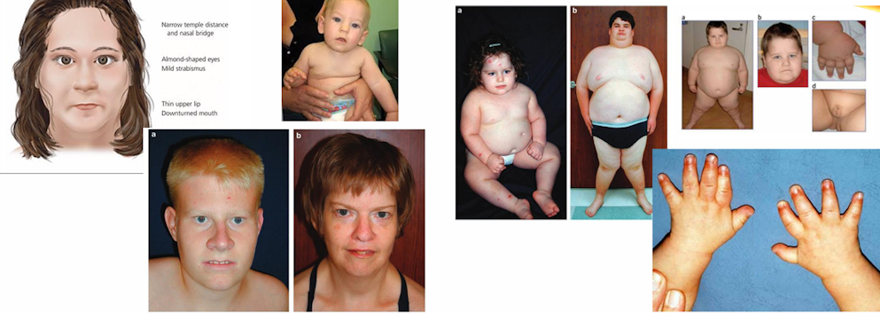
2. Синдром на Angelman (AS)
Синоним: Синдром на “щастливата кукла”.Честота: 1 / 15 000
Етиология:
Повечето случаи на AS са спорадични
- 70% - делеция 15q11-13 на майчината хромозома 15 (46,XX(XY),del(15)(q11q13)mat)
- 2% Бащина унипарентална дизомия (UPD 15pat).
- 1-2% - мутация в импринтинг контролния ген
- 25% - мутации в UBE3A гена
Фенотип:
- Тежко умствено изоставане (100%).
- Микроцефалия.
- Атаксия (лошка координация)
- Пристъпи на немотивиран смях ("щастлива кукла").
- Епилепсия.
- Хиперактивно поведения.
- Хипопигментация, светла кожа и руска коса (65%).
- Прогнатия, редки зъби, голяма уста с протрузия на езика
- Нормална продължителност на живота.
3. Синдром на Beckwith – Wiedemann (BWS)
Генетика:
- UPD11pat
При заболяването има свръх-експресия на генен продукт (обратно на PWS и AS, които се дължат на загуба на генен продукт!) поради двойна доза за гена IGF2 в критичната област 11р15.5.
Активен е само алелът от бащината хромозома (майчиният алел нормално е неактивен, импринтиран).
- Честота:
- 1:13 700 новородени
- 1:4000 новородени след in vitro процедура
Клинични прояви:
- Макросомия (
рождено тегло и дължина >97
персентил)
Макроглосия
Срединен дефект на предната коремна стена (омфалоцеле, умбиликална херния, диастаза на правите коремни мускули)
Неонатална хипогликемия
Характерни ушни резки (гънки) и ямки.
Повишен риск (7-10%) от ембрионални тумори (тумор на Вилмс, хепатобластом, невробластом и др.).
При някои деца със синдрома на Бекуит-Видеман се наблюдава хемихипертрофия (някои части на тялото са по-големи, което води до асиметричен вид)
4. Синдром на Silver-Russel (SRS)
Генетика:
Клинични прояви:
- Малки за гестационната възраст (тегло и ръст на раждане <3 персентил)
- Забавен растеж след раждането
- Значителни затруднения в храненето в малката възраст
- Относително голям размер на главата спрямо тялото
- Триъгълна форма на лицето
- Изпъкнало чело (при оглед в профил)
- Асиметрия на тялото (хемихипотрофия)
- Забавяне в развитието на речта
- Скелетна асиметрия.
- Малки изкривени 5ти пръсти (клинодактилия).
Лечение:
- Прилага се с успех заместително лечение с растежен хормон
37. Мултифакторно унаследяващи се вродени аномалии – примери, диагностика, профилактика.
1. Цепки на устните и небцето
Етиология: Резултат от нарушено срастване на лицевите кости и меките тъкани по срединната линия през ембрионалното развитие.
Клинични форми:
- Изолиран дефект на горната устна (labium leporinum) - „заешка устна“.
- По-често се среща при момчета.
- Може да бъде едностранна или двустранна.
- Изолиран дефект на небцето - „вълча уста“.
- Комбиниран дефект (хейлогнатопалатосхиза): Обхваща устната, горната челюст и небцето.

2. Дефекти на невралната тръба (ДНТ)
Етиология: Пораждат се от нарушено затваряне (срастване) на невралната тръба през 3-та и 4-та гестационна седмица.
Основни клинични форми:
А. Аненцефалия
- Липса на голяма част от главния мозък и черепния свод.
- Децата се раждат мъртви или живеят съвсем кратко.
- Среща се 2 пъти по-често при момичета.
Б. Спина бифида (Spina bifida)
Възниква при незатваряне на гръбначно-мозъчния канал поради дефект в сливането на дъгите на един или повече прешлени.
- Spina bifida occulta (скрита):
- Най-леката форма. Непълно затваряне само на костния канал, покрит от нормална кожа.
- Често протича безсимптомно
- Може да има окосмяване или петно над мястото на дефекта.
- Понякога се наблюдават леки неврологични или тазово-резервоарни нарушения.
- Има
еднакво полово
разпределение
- Spina bifida aperta (отворена):
- Менингоцеле: През дефекта пролабират само мозъчните обвивки.
- Миеломенингоцеле: През дефекта пролабират обвивките заедно с част от гръбначния мозък.
- Може да доведе до тежка парализа на долните крайници и сфинктерите.

Профилактика
Всички жени, които планират бременност да приемат по 400
микрограма (0.4 mg) фолиева киселина дневно, поне 1 месец преди и 2-3
месеца след забременяване
При жени с доказани мутации в MTHFR гена (метилентетрахидрофолат редуктаза) е задължителен приемът на метилирана форма на фолиева киселина, тъй като организмът им не може ефективно да преработва стандартната ФК.
Проучване на ролята на инозитол в допълнение към ФК
В случаи на повишен риск:
Ултразвуков скрининг (фетална морфология) в 16-18 г.с;
Късен майчин серумен скрининг на бременни жени чрез изследване на
серумното ниво на алфа-фетопротеина (AFP)
38. Често срещащи се заболявания при възрастните с мултифакторно унаследяване – захарен диабет, хипертонична болест, мозъчносъдова болест, хиперлипидемии, психични заболявания.
1. Захарен диабет (ЗД)
- Често метаболитно заболяване, характеризиращо се с хипергликемия на биохимично ниво.
- Механизми на хипергликемия:
- Намалена инсулинова секреция.
- Намалена утилизация на глюкоза.
- Повишена глюкозна продукция.
Хипергликемията води до вторично
увреждане на бъбреци, периферна
нервна система, очи и сърдечно-съдовата система.
Клиничната изява се предшества от
период на нарушен глюкозен толеранс
на фона на прогресиращия основен
патогенетичен процес.
Захарен диабет тип I
Захарен диабет тип II
- Разпространение: 90% от случаите на ЗД в световен мащаб.
- Асоциирани гени с диабет тип 2:
- Рискови фактори:
- Емпиричен риск (1-ва степен родственици): 10-15%.
- Конкордантност при монозиготни близнаци: Около 80%.
2. Коронаро-артериална болест (КАБ)
Същност: Най-честото сърдечно-съдово нарушение, характеризиращо се със стесняване на коронарните артерии вследствие на образуване на липидно натоварени, атеросклеротични лезии. Стеснението забавя кръвния поток към сърцето и може да доведе до миокарден инфаркт и мозъчен инсулт.
Генетични фактори и биологични пътища
Различни гени и техни продукти са въвлечени в стъпаловидния процес на развитие на КАБ:
- Транспорт и метаболизъм на серумни липиди: Холестерол, аполипопротеин Е, аполипопротеин CIII, LDL рецептор и липопротеин (а).
- Вазоактивни компоненти: Ангиотензин конвертиращ ензим (ACE).
- Кръвна коагулация и фибринолиза: Гликопротеини Ib и IIIa, тромбоцитна адхезия и фибринолиза (PAI1, гликопротеини Ib и IIa).
- Други: Възпалителни и имунни пътища, както и специфични компоненти на артериалната съдова стена.
Директен ДНК анализ за фамилна хиперхолестеролемия:
- ↑LDL холестерол: Наследственост между 40-60%.
- ↓HDL холестерол: Наследственост между 45-75%.
- Забележка: Липсата на ДНК потвърждение за фамилна хиперхолестеролемия не променя прогностичния и терапевтичен подход към пациента.
Рискови фактори:
- Хипертонична болест.
- Повишени нива на холестерол.
- Тютюнопушене и наднормено тегло.
- Фамилна обремененост.
Ако пробандът е жена: Риск за повторение за мъж 1ва степен родственик е 7
пъти популационния.
Ако пробандът е мъж: Рискът за повторение за жена 1 ва степен родственик е
2,5 пъти популационния.
Ако пробандът е млад (<55 години): Рискът се увеличава 11,4Х популационниа
Превенция
Промяната в стила на живот може значително да повлияе и намали риска от КАБ чрез:
- Повишена физическа активност.
- Здравословно хранене.
- Отказ от тютюнопушене.
- Медикаментозно лечение на повишените холестеролови нива.
Хипертонична болест (Есенциална хипертония)
Хипертоничната болест е едно от най-разпространените мултифакторни заболявания, засягащо около 25% от населението в развитите страни. Тя е ключов рисков фактор за развитието на сърдечно-съдови заболявания, мозъчен инсулт и бъбречни заболявания.
Етиология и Рискови фактори
Развитието на заболяването е резултат от комплексното взаимодействие между генетична предразположеност и фактори на средата.
Външни (средови) фактори:
- Повишен прием на сол.
- Намалена физическа активност.
- Затлъстяване.
- Хроничен стрес.
Генетични фактори:
- Геномно сканиране: Идентифицирани са специфични региони в генома, които съдържат гени за предразположение към есенциална хипертония.
- Редки синдроми: Съществуват конкретни гени, отговорни за редки моногенни синдроми, чиято основна клинична изява е хипертонията.
Емпиричен риск за потомството
Наследствеността играе значима роля при определяне на риска за следващото поколение:
- Един родител с хипертония: Рискът за децата е приблизително 30%.
- Двама родители с хипертония: Рискът за децата нараства на над 40%.
Патогенетично значение
Хипертонията действа като катализатор за други системни увреждания:
- Сърце: Води до хипертрофия и коронарни проблеми (тясно свързана с КАБ).
- Мозък: Основна причина за хеморагични и исхемични инсулти.
- Бъбреци: Предизвиква нефросклероза и прогресираща бъбречна недостатъчност.
Мозъчен инсулт
Мозъчният инсулт е мултифакторно заболяване, при което наследствеността играе значима роля чрез различни генетични механизми и асоциирани състояния.
Генетична основа на инсулта
Наследствеността при инсулт се асоциира с:
А. Моногенни заболявания:
- Сърповидно-клетъчна анемия.
- MELAS:
Митохондриална болест
- CADASIL: Церебрална автозомно-доминантна артериопатия със субкортикални повтарящи сеинфаркти и левкоенцефалопатия с деменция.
Б. Наследствени нарушения на коагулацията:
- Мутации във фактор V (Leiden):
- При хетерозиготи рискът за венозна тромбоза е 7 пъти по-висок.
- При хомозиготи рискът нараства до 100 пъти спрямо популационния.
- Мутации в коагулационни инхибитори - Протеин С и Протеин S: Значим рисков фактор, особено при деца.
Емпиричен риск:
Други рискови фактори (Коморбидност)
Инсултът често е краен резултат от действието на други мултифакторни състояния:
- Хипертония и атеросклероза.
- Захарен диабет и затлъстяване.
- Тютюнопушене.
Психиатрични заболявания
Шизофрения
Група от тежки, често хронични психиатрични заболявания, характеризиращи се със загуба на реална представа и контакт с действителността, нарушения в мисленето, поведението и емоциите, социално отчуждение.
- Най-често срещаната форма на психоза
- По-ранна изява и по-тежка клинична картина при мъже
- Степен на влияние на генетичните фактори около 80% - комбиниран ефект на голям брой генетични варианти
- Външни фактори:
Ранни
–
инфекции, мозъчна травма, недохранване, стрес при майката
По-късни – стрес, социално-икономически статус, миграция и урбанизация
- Емпиричен риск (1-ва степен родственик): 8-10%
Афективни разстройства
Група от психиатрични заболявания, при които доминират симптомите на разстройство на настроението (афекта) спрямо приетото за норма ниво. Към групата спадат депресивните разстройства и биполярните афективни разстройства (БАР).
- Най-честите психиатрични заболявания при възрастните
- Депресивни разстройства:
- Биполярно афективно разстройство (БАР):
Честота: 0,4-1,2% от населението.
Наследственост: 80-90%.
Емпиричен риск (1-ва степен): 5-10%.
Болест на Алцхаймер
Обща характеристика:
- Представлява органично психично разстройство, дължащо се на първична прогресивна дегенерация на мозъка.
Характеризира се с прогресивна мозъчна атрофия и влошаване на
когнитивните функции
.Най-честата причина за деменция сред възрастните хора (50%)
Основен рисков фактор е напредването на възрастта.
По време на изява бива ранна и късна (с начало след 65г).
Форми:
- Фамилна (20-25%): Обикновено с мултифакторна и по-рядко моногенна етиология.
- Спорадична (нефамилна): Предполага се мултифакторна генеза.
- Фамилните случаи са по-редки, с по-ранна изява
Генетични фактори:
Моногенни дефекти с автозомно доминатно унаследяване – в 10% от случаите
- Apo ε
– по-честа, късна форма на болестта при алел ε4
. 3 гена, свързани с по-ранно начало:
Presenilin 1, Presenilin 2 и β-amyloid precursor protein (APP).
Предполага се значението и на фактори като::
Рискови групи: Пациенти със синдром на Даун (изява на 40-50 г.).
Емпиричен риск: 2 пъти по-висок при родственици първа степен.
Ракови заболявания
В повечето случаи раковите заболявания също са мултифакторни.
- Етиология: Неопластичният процес зависи от множество ендогенни и екзогенни фактори, водещи до нарушения в ДНК.
- Общи механизми: Съществуват сходни механизми между рака и други мултифакторни заболявания с късно начало.
39. Дисморфология. Вродени аномалии – типове, примери.
Дисморфология
Дисморфологията е научна дисциплина, представляваща раздел от медицинската (клинична) генетика. Тя се занимава с изучаването на вродените аномалии при човека.
- Етимология: Произлиза от гръцките думи “Dys” (отклонение, нарушение) и “Morpho” (структура).
- Предмет на дисциплината: Клинично идентифициране, систематизиране и описание на вродените структурни дефекти.
Периоди на пренатално развитие
В дисморфологията е критично да се познават стадиите на развитие, тъй като времето на действие на вредния фактор определя вида на аномалията:
Имплантационен стадий (до края на 4 г.с.)
- Характеризира се с бърза клетъчна пролиферация.
- През този период действа законът "всичко или нищо" – или ембрионът загива, или клетъчните увреждания се компенсират напълно.
Ембрионален период (от 5 г.с. до края на 10 г.с.)
- Период на първична тъканна диференциация и активно оформяне на органите (органогенеза).
- Това е най-критичният етап за възникване на тежки вродени малформации под въздействието на тератогенни фактори.
Фетален период (от 11 г.с. до раждането)
- Завършена диференциация на всички органи и системи.
- Характеризира се като период на интензивен растеж.
- Наблюдава се прогресивно нарастване на скелетните структури, мускулите и мозъка
Видове вродени аномалии
Всяко абнормно отклонение от очаквания вид в структурата, формата или функцията на тялото или негова част, налична в момента на раждането.
1. Малформация (Malformation)
- Морфологичен дефект на орган, част от орган или по-голям участък от тялото, дължащ се на ендогенно нарушение в развитието на ранен етап от ембриогенезата.
- Класификация според тежестта:
- Големи (Major): Тежки, нарушават функциите и изискват медицинска или хирургична намеса (напр. сърдечни пороци, дефекти на невралната тръба).
- Малки (Minor): Предимно с козметично значение (напр. епикант, клинодактилия).
- Клинично значение:
Бонус защо е важно: Ако лекарят види 3 малки дефекта (например: атипично ухо + специфично разположение на пръстите + пигментно петно), вероятността детето да има и скрита голяма малформация (например на вътрешен орган като бъбреци или сърце) рязко се увеличава.
2. Дисрупция (Disruption)
- Морфологичен дефект, причинен от външни въздействия, с прекъсване или нарушаване на нoрмално протичащ процес на развитие.
- Дисрупциите могат да възникнат във всеки гестационен стадий след началната морфогенеза.
Възникват при компресивен натиск, нарушено
кръвоснабдяване или откъсване на тъкан.
Най-често при руптура на амниона и формиране на
амниотични бендове, които стягат нарастващата
фетална тъкан
.
3. Деформация (Deformation)
- Нарушена форма или положение на част от тялото, причинена от механична причина без редукция на части от тялото.
- Деформациите възникват след ембрионалния период най-често през втората половина на бремеността.
- Примери: Конско ходило (club foot), вродено изкълчване на тазобедрената става, torticollis (изкривена шия), долно-челюстна асиметрия, промяна в конфигурацията на главата.
- Деформацията има добра прогноза, тъй като засегнатият орган е структурно нормален, ако е причинена от външни фактори и е възможна оперативна корекция.
4. Дисплазия (Dysplasia)
- Примери: Ахондроплазия, ектодермална дисплазия, леталната танатофорна дисплазия.
Етиология на вродените аномалии (Честота)
| Етиология | Процент |
|---|
Генетична
Хромозомна
Моногенна
Мултифакторна | 40-50%
7%
7.5-10%
20-30% |
Средова
Лекарства и химически вещества
Инфекции
Майчина болест
Физичен агент | 5-10%
2%
2%
2%
1% |
Неизвестна
Общо | 40-50%
100% |
Видове съчетани множествени аномалии
Синдром (Syndrome)
Повтаряща се комбинация от множествени
вродени аномалии, засягащи две или
повече ембриологично различни части на
тялото, които се срещат заедно достатъчно
често, за да се определят като отделна
нозологична единица.
Всички компоненти са патогенетично
свързани
.- Етиология: Хромозомна, моногенна, тератогенна или неизвестна.
Секвенция (Sequence)
Комбинация от множествени дефекти, които са
резултат от една първична аномалия или механичен
фактор.
Първичният дефект довежда до верига от
събития, които засягат развитието на орган или част
от тялото, т.е множествените дефекти се развиват
последователно.
- Пример:
Асоциация (Association)
- Неслучайна комбинация от три или повече първични дефекта
засягащи различни
части на тялото
, чиято честота е по-висока от очакваната, но не е достатъчна, за да се дефинира като синдром.
40. Дисморфология. Вродени аномалии – подходи за изясняване на етиологичната диагноза. Идентификация на синдром.
Обща част 39.
Клинико-дисморфологичен подход при диагноза на МВА
Процесът на диагностициране на множествени вродени аномалии (МВА) изисква систематичен подход, обединяващ класически медицински методи с високоспециализирани генетични изследвания.
I. Дисморфологична анамнеза
Анамнезата е фундаментална за определяне на типа наследяване и идентифициране на външни фактори.
- Фамилна анамнеза:
- Построяване на детайлно родословие
- Обследване на родствениците за вариабилна експресивност и непълна пенетрантност
- Проверка за кръвно родство
- Родителска анамнеза:
- Възраст на родителите при концепцията, професионални вредности, здравословно състояние и предходни бременности
- История на бременността:
- История на раждането:
Продължителност,
начин на родоразрешение, състояние на детето след
раждането, физически показатели
Установени след
раждането аномалии
- Неонатален статус:
Хранене, наддаване на
тегло, развитие, усложнения (инфекции, пролонгирана
жълтеница, отпуснатост, гърчове и др.)
- История на развитието:
Общо здравословно
състояние, растеж и прогрес в развитието, поведение,
провеждана терапия или изследвания
- Медицинска документация:
II. Физикално изследване
- Общ клиничен статус: Оценка на всички органни системи.
- Антропометричен анализ: Измерване на ръст, тегло, обиколка на главата, разстояние между очите, дължина на крайниците и др.
- Описание на аномалиите: Детайлно документиране на всички открити малки и големи аномалии.
- Фотодокументация: Важна за проследяване на промените във времето (еволюция на фенотипа).
III. Допълнителни изследвания и консултации
Дори при разпознаваем клиничен фенотип, диагнозата трябва да бъде потвърдена обективно:
- Инструментални изследвания:
- Рентгенография, Ултразвук (УЗ), КАТ, ЯМР
- Функционални изследвания: ЕЕГ, ЕМГ
- Лабораторни диагностични тестове:
- Цитогенетичен анализ: Кариотипиране за откриване на хромозомни аномалии
- Молекулярно-цитогенетичен анализ: Например FISH или aCGH
- Молекулярно-генетичен (ДНК анализ): Търсене на конкретни генни мутации
- Биохимични тестове
- Допълнителни консултации
IV. Дисморфологична/синдромологоична справка
При случаи с неясна диагноза се прибягва до:
- Сравняване с подобни клинични случаи.
- Работа със специализирана литература.
- Използване на компютърни дисморфологични програми (бази данни за синдроми).
V. Генетична консултация
Това е ключовият етап за семейството, включващ:
- Обясняване на етиологията на заболяването.
- Поставяне на медицинска прогноза.
- Изчисляване на риск за повторение при следващи бременности.
VI. Проследяване
- Осигуряване на психологическа и медицинска подкрепа за семейството.
- Изследване на други членове на фамилията (за носителство).
- Възможна корекция на диагнозата при поява на нови клинични белези с израстването на детето.
41. Тератогенеза. Тератогени – определение, видове, фенотипна изява при тератогенно въздействие.
Tератоген
Тератоген е всеки агент (физичен, биологичен или химичен), който причинява трайна промяна в структурата или функцията на организма при експозиция по време на неговото ембрионалното или фетално развитие
- Критичен период: Обикновено между 2-ра и 10-а седмица след концепцията.
Това е времето, в което
даден орган, система или
тъкан имат максимална
чувствителност към
определен тератоген.
Този период обикновено
съвпада с времето на
максимален растеж и
морфогенеза.
- Важно: Тератогените не причиняват наследствени (генетични) промени в генома, а засягат само конкретния фетус. Те са причина за около 10% от всички вродени малформации.
Фактори, определящи ефекта на тератогена
Степента на увреждане зависи от няколко ключови фактора:
- Доза: Количеството на агента, достигнало до плода.
- Продължителност на действие: Времето на експозиция.
- Чувствителност на фетуса: Определя се от индивидуалния фенотип и генотип на плода.
- Стадий на развитие: Ефектът зависи от това кои органи се формират в момента на излагане.
Възможни ефекти върху фетуса:
- Спонтанни аборти.
- Малформации (големи и малки).
- Интраутеринна ретардация (забавяне на растежа).
- Умствено изоставане.
- Карциногенеза.
- В някои случаи – липса на видим ефект.
Класификация на тератогените
| Категория | Примери |
| Физични агенти | Йонизираща радиация, рентгенови лъчи. |
| Биологични агенти | Вируси (Рубеола, Цитомегаловирус, Херпес и др.), Toxoplasma gondii и др. |
| Лекарства | Антиконвулсанти, кумаринови антикоагуланти, Талидомид, Тетрациклин, Ретинол и др. |
| Химични съединения | Алкохол, органичен живак, етидиев бромид и др. |
| Заболявания на майката | Захарен диабет, фенилкетонурия, йоден дефицит, вирилизиращи тумори и др. |
Специфични тератогенни синдроми
1. Фетален алкохолен синдром (ФАС)
Няма строго определен критичен период – алкохолът е вреден през цялата бременност. Ацеталдехидът има по-силен тератогенен ефект от етанола.
- Основни прояви: Физическо и умствено изоставане, поведенчески проблеми.
- Типични лицеви белези:
- Къси очни цепки.
- Хипопластично срединно лице.
- Дълъг гладък филтрум (липса на вертикалната бразда над устната).
- Тясна горна устна.
2. Талидомидова ембриопатия
Известна с причиняването на фокомелия.
- Характеристика: Тежко скъсяване или липса на проксималните части на крайниците (ръцете и краката наподобяват перки на тюлен).
3. Тетрациклинова ембриопатия
Антибиотикът тетрациклин лесно преминава плацентата и се депонира в калцифициращите тъкани.
- Ефекти: Трайно кафеникаво оцветяване на зъбите, хипоплазия на емайла и инхибиране на растежа на костите.
4. Ретинолова ембриопатия
Високите дози на ретинол (витамин А) са силно тератогенни и могат да доведат до тежки дефекти на лицето, сърцето и ЦНС.
42. Генетика на рака. Малигнеността като фенотип и генотип. Характеристика на неопластичния процес.
Генетични основи на рака
Определение и същност
Ракът е заболяване, възникващо в резултат на неконтролируем
клетъчен растеж и пролиферация, при което клетките са придобили
способността да се делят неограничено.
Това е дълъг, многостъпален процес, който най-често изисква
натрупването на много генетични промени във времето.
Раковите образувания са резултат от акумулиране както на унаследени,
така и на соматични мутации в прото-онкогените и тумор
супресорните гени.
Третият клас гени, които са отговорни за ДНК
репарацията, също могат да доведат до появата на тумори при тяхната
инактивация поради натрупващите се грешки в ДНК при репликацията.
Онкогени:
Прото-онкогените са нормални гени в клетките.
При варианти (gain-of-function) те се
превръщат в онкогени, които в свръхекспресирано състояние насочват клетките към
злокачествeна трансформация – обезсмъртяване и бърза пролиферация.
Продуктите на
онкогените са растежни фактори, рецептори за растежни фактори, сигнални трансдуктори и
транскрипционни фактори.
Онкогените имат доминантен ефект на клетъчно ниво; т.е. когато е активиран или
свръхекспресиран, един единствен алел е достатъчен, за да инициира промяната във фенотипа на
клетката от нормална към злокачествена.
Има около 100 идентифицирани онкогена
Тумор супресорни гени:
Описани са повече от 20 тумор супресорни гена.
Функцията им е да регулират клетъчната пролиферация и да
предпазват клетката от злокачествена трансформация.
Те спират деленето и поправят грешки.
Гени за поправката на ДНК:
- Геномна нестабилност:
Неспособността за коригиране на грешки в ДНК
репликацията води до натрупване на мутации (хипермутабилитет).
Това може
да индуцира конститутивна активация на онкогени или загуба на функция на
тумор-супресорни гени, което промотира канцерогенезата.
Мутационни сигнатури (Mutational signatures):
Специфичният модел на
натрупаните соматични мутации формира характерна „сигнатура“.
Тя
позволява идентификация на дефицитния репарационен път, дори при липса
на установена конкретна генна мутация.
При мутации се натрупват грешките, което води до мутации в тумор-супресорните или про-онкогенните гени.
- Двата най-важни механизма (bold-натите):
Сравнителна таблица на механизмите за ДНК поправка
| Характеристика | Mismatch Repair (MMR) | Хомоложна рекомбинация (HR) | BER с Поли (АДФ-рибоза) полимераза (PARP) |
| Тип на поправяната увреда | База-база несъответствия (mismatches) и малки инсерционни/делеционни бримки | Двойноверижни скъсвания (DSBs) | Едноверижни скъсвания (SSBs) |
| Механизъм | Идентифицира и изрязва погрешно сдвоените бази.
Използва родителската верига като матрица за въвеждане на правилна база. | Използва хомоложната матрица (сестрински хроматид) за прецизно възстановяване на прекъснатата секвенция. | Свързва се към скъсването и сигнализира (чрез поли-АДФ-рибозилиране) за привличане на поправящи ензими. |
| Взаимодействие | Коригира несъответствия, генерирани в хетеродуплексната ДНК по време на HR (особено при мейоза). | Може да инхибира MMR, за да предотврати прекомерна рекомбинация между неидентични секвенции (хомеоложна рекомбинация). | При дефект в HR (напр. BRCA мутация), инхибирането на PARP води до неспасяеми двойноверижни скъсвания (синтетична леталност). |
| Резултат | Предотвратява точкови мутации и мутации тип frameshifts. | Осигурява точна поправка на двойноверижни скъсвания. Улеснява генетичното разнообразие чрез кросинговър. | Поддържа стабилността на веригата чрез бърза поправка на ежедневни увреждания от оксидативен стрес и метаболити. |
Статистическо разпределение:
Спорадичен рак (60-85%):
Повечето видове рак са спорадични, тъй като
няма доказана унаследена мутация.
Ракът се
определя като спонтанно възникнал и често се
асоциира с вредни фактори на средата –
канцерогени (например цигарения дим)
Такива фактори индуцират мутации, които водят
до туморен растеж, но обикновено пациентът е
бил изложен на тях за продължителен период от
време.
Повечето засегнати индивиди са
възрастни и имат само едно първично
новообразувание.
Родствениците обикновено нямат увеличен
риск за развитие на тумори.
Фамилен рак (10-30%):
- Наличие на засегнати близки роднини, което предполага обща фамилна среда или полигенна връзка, без специфичен наследствен модел.
- Това го има само в лекцията, май само това е инфото.
Наследствен рак (5-10):
Tумор-предразполагащи синдроми (НТПС) са
наследствени, но не винаги унаследени, състояния.
Като
такива, те се дължат изцяло или частично на промяна на
нормалната ДНК последователност и могат значително
да повлияят на растежа, развитието и здравето на
индивида.
Могат да бъдат причинени от мутация в един ген
(моногенни), от мутации в множество гени (полигенни),
от комбинация от генни мутации и фактори на околната
среда (мултифакторни) или от хромозомни аберации.
Касае се за хетерогенна група от заболявания,
причинени от генетични варианти, които значително
повишават риска от развитие на злокачествени
новообразования.
Тези патогенни варианти могат да се предават в
поколението и да увеличат значително вероятността от
поява на рак в ранна възраст.
Биологични характеристики на раковата клетка
За да се превърне в злокачествена, клетката развива специфични способности:
Карциноген
- Физичен или химичен агент, който индуцира развитието на рак.
Множество идентифицирани мутагени
представляват мощни карциногени (ракът се
смята за резултат от мутационни събития).
Не мога да измисля продължение
43. Генетични аспекти при карцинома на гърдата (и яйчници, щото са свързани)
1. Обща характеристика и клиничен спектър
Hereditary Breast and Ovarian Cancer (HBOC) е автозомно-доминантно заболяване, което се характеризира с драматично повишен риск от развитие на рак на гърдата (мъжка и женска), рак на яйчниците, рак на простатата, рак на панкреаса и меланом.
- Честота:
- Средният пожизнен риск в общата популация е 12% (1 на всеки 8 жени).
Доживотният риск за рак на гърда при доказани носители на BRCA мутация варира от 36-90%.
Вероятността се влияе от множество модифициращи фактори (генетични и негенетични – възраст, начин на живот).
- Клинични белези при жени с HBOC:
- По-ранна възраст на изява (често <45-50 г.).
- Тенденция към двустранност (билатералност) или мултифокалност.
- По-висока честота на тройно-негативен подтип (особено при BRCA1).
- BRCA2 свързания рак възниква най-често по-късно в сравнение с BRCA1.
2. Молекулни механизми
Най-честата причина за HBOC са патогенни герминативни варианти в гените BRCA1 (хромозома 17) и BRCA2 (хромозома 13).
3. Критерии за генетично изследване (ASCO, ESMO, NCCN)
Трите организации (ASCO, ESMO, NCNN) постигат консенсус, че тествавено е наложително при следните групи:
При засегнати:
Овариален карцином:
Тестването е универсално.
Всички жени с
не-муцинозен епителен овариален карцином, рак на фалопиевите тръби или първичен
перитонеален карцином трябва да бъдат тествани, независимо от възрастта или
фамилната анамнеза.
Около 15-20% от тези пациентки носят герминативна мутация
(най-често BRCA1/2).
Рак на млечната жлеза:
Диагноза на възраст под 45-50 години (NCCN/ESMO).
ASCO
разшири препоръката за тестване на всички пациенти с рак на гърдата на
възраст под 65 години.
Тройнонегативен рак на гърдата
, диагностициран ≤ 60 години
.
Всички мъже с рак на гърдата (независимо от възрастта).
При два или повече
първични рака на гърдата.
Ашкенази евреи (независимо от възрастта).
Пациенти с метастатичен HER2-негативен рак на гърдата, които са
кандидати за терапия с PARP-инхибитори (Olaparib/Talazoparib), независимо от
възрастта или фамилната история.
Рак на панкреаса:
Всички пациенти с екзокринен панкреатичен аденокарцином, независимо от възрастта или фамилната история.
- Рак на простатата:
- Всички мъже с метастатичен рак на простатата (за целите на лечението).
Локализиран: Мъже с високорисков (high-grade, Gleason 7) карцином, ако
имат суспектна фамилна анамнеза (напр. роднини с овариален, панкреатичен или рак
на гърдата <50 г.).
При здрави:
Наличие на доказана патогенна мутация (напр. BRCA1/2) при
кръвен роднина.
Роднина от първа или втора линия,
отговарящ на горепосочените критерии (напр. майка с овариален рак или сестра с рак на
гърдата на 40 г.).
Наличие на три или повече диагнози на рак на гърдата и/или простатата
и/или панкреаса в една фамилна линия.
Вероятностни модели: Ако клиничните калкулатори (като Tyrer-Cuzick, BRCAPRO,
BOADICEA) изчислят риск за носителство на мутация > 5% (NCCN) или > 10% (някои
европейски насоки).
4. Препоръки за проследяване и превенция
Да се идентифицират високо-рисковите индивиди, за скрининг, наблюдение и интервенции с цел редуциране на риска, ранна диагноза и персонализирано лечение.
Генетично консултиране: Задължително преди и след тестването за обсъждане на риска за потомството.
- Скрининг:
- Хирургична профилактика: Обсъждане на профилактична мастектомия и/или оофоректомия (намалява риска от рак на гърда и яйчници).
Химиопревенция.
5. Патоанатомична диагноза и Лечение
Патоанатомични методи за диагностика – стадиране:
- Имунохистохимия (ИХХ): Изследват се рецепторите за:
- Естроген и Прогестерон (ядрени рецептори).
- HER 2 (мембранен рецептор).
- Ki – 67 маркер за пролиферативна активност - неспецифичен, с cut off 14 за рак на гърдата.
- Генетично изследване: Използват се Chromogenic ISH и Silver ISH за определяне броя копия на гена.
Терапевтични стратегии:
- При HER 2 (+) с висок скор (+++):
- Прави се таргетна терапия с Херцептин (или Пертузомаб).
- Това са моноклонални антитела, които се свързват с рецепторите по туморните клетки и блокират сигналите за растежни фактори.
- При HER2 (–), но Естроген (+) и Прогестерон (+):
- Предлага се таргетна терапия с ароматазни инхибитори.
- Тамоксифен: Блокира естрогеновите рецептори на принципа на лигандно сходство.
- Летрозол и Анастрозол (нестероидна структура) и Екземестан (стероидна структура).
- При резистентност към ароматни инхибитори се прилага Фулвестрант, а при метастази – Афинитор.
- При HER2 (–), Естроген (–) и Прогестерон (–).
- Нарича се Тройно негативен рак.
- Прилага се агресивна терапия с Цисплатина.
7. Риск от развитие на рак на гърдата (жени) според фамилната анамнеза
Пожизненият риск се променя значително в зависимост от броя и възрастта на засегнатите роднини:
| Фамилна анамнеза | Пожизнен риск |
| Обща популация (без обремененост) | 1 на 12 |
| Един роднина от 1-ва степен (65-70 г.) | 1 на 8 |
| Един роднина от 1-ва степен под 40 г. | 1 на 4 |
Две засегнати родственици от 1 степен под 40 г. | 1 на 3 |
44. Генетични аспекти при колоректалния карцином.
Колоректалният карцином (КРК) е мултифакторно заболяване, като значителна част от случаите имат наследствен компонент. Най-честата автозомно-доминантна форма е Синдромът на Lynch.
Синдром на Lynch (Наследствен неполипозен колоректален рак - HNPCC)
Клиничен спектър:
Aвтозомно-доминантно
заболяване, което повишава риска от развитие на рак на:
- Дебелото черво (колоректален).
- Ендометриума, стомаха, яйчниците.
- Тънките черва, уринарния тракт и жлъчните пътища.
- Мозъка (обикновено глиобластом).
- Кожата (себацейни аденоми, кератоакантоми).
Средната възраст за поставяне на
диагнозата колоректален карцином при пациенти с LS е около 45
години.
Молекулни механизми:
Причинява се от патогенни мутации в гените за поправка на несъответствия в ДНК (mismatch repair - MMR):
- Основни гени: MLH1, MSH2, MSH6, PMS2 и EPCAM.
- Функция: Тези гени кодират белтъци, които поправят грешки, възникнали по време на репликацията на ДНК.
- Резултат от дефекта: Натрупване на мутации и поява на микросателитна нестабилност (MSI), която е маркер за синдрома.
Препоръки за тестване (ASCO, ESMO, NCCN)
ASCO:
- Всички пациенти с новодиагностициран рак на дебелото черво трябва да
бъдат тествани за синдром на Линч, чрез
тестване за
микросателитна нестабилност (MSI). При пациенти с
dMMR/MSI-H тумори се препоръчва последващо генетично
тестване за Lynch синдром.
ESMO:
- Препоръчва тестване за дефицит на MMR (dMMR) или MSI при всички пациенти с колоректален рак.
При пациенти с
dMMR/MSI-H тумори се препоръчва последващо генетично
тестване за Lynch синдром.
При пациенти с LS се препоръчва
засилено проследяване за колоректален рак и други видове рак,
свързани със синдрома.
NCCN - препоръчва тестване на всички диагностицирани с:Колоректален рак или ендометриален рак, преди 50-годишна
възраст.
Всеки пациент, чийто тумор показва висока микросателитна нестабилност (MSI-H),
независимо от
възрастта.
Всеки пациент със синхронни (
два или повече тумора, открити по едно и също време) или метахронни (
втори тумор, който се появява години след първия) тумори от
спектъра на Lynch
, независимо от възрастта.- Дефинирана фамилност.
Риск от развитие на колоректален рак според фамилната анамнеза
| Фамилна анамнеза | Пожизнен риск |
| Обща популация (без обремененост) | 1 на 50 |
| Един роднина от 1-ва степен | 1 на 17 |
| Един роднина от 1-ва ст. + един от 2-ра ст. | 1 на 12 |
| Един роднина на възраст под 45 години | 1 на 10 |
| Двама роднини от 2-ра степен | 1 на 6 |
| Трима и повече роднини от 1-ва степен | 1 на 2 |
Обобщение за диагностиката
- Скрининг на тумора: Първо се прави Имунохистохимия за MMR протеини или PCR за MSI.
- Генетично потвърждение: При дефицит на протеините се извършва секвениране на гените MLH1, MSH2, MSH6, PMS2 за доказване на герминативна мутация.
45. Генетични аспекти при онкохематологични заболявания – Хронична миелогенна левкемия, Мултиплен миелом, Лимфом на Бъркит.
1. Хронична миелоидна левкемия
ХМЛ е клонално миелопролиферативно заболяване, произтичащо от злокачествена трансформация на плурипотентна стволова клетка. Характеризира се със моноклонална пролиферация на клетки от гранулоцитната редица (неутрофили, еозинофили и базофили) и прекурсори. Среща се по-често при мъже със средна възраст на изява - 65 години.
Генетични аспекти:
ХМЛ е първата неоплазия, при която е открита специфична генетична аномалия - Филаделфийската хромозома (Ph).
- При 95% от болните се установява реципрочна
транслокация на хромозомен материал от
дългото рамо на хромозома 22 върху
дългото рамо на хромозома 9 – t(9;22)
- Част от протоонкогена ABL (хромозома 9) се прехвърля върху BCR гена (хромозома 22).
- Резултат: Образува се фузионен ген BCR-ABL, който кодира
синтезата на ензим (тирозин-киназа) с повишена активност, което предизвиква
свръхделене на клетките, независимо от контролните
механизми на организма.

Клинично протичане:
Заболяването има бавно развитие и преминава в 3 фази:
- Хронична стабилна фаза:
Постепенно начало.
Водещи симптоми са левкоцитоза и спленомегалия.
Оплакванията са от главоболие, общо
неразположение, нощно изпотяване.
- Акцелерационна фаза (фаза на изостряне):
Левкоцитозата и спленомегалията прогресират.
Появяват се анемия, тромбоцитопения, фебрилитет.
Появяват се болки по костите, рязко отслабване на
тегло, тежест в лявото подребрие.
Тази фаза е
преходна между хроничната фаза и бластната криза.
- Бластна криза:
В кръвната картина преобладават
бластни клетки (> 30%).
Протичането прилича на това
при остра левкоза и води бързо до летален изход.
Лечение
- Стандартното лечение е с тирозин киназни инхибитори, които блокират сигналната трансдукция.
- I генерация: Imatinib (Gleevec
®
). - II генерация: Nilotinib
(Tasigna®
).
- При резистентност:
Bosutinib (Bosulif®)
- III генерация: Ponatinib
(Iclusig®
)
Комбинирана терапия се използва при пациенти със
слаб терапевтичен отговор, напр. комбинация с високи
дози Imatinib, Dasatinib и Nilotinib
Цитостатично лечение
Костно-мозъчна трансплантация
Трансплантация на хемопоетични стволови клетки
2. Мултиплен миелом
Мултипленият миелом представлява В-клетъчна неоплазия, засягаща имуноглобулин продуциращите плазматични клетки.
То е второто по честота злокачествено кръвно заболяване след неходжкиновия лимфом и първото по честота тумор, поразяващ костите и костния мозък.
По-често е засегнат мъжкия пол и се среща по-често сред афро-американци.
Патогенеза:
Злокачествените плазматични клетки
синтезират моноклонални имуноглобулини
или само леки вериги.
При пролиферацията на малигнените клетки
се отделят остеолитични фактори и туморнекротизиращи фактори, които активират
остеокластите и способстват за
разрушаването на костта.
Неконтролируемата
пролиферация на
злокачествения
клетъчен клон в
костния мозък води
до разрушаване на
костта и потискане на
нормалната
хемопоеза.
Клинична картина (CRAB / КБАК критерии)
За лесно запомняне на основните симптоми се използва акронимът CRAB:
- C (Calcium): Хиперкалциемия (поради костна деструкция).
- R (Renal failure): Бъбречно увреждане (поради леки вериги в урината).
- A (Anemia): Анемия (потисната нормална хемопоеза).
- B (Bone lesions): Остеолитични костни лезии и болки.
Генетика и Риск
Лечение
Към момента не съществува лечение
водещо до пълно излекуване на
болестта.
Предпочитаното лечение е с високи
дози цитостатици:
Bortezomib, Lenalidomide + Dexamethasone.
- Трансплантация: Автоложна (ASCT) или алогенна трансплантация на хемопоетични стволови клетки.
3. Лимфом на Бъркит
Лимфомът на Бъркит е изключително агресивен В-клетъчен Неходжкинов лимфом. Това е най-бързо развиващият се тумор, свързващ се с нарушен имунитет и бърз фатален изход, ако не се лекува.
Класификация
- Ендемичен (Африкански): Свързан с вируса на Епщайн-Бар (EBV);
- Спорадичен: Засяга главно коремната област (черва).
- Свързан с имунен дефицит: Наблюдава се при болни от СПИН,
хора с вродени
имунодефицитни състояния, трансплантирани
пациенти, приемащи имуносупресивни
медикаменти.
Молекулна генетика
- Всички типове лимфом на Бъркит се характеризират с дисрегулация на c-myc онкогена, което води до неговата свръхекспресия
Гена е локализиран в 8q24.
Най-честата танслокация е t(8;14), тя се
открива в 85% от случаите. Тя въвлича
c-myc и промотора за тежките вериги на имуноглобулините (IgH - Ig Heavy chain).
Хромозомните транслокации активират
прото-онкогените и изключват тумор-супресорните
гени, както и гените, контролиращи апоптозата,
което дава възможност за възникване на
малигнен клетъчен клон.

Клинична картина:
Ендемичният, африкански тип обикновено се проявява
като тумор на челюстта, орбиталните кости или други
кости на лицевия череп, водещ до тежки деформации и
изпъкване на очните ябълки.
Може да повлияе стомашно-чревния тракт, яйчниците и
млечните жлези, централната нервна система.
Другите два типа обикновено започват в
интестиналния тракт, засягайки тънките и дебелото
черва и формирайки голяма туморна маса в областта на
корема.
 Лечение
Лечение
Цитостатичната терапия е основнa.
Прицелна терапия - таргетните лекарства действат като
спират растежа на туморните клетки. Те таргетират
специфични гени и протеини, които се намират в
раковите клетки или в клетки, свързани с туморния
растеж, каквито са клетките на кръвоносните съдове.
Rituximab (Rituxan
®
) - моноклонално антитяло, което се свързва специфично с трансмембранен
антиген, CD20 - негликозилиран
фосфопротеин, локализиран върху пре-В и
зрели В-лимфоцити.
46. Наследствени ракови синдроми – Множествена ендокринна неоплазия, синдром на Ли Фраумени, Неврофиброматоза.
1. Множествена ендокринна неоплазия тип 1
Клиничен спектър
MEN1 е автозомно-доминантно заболяване, което се характеризира с развитие на тумори в множество ендокринни жлези. Класически се описва с правилото на трите „P“:
- Паращитовидни жлези (Parathyroid): Най-честата изява (над 90% от пациентите). Проявява се с хиперпаратиреоидизъм.
- Панкреас (Pancreas): Ендокринни тумори на панкреаса (гастриноми, инсулиноми, глюкагономи).
- Хипофиза (Pituitary): Тумори на предната хипофиза (най-често пролактиноми, по-рядко соматотропиноми).
Възможни допълнителни прояви:
Молекулни механизми
- Заболяването се причинява от патогенни герминативни варианти в гена MEN1, който кодира белтъка менин.
- Менинът действа като тумор-супресор.
- Той регулира генната транскрипция, поддържа геномната стабилност и контролира клетъчния цикъл.
- Загубата на функция на менина води до неконтролирана клетъчна пролиферация.
Международни препоръки
ASCO:
Не е формулирала специфични препоръки за MEN1.
ESMO:
Няма отделни ESMO насоки за MEN1, но се препоръчва
пациентите с MEN1 да се проследяват в рамките на специализирани
центрове с опит в управлението на редки ендокринни заболявания.
- NCCN: Препоръчва генетично тестване за MEN1 при пациенти с клинични белези на синдрома (напр. комбинация от хиперпаратиреоидизъм и тумор на хипофизата или панкреаса).
Множествена ендокринна неоплазия тип 2 и 4 (нз дали трябват):
Към MEN 2A се отнасят медуларният карцином на щитовидната жлеза, феохромоцитомът и хиперпаратиреодиизма.
При MEN2B последният обикновено липсва.
МЕН тип 4 има сходна симптоматика с тази на тип 1, въпреки че се причинява от мутации в различен ген. Наблюдава се хиперпаратироидизъм, тумори на хипофизата, както и на други жлези с вътрешна секреция.
2. Синдром на Li-Fraumeni (LFS)
Клиничен спектър
LFS е високопенетрантно автозомно-доминантно заболяване, характеризиращо се с изключително висок риск от развитие на различни видове рак:
- Саркоми на меките тъкани и остеосаркоми.
- Рак на гърдата в млада възраст.
- Мозъчни тумори.
- Адренокортикален карцином (тумор на надбъбречната кора).
- Левкемия.
Често се наблюдават множество първични тумори при един и същ пациент.
Молекулни механизми
Международни препоръки и Диагностика
ASCO:
Не е формулирала специфични препоръки за LFS.
ЕSMO: Няма отделни ESMO насоки за LFS, но се препоръчва пациентите с LFS
да се проследяват в рамките на специализирани центрове с опит в
управлението на редки наследствени ракови синдроми.
- NCCN: Препоръчва генетично тестване за TP53 при:
- Пациенти, отговарящи на Класическите критерии за LFS или критериите на Chompret.
- Лица със адренокортикален карцином, хориоид-плексусен карцином или плевропулмонарен бластом (независимо от фамилната история).
Управление и Превенция
Поради широкия спектър от тумори, проследяването при LFS е изключително интензивно:
- Скрининг: Препоръчва се ЯМР на цяло тяло (Whole-body MRI) ежегодно, за да се избегне облъчване.
- Профилактика: Обсъждане на профилактична мастектомия при жените (поради екстремно високия риск от рак на гърдата).
- Избягване на излагане на йонизираща радиация
3. Неврофиброматоза тип 1
NF1 е едно от най-често срещаните автозомно-доминантни генетични заболявания, което засяга предимно периферната нервна система и често се характеризира с развитие на голям брой доброкачествени невроброми.
Патогенеза:
- Патогенезата е следствие от инактивираща мутация в NF1 тумор супресорния ген, локализиран върху 17та хромозома.
Клиничен спектър и Неоплазми
Основни клинични белези:
Свързани злокачествени тумори:
- Неврофибросарком: (Злокачествен тумор на обвивките на периферните нерви).
- Глиом на оптичния нерв.
- Астроцитом: Тумор на централната нервна система.
- Феохромоцитом: Тумор на надбъбречната медула.
- Ювенилна миеломоноцитна левкемия: Специфичен тип кръвно заболяване при деца.

Други наследствени ракови синдроми, които не са включени, но ги има в упражнението
Ретинобластом
Ретинобластомът е рядък, но силно агресивен злокачествен тумор в детска възраст, произлизащ от ретиналните клетки.
- Възраст: Обикновено се развива преди 5-годишна възраст.
- Прогноза: Добра при ранна диагностика и своевременно лечение.
- Тип унаследяване: Фамилната (наследствена) форма се предава по автозомно-доминантен тип.
Сравнение на клиничните форми
| Характеристика | Фамилна (Наследствена) форма | Спорадична форма |
| Засягане | Често двустранно или мултифокално. | Обикновено едностранно (унифокално). |
| Възраст на изява | По-ранна изява. | По-късна изява. |
| Генетичен риск | Риск от предаване в поколението. | Нисък риск за потомството. |
Теория за „Двойния удар“ (Модел на Knudson)
Нормалната ретина е слой
клетки с 2 нормални копия на
RB гена.
Соматични мутации водят
до поява на клетки с 1
мутантен алел на гена ”първи
удар”. Ако възникне “втори
удар” в една от тези клетки се
инактивира и другият алел –
развива се спорадичен
ретинобластом.
При фамилен
ретинобластом всички
ретинални клетки са
унаследили 1 мутантен алел н
а RB гена. Така е необходим
само още 1 удар - вторият.
Редки заболявания с нарушения в ДНК репарацията
1. Обща характеристика
Тази група заболявания включва състояния като Xeroderma pigmentosum, Ataxia teleangiectasia, Bloom syndrome и Fanconi anemia. Те споделят следните общи черти:
- Автозомно-рецесивен ход на уследяване.
- Наличен имунен дефицит.
- Хромозомна чупливост.
- Значително повишен риск от развитие на неоплазии.
Xeroderma Pigmentosum
Генетично хетерогенно заболяване с екстремна чувствителност към ултравиолетови (UV) лъчи.
- Етиология: Мутации в гени за ДНК репарация, водещи до натрупване на онкогенни мутации и нарушена геномна цялост.
- Клинична картина (начало 1-2 г. възраст):
Чувствителност на кожата към слънчеви изгаряния
Фоточувствителност, фотофобия
Базоцелуларен или сквамозен карцином (45% от
пациентите), малигнен меланом (5%), като най-чувствителни
са областите, изложени на UV радиация.
Конюнктивит, блефарит
Засягане на ЦНС (прогресивна невронална дегенерация) –
сензо-неврална глухота, умствено изоставане,
хипорефлексия, сегментна демиелинизация, атаксия,
офталмоплегия
Рискът за развитие на неоплазия на вътрешните органи е 10
до 20 пъти по-голям.

Ataxia Teleangiectasia (Синдром на Луи-Бар)
Заболяване, характеризиращо се с неврологична дегенерация и съдови аномалии.
- Генетика: Мутации в гена ATM.
- ATM протеинът активира клетъчния отговор при ДНК увреждания от радиация,
химикали или
продукти на нормалния клетъчен метаболизъм
. В
лимфоцитите на тези пациенти се открива хромозомна
чупливост, която засяга предимно Т- и В-клетъчните
рецепторни гени (хромозоми 7 и 14).
Хетерозиготните носители имат 3-6 пъти повишен риск от
появата на карцином на млечната жлеза
(мамографският скрининг не е препоръчителен).
- Клинична картина:
Неврологично засягане – атаксия, забавено
моторно развитие, окуломоторна апраксия
(прогресивно ограничение на очните
движения), дизартрия
Телеангиектазии по склерите, слънчева
чувствителност, състаряване на кожата
.Имунен дефицит
Нарушения в растежа и пубертетното
развитие
Предразположения към появата на
карциноми, особено левкемии и лимфоми
47. Основни подходи за генетична профилактика. Организация и място на медицинската генетика в здравеопазването.
Основни подходи за гнетична профилактика:
- Генетично консултиране
- Пренатална диагностика
- Генетичен скрининг
- Генетичен мониторинг
1) Първична профилактика на генетичните болести: медико-генетичната консултация е подход за първична профилактика на всички видове генетични нарушения доколкото дава възможност за недопускане създаването на болестен генотип.
2) Вторична профилактика на генетичните болести: включва всички аспекти на пренатална диагностика и генетичен скрининг със селективно прекъсване на засегнатите бременности.
Ддз какво друга да пиша. За организация и медицинска генетика никаква идея. Генетичен мониторинг също никаква идея. Основните подходи са разгледани подробно в следващите теми.
48. Генетичен скрининг при новородени като подход за генетична профилактика.
1. Обща характеристика:
Генетичният скрининг представлява „предполагаема идентификация на неустановена болест (дефект) чрез бързо изследване за отделяне на лица, които вероятно имат болестта от тези, които вероятно я нямат.
Положителният резултат от скринингов тест се последва от по-прецизен диагностичен тест или контролно проследяване.
Цел:
Основната цел е ранно разкриване на генетично засегнати индивиди, за да се постигне полезен ефект от медицинската интервенция преди настъпването на необратими увреждания. Скринингът служи за:
Идентификация на индивиди в риск за предаване на
генетично нарушение
.Идентификация на плод или индивид в риск за развитие
или предаване на генетично нарушение
.
Генетичен скрининг - прицелни групи:
- Новородени – за вродени грешки на обмяната, за регистрация на вродени аномалии за носителство на генетични болести
- Бременни – за вродени аномалии
- Селективен скрининг за редки моногенни болести на популации по етнически, географски, религиозен принцип и др. (β таласемия, сърповидноклетъчна анемия, муковисцидоза, болест на Tay-Sachs)
Пренатален генетичен скрининг:
| Процедура | Период | Характеристика на метода |
|---|
| Майчин серумен скрининг:
| 11 - 13+6 г.с. 14+4 - 20+4 г.с. | Пресяване за оценка на риск за най-честите хромозомни болести, ДНТ и коремна стена и др. |
HИПТ (неинвазивни пренатални тестове) - фетална ДНК в майчина кръв | След 10 г.с.!! | Скрининг за хромозомни болести и някои микроделеционни синдроми с дагностично висока чувствителност чрез NGS |
УЗ за т.н.„Фетална анатомия“ | 12 – 13 г.с. 18 – 19 г.с 22 – 23 г.с.
| Изследване за структурни аномалии, замервания на маркери за майчин серумен скрининг и др. |
2. Масов скрининг на новородени
- Всяка страна включва различен брой заболявания в
национална здравна програма
, всяко новородено се изследва безплатно. Характеристика:
Скрининг на лечими болести, които не са
проявени в периода на новороденото.
Честотата на болестите не трябва да е твърде ниска.
Целта е рано да се постави диагноза преди
проява на клиника.
Методите и броят на болестите в скрининг програмите варират
между отделните страни.
Препоръчителен унифициран
панел за скрининг (RUSP) – 36
основни и 26 вторични
заболявания.
В България са включени 3 – наследствен хипотиреоидизъм,
вродена надбъбречна хиперплазия, фенилкетонурия.
Предстои да се включат още 3 –
спинална мускулна атрофия
, кистична фиброза (муковисцидоза), тежък комбиниран имунен дефицит
.
Методика и техника на изследването
Изследването се провежда чрез вземане на сухи петна от кръв (от петичката на новороденото), нанесени върху специална филтърна бланка.
- Време на вземане: 2-3 ден след раждането и 30-60 минути след нахранване.
- Процедура: Всички кръгчета на бланката трябва да бъдат добре пропити с кръв. След изсъхване на стайна температура пробите се изпращат незабавно в специализирана лаборатория.
- Методи на анализ:
3. Селективен скрининг
За разлика от масовия, селективният скрининг се прилага при подозрение за определено заболяване въз основа на налични симптоми, а не масово в цялата популация.
Основни аналитични методи:
Всеки положителен скринингов резултат задължително се последва от прецизен диагностичен тест за окончателно потвърждаване.
49. Генетичен скрининг при бременни като подход за генетична профилактика.
Масовият пренатален скрининг е препоръчителен за всяка бременна жена, независимо от нейната възраст или репродуктивна история. Той е част от Националната програма за майчино и детско здраве (безплатен) и е насочен към ранно откриване на хромозомни болести, дефекти на невралната тръба и структурни аномалии.
1. Ултразвуково изследване (УЗ)
- Ултразвуковото изследване на плода се използва за установяване локализацията на плацентата, диагноза на многоплодна бременност, количество на околоплодната течност, както и за оценка на гестационната възраст и наличие на структурни аномалии във фетуса.
- Методът е неинвазивен и не носи риск за плода.
График на специализираните прегледи:
- 11 – 14 г.с.: Ранен скрининг за нухалната транслуценция на плода и маркери за хромозомни болести.
- 19 – 23 г.с.: Основна фетална анатомия.
- 28 – 32 г.с.: Късна фетална морфология.
Важни УЗ маркери:
1. Нухална транслуценция (NT)
- Представлява колекция от течност, която се намира в тилната област на плода.
- Дебелината ѝ може да бъде измерена ехографски и нормално не трябва да бъде повече от 3,5 мм (стойности между 3 и 3,5мм се приемат за гранични).
- Увеличена стойност на NT (11-14 г.с.) се асоциира с: анеуплоидия (синдром на Даун, Търнър и др.), вродена сърдечна малформация, вродена диафрагмална херния, омфалоцеле.

2. Липсващи носни кости (11-14 г.с.):
- Друг ултразвуков маркер - белег за синдром на Даун.
Нивото на
разпознаване на синдрома, ако се използва само този
маркер, е 67%.
При комбиниране с измерване на NT, нивото на детекция
става 90%.
3. Crown-rump length (CRL):
Представлява
дължината на фетуса от
темето на плода (crown)
до опашната кост (rump).
Маркер за точна
гестационна възраст и
растеж на плода.
 Пренатални УЗ маркери, характерни за хромозомни аномалии:
Пренатални УЗ маркери, характерни за хромозомни аномалии:
| Маркер | Вероятна хромозомна аберация |
| Сърдечен дефект | Тризомия 13, 18, 21 |
| Полидактилия | Тризомия 13 |
| Rocker–bottom ходило | Тризомия 13, 18 |
| Кистична хигрома | Монозомия Х |
| Дуоденална атрезия | Тризомия 21 |
Срок на бременността | Диагностични възможности |
|---|
I триместър | - Определяне срока на бременността
- Определяне броя на фетусите
- Идентифициране на плацентраните структури
- Диагностика на ектопична бременност или спонтанен аборт
- Преглед на матката и анатомични характеристики на таза
- Диагностика на аномалии на плода
|
II триместър | - Потвърждаване срока на бременността
- Провеждане на амниоцентеза
- Преглед на фетуса за наличие на аномалии
- Оценка на количеството околоплодна течност
- Оценка на кръвотока
- Мониториране на феталния растеж
|
III триместър | - Определяне на предлежанието на плода
- Оценка на локализацията и зрелостта на плацентата
|
Фетална морфология:
По време на бременността се препоръчват
специализирани ултразвукови прегледи за
изследване на анатомията на плода – през 11-14 г.с.,
19-23 г.с. и 28-32 г.с.
Методът позволява детекция на интраутеринна
ретардация, аненцефалия, spina bifida, вродени
сърдечни дефекти, скелетни дисплазии и др.
Най-голямата част от вродените аномалии се
диагностицират в периода 19-23 г.с. на
бременността.
В периода 28-32 г.с. могат да се диагностицират и
т.нар. аномалии с “късно начало” -
вентрикуломегалия, обструкции на отделителната
и храносмилателната система и др.

2. Майчин серумен скрининг (МСС / Биохимичен скрининг)
Майчиният серумен скрининг (още биохимичен скрининг,
БХС) спада към неинвазивните пренатални методи.
Препоръчителен е при всички бременни жени (масов
скрининг).
Може да се проведе през първи триместър (ранен) и /или
през втори триместър (късен).
Не носи риск за майката и плода (материал за
изследване – венозна кръв).
Майчиният серумен скрининг не е диагноза, а само оценка на
риска!
Съществуват както фалшиво положителни, така и фалшиво
отрицателни резултати.
При наличие на високо
рисков резултат се налага потвърждаване с друг метод,
например амниоцентеза.
При бременни, които са провели ранен и късен БХС, може да се
изчисли т.нар. интегриран риск – с по-висока точност спрямо
късния, но все още далеч от 100%!
Ранен МСС (11-13+6 г.с.):
Заболявания | PAPP-A Pregnancy Associated Plasma Protein A (плацентарен протеин) | β - HCG бета-хорионгонадотропин
| Нухална транслуценция | Назални костици |
|---|
| Синдром на Даун | ↓ | ↑ | >3.5 mm | липсват |
| Синдром на Едуардс | ↓ | ↓ | >3.5 mm | |
| Синдром на Патау | ↓ | ↓ | >3.5 mm | |
Късен МСС (15-20 г.с.)
| Заболявания | AFP | ß-HCG | Неконюгиран естрадиол |
|---|
| Дефекти на невралната тръба | ↑ | - | - |
| Тризомия 21 | ↓ | ↑ | ↓ |
| Тризомия 18 | ↓ | ↓ | ↓ |
3. Неинвазивни пренатални тестове (NIPT) (включивам го и в пренатални тема 54)
- В циркулацията на бременната жена се намират клетки от плода, произхождащи от трофобласта, които може да се използват за провеждане на неинвазивен пренатален тест.
- Тези тестове са скринингови за установяване на генетични аномалии при плода по време на бременност.
- Анализ на свободна фетална ДНК (cell free fetal DNA (cffDNA)), в периферната кръв на бременната чрез секвениране от ново поколение (NGS) без риск за майката и плода.
- Извършва се след 10 навършена г.с.!
- Висока чувствителност за с-м на Даун (~ 99, 98%)
- Съществува и НИПТ / НИПД за моногенни състояния, но с по-ограничено приложение.
- Те биват както скринингови (НИПТ), така и с диагностична стойност (НИПД).
- Предимства:
- Недостатъци:
При ниска фетална фракция, може да има
фалшиво-отрицателен резултат или
необходимост от повторение на теста.
Може тестът да е фалшиво-положителен
поради синдром на изчезващ близнак,
майчин Ca или плацентарен мозаицизъм.
По-висока цена.
Трофобластът (от гръцки: trephein – „храня“ и blastos – „зародиш“) е външният слой клетки на бластоциста. Това са първите клетки, които се диференцират от оплодената яйцеклетка, и тяхната основна функция е да осигурят изхранването и защитата на ембриона.
50. Генетично консултиране – същност, условия, показания.
1. Същност и цели
Генетичното консултиране е специализиран процес на общуване, при който на болния и/или членове на семейството му се предоставя балансирана информация относно:
- Същността на генетичното заболяване.
- Величината на риска за поява или повторение в поколението.
- Възможностите за лечение/превенция.
Избор на поведение съобразно риска,
етническите, религиозни и етични възгледи на
семейството.
Основна цел: Да се поднесе балансирана версия на фактите, която ще позволи на консултиращите се да достигнат до тяхно собствено напълно информирано решение по отношение на тяхното репродуктивно бъдеще.
2. Показания за насочване към МГК
Насочването е критично при следните групи:
- Семейства с родено болно дете със:
Хромозомна болест, наследствени вродени заболявания, друго моногенно заболяване.
Умствено изоставане (с или без физически аномалии).
Множествени вродени аномалии.
Единични вродени аномалии.
Нервно-мускулни, психични или ендокринни нарушения.
Аномалии в растежа, полово и пубертетно развитие.
Аномалии на зрението, слуха, обонянието.
- Родител/и със съмнение за или с доказано наследствено заболяване.
- Здрави лица с риск за генетично заболяване поради фамилна обремененост с вродени, наследствени или злокачествени заболявания.
- Семейства с репродуктивни неудачи (спонтанни аборти, мъртвораждания, инфертилитет)
- Бременни над 35 год. възраст.
- Установена с УЗД аномалия на плода.
- Кръвнородствен брак.
- Тератогенни и мутагенни въздействия през бременността (рентген, лекарства, инфекции)
3. Видове генетично консултиране
4. Функции на МГК
- Диагностични: Уточняване на точната генетична диагноза.
- Консултативни: Обясняване на генетичния риск и възможностите за лечение/превенция.
- Диспансерни: Дългосрочно проследяване на засегнатите семейства.
5. Генетично-консултативен процес
Консултантът трябва да се убеди, че консултиращият се е получил необходимата информация, която му дава възможност да разбере:
Медицинската диагноза и нейната връзка
с прогнозата и възможното лечение
Типа на унаследяване на нарушението и
риска да го развие или предаде
Наличните възможности и шансове за
справяне с риска
Нужна е силна комуникативна и подкрепяща
връзка така, че
консултиращите се да са в състояние да вземат
собствено информирано решение!
Консултът трябва да:Да има необходимата информация под ръка
Да разпознае и да се справи с психологичния и емоционален стрес на вина (реалистична или не) и срам.
Да отчита социалните фактори: Съобразяване със социо-икономическия статус и културната среда на семейството.
- Да подпомогне семейството да определи неговите собствени цели.
Процесът на консултиране е по-добър ако:
Се консултират родителите заедно.
Се отстранят дразнителите.
Консултантът има готовност за повторение.
Се използват онагледяващи материали.
Се разбере какви са конкретните нужди на
семейството.
51. Генетично консултиране – етапи на провеждане, проблеми при определяне на диагнозата и генетичния риск.
Етапи и ефективност на генетичното консултиране
I. Установяване и потвърждаване на диагнозата
Процесът включва два основни компонента:
- Клинична диагноза: Определяне на конкретната болестна единица.
- Генетична диагноза: Идентифициране на вида на мутацията и определяне типа на унаследяване в конкретното семейство.
Това става чрез:
Точната диагноза е от изключителна важност за успешно генетично консултиране. Никъде в клиничната медицина не е така важно нейното изграждане – без нея консултирането може да се окаже изцяло погрешно.
Останалите етапи никога не трябва да предхождат установяването/потвърждаването на диагнозата.
| Категория нарушение | Методи за изследване |
| Хромозомни болести | Родословно дърво
Хромозомен анализ |
| Моногенни болести | Родословен анализ
Клинично изследване
Биохимичен анализ
ДНК анализ |
| Мултифакторни болести | Родословно дърво
Клинично изследване
Биохимичен анализ
ДНК анализ
Други (образни, функционални и т.н.) |
| Митохондриални болести | Родословен анализ
Клинично изследване
ДНК анализ |
| Соматично-клетъчни генетични болести | ДНК анализ
Хромозомен анализ |
II. Определяне и представяне на риска за поява или повторение на заболяването в конкретното семейство
Рискът трябва да бъде представен по разбираем начин, като комуникирането му се счита за трудна задача.
Класификация на риска за повторение:
- Нисък: < 5%.
- Среден: 5 – 10%.
- Висок: > 10%.
Характеристики според типа заболяване:
- Моногенни:
- Обикновено висок риск
(AД, AР, XР).
- Постоянен при всяка следваща бременност.
- Мултифакторни:
- Обикновено нисък до среден, рядко висок.
- Непостоянен: зависи от броя болни в семейството,
степен на родство с пробанда, тежест,
пол, възраст, наследствен дял.
- Хромозомни:
- Обикновено нисък при нормален кариотип на родителите.
- Рядко висок (30–40%) при
при родител с балансирано преустройство,
мозаицизъм, хромозомна болест.
III. Обсъждане на възможности и вземане на решение
Целта е семейството да бъде подпомогнато да вземе самостоятелно и информирано решение. Обсъждат се:
- Прогноза и възможности за лечение.
- Пренатална диагностика.
- Избор на репродуктивни решения (асистирана репродукция, осиновяване).
Фактори, влияещи на решението (освен величината на риска за поява/повторение):
Възможност за терапевтична корекция.
Възможност за пренатална диагноза.
Тежест на заболяването (умствено изоставяне и психично отклонение).
Време на изява - при раждане или късна изява.
Отношение на съпрузите към тяхната наследственост: липса на здраво дете в
семейство, социален статус, образование, възраст, здраве, между-съпружески и
вътресемейни отношения.
IV. Дълготраен контакт , подкрепа, проследяване на семеството/пациента
Това е, няма инфо
Проблеми и Ефективност на МГК
Основни проблеми при консултирането:
Клинична диагноза: отсъствие, неправилна, непълна,
фенокопие.
Генетична диагноза:
Вариабилна експресивност и непълна пенентрантност при АД-заболявания.
Плейотропен ефект на гените.
Гонаден мозаицизъм и de novo мутации.
Генетична хетерогенност на заболяванията.
Късно начало и антиципация.
Геномен импринтинг и UPD.
Митохондриално унаследяване.
Компетентност: непознаване на литературата, непознато
(неописано) заболяване.
Ефективността на МГК зависи от:
- Информираността на медицинските специалисти и населението за значението на медико-генетичната консултация.
- Навременно насочване нуждаещите се от тази помощ.
Точност на диагнозата (клинична и генетична) като
условие за ясна генетична прогноза.
Точност на възприемане на генетичната информация
предоставена на семейството като условие за полза от
нейното възприемане.
- Обезпеченост (технологична, методична, информационна) на генетико-диагностичните центрове.
Генетично консултиране в ерата на геномната медицина (това е бонус от презентация)
Положителният резултат означава, че е
идентифициран патогенен вариант в ген, който
съответства на фенотипа или генетичното
състояние на пациента.
Отрицателен резултат означава, че не са открити
патогенни или вероятно патогенни варианти в
гена, който съответства на фенотипа или
генетичното състояние на пациента.
Съществуват много регистрирани варианти,
чието патогенетично значение не е известно - те
се наричат варианти с несигурно значение.
52. Генетично консултиране при мъжки инфертилитет
Инфертилитет
- Определение: невъзможност да се постигне зачеване в продължение на 1 година, като двойката води редовен полов живот и не употребява контрацептивни средства.
- Честота: 10-15% сред двойките в репродуктивна възраст, като тенденцията е към нарастване през последните десетилетия.
- Процентът на инфертилитет нараства с напредване на възрастта на партньорите.
- Първичен инфертилитет: невъзможност за постигане на бременност при двойка, която никога не е имала живо раждане.
- Вторичен инфертилитет: невъзможност за постигане на нова бременност след поне едно предходно живо раждане.
Репродуктивни проблеми
- Обхваща всички медицински състояния, които водят до затруднения при зачеване или износване на бременност.
- Терминът включва широк клиничен спектър: семейства с два и повече повтарящи се спонтанни аборти, мъртвораждания, първичен и вторичен инфертилитет.
- 15-20% от всички установени бременности завършват със спонтанен аборт.
- 50-60% от спонтанните аборти се дължат на хромозомна аберация.
Балансирани хромозомни аберации като причина за инфертилитет
- Примери: транслокации (вкл. Робертсонови транслокации), инверсии.
- Честота в популацията: 1 на 500 индивиди.
- Честота сред двойки с репродуктивни проблеми: По-висок процент на носителите сред пациентите, страдащи от инфертилитет и спонтанни аборти (2.2% при 1 СА, 4.8% при 2 СА, 5.7% при 3 СА).
- Генетично консултиране: Генетичен риск за носителите на балансирани хромозомни преустройства за раждане на жив плод с небалансиран кариотип.
- Реципрочна транслокация: Риск < 30% - 40%.
- Инверсия: Риск < 5% - 10%.
- Рискът при реципрочните транслокации и инверсиите зависи от характера на аномалиите. Тези, които водят до значителен хромозомен дисбаланс в гаметите са с летален ефект за ембриона и завършват със спонтанен аборт.
- Носителите имат шанс за репродукция чрез in vitro оплождане и предимплантационна диагностика.
Причини за мъжки инфертилитет
- Ендокринни (пре-тестикуларни) причини: нарушения в хипоталамо-хипофизарната регулация.
- Генетични фактори: включват хромозомни аномалии, микроделеции на Y-хромозомата, мутации в гена за CFTR (свързани с вродена двустранна липса на vas deferens), както и моногенни дефекти, които засягат сперматогенезата.
- Пост-тестикуларни причини.
- Възпалителни и инфекциозни фактори.
- Влияние на околната среда и начин на живот.
- Идиопатичен инфертилитет: при значителна част от мъжете (до 40-75%).
Хромозомни причини за мъжки инфертилитет и повтарящи спонтанни аборти:
Моногенни причини за мъжки инфертилитет:
Заключение:
| Генетична диагностика при женски инфертилитет | Генетична диагностика при мъжки инфертилитет |
| Кариотип | Кариотип |
| ДНК анализ за премутация във FMR1 гена | Y микроделеции при тежка олигозооспермия и необструктивна азооспермия |
| Тромбофилия, антифосфолипидни антитела | ДНК анализ за мутации в CFTR гена при обструктивна азооспермия |
53. Генетично консултиране при женски инфертилитет.
Инфертилитет
- Определение: невъзможност да се постигне зачеване в продължение на 1 година, като двойката води редовен полов живот и не употребява контрацептивни средства.
- Честота: 10-15% сред двойките в репродуктивна възраст, като тенденцията е към нарастване през последните десетилетия.
- Процентът на инфертилитет нараства с напредване на възрастта на партньорите.
- Първичен инфертилитет: невъзможност за постигане на бременност при двойка, която никога не е имала живо раждане.
- Вторичен инфертилитет: невъзможност за постигане на нова бременност след поне едно предходно живо раждане.
Репродуктивни проблеми
- Обхваща всички медицински състояния, които водят до затруднения при зачеване или износване на бременност.
- Терминът включва широк клиничен спектър: семейства с два и повече повтарящи се спонтанни аборти, мъртвораждания, първичен и вторичен инфертилитет.
- 15-20% от всички установени бременности завършват със спонтанен аборт.
- 50-60% от спонтанните аборти се дължат на хромозомна аберация.
Балансирани хромозомни аберации като причина за инфертилитет
- Примери: транслокации (вкл. Робертсонови транслокации), инверсии.
- Честота в популацията: 1 на 500 индивиди.
- Честота сред двойки с репродуктивни проблеми: По-висок процент на носителите сред пациентите, страдащи от инфертилитет и спонтанни аборти (2.2% при 1 СА, 4.8% при 2 СА, 5.7% при 3 СА).
- Генетично консултиране: Генетичен риск за носителите на балансирани хромозомни преустройства за раждане на жив плод с небалансиран кариотип.
Реципрочна транслокация: Риск < 30% - 40%.
Инверсия: Риск < 5% - 10%.
Рискът при реципрочните транслокации и инверсиите зависи от характера на аномалиите. Тези, които водят до значителен хромозомен дисбаланс в гаметите са с летален ефект за ембриона и завършват със спонтанен аборт.
- Носителите имат шанс за репродукция чрез in vitro оплождане и преимплантационна диагностика.
Причини за женски инфертилитет
- Анатомични отклонения (вродени аномалии на матката, запушване или увреждане на маточните тръби и др.).
- Гинекологични заболявания (ендометриоза, миоми на матката и др.)
- Ендокринни причини: проблеми с хормоналната регулация (проблеми с щитовидната жлеза или нивата на пролактин и др.)
- Генетични фактори: хромозомни аберации (числени и структурни).
- Антифосфолипиден синдром.
- Полово предаване инфекциозни заболявания (хламидия, гонорея и др.)
- Идиопатичен инфертилитет: в 50% от случаите.
Хромозомни причини за женски инфертилитет и повтарящи спонтанни аборти
Синдром на Turner (Монозомия Х)
Полизомия Х: 47, XXX (Тризомия X); 48, XXXX; 49, XXXXX
Тема 34
Моногенни причини за инфертилитет
Други причини за репродуктивни проблеми
Тромбофилия
- Определение: Наследствено или придобито състояние, при което се наблюдава повишена склонност към кръвосъсирване и образуване на тромби.
- Вродена тромбофилия: Най-често срещани генетични мутации са Factor V Leiden (FVL) и Factor II (prothrombin) (засягат 3-11% от населението). По-рядко се срещат дефицити на протеините C, S и антитромбин III.
- Наследствената тромбофилия се асоциира с повишен риск за венозни тромбози и може да има роля в етиологията на повтарящите се спонтанни аборти.
- Factor V Leiden:
- Вариантна форма на нормалния човешки фактор V, която води до хиперкоагулация.
- Поради наличната промяна, протеин C, който нормално инхибира прокоагулантната активност на фактор V, не може да се свърже с фактор V и това води до тромбофилия.
- Рискови варианти: Хомозиготното носителство на FVL и комбинираните хетерозиготи за FVL и prothrombin са рискови за загуба на ранна бременност (поради увреждане на плацентата). Хетерозиготите са силно асоциирани със загуба на бременност и през втория триместър.
Антифосфолипиден синдром
Заключение:
| Генетична диагностика при женски инфертилитет | Генетична диагностика при мъжки инфертилитет |
| Кариотип | Кариотип |
| ДНК анализ за премутация във FMR1 гена | Y микроделеции при тежка олигозооспермия и необструктивна азооспермия |
| Тромбофилия, антифосфолипидни антитела | ДНК анализ за мутации в CFTR гена при обструктивна азооспермия |
54. Пренаталната, предконцепционна и предимплантационна диагностика като подход за генетична профилактика. Същност, техники и генетични методи за изследване.
Тези методи представляват комплекс от техники за изясняване на здравословното състояние на фетуса и риска за раждане на дете с генетично заболяване. Те са крайъгълен камък на вторичната генетична профилактика.
1. Пренатална диагностика:
Пренаталната диагностика включва комплекс от
техники и методи за диагностика с цел изясняване
здравословното състояние на фетуса преди
раждането му и изясняване риска за раждане на
болно дете.
Главната задача на пренаталната диагностика е да
предостави информация на семействата в риск –
например дали фетусът е засегнат от дадено
заболяване или не.
Показания за пренатална
диагностика:
Напреднала възраст на майката
Родено дете с хромозомна болест
Фамилно хромозомно преустройство
Фамилно моногенно заболяване
Родено дете с вродена аномалия
Аномалии, установени по време на бременността, изчислен
висок риск от майчин серумен скрининг или неинвазивен
пренатален тест
Други рискови фактори (кръвно родство, предшестващи
неудачни бременности, заболявания на майката)
- Методи за пренатална диагностика:
Техники | Оптимално време за провеждане (седмици) |
|---|
Неинвазивни
Ултразвуково изследване на плода – Фетална морфология Майчин серумен скрининг - ранен и късен скрининг Неинвазивен пренатален тест (NIPT) - изследване на фетална извънклетъчна ДНК в майчина кръв
|
|
Инвазивни:
Хорионбиопсия
Амниоцентеза Кордоцентеза
|
- 10 г.с.– 12 г.с.
- 16 г.с.- 19 г.с.
- > 18 г.с.
|
Неинвазивни техники: Обяснени в тема 49
Инвазивни техники
1. Хорионбиопсия 10-12 г.с.
- Провежда се под ултразвуков контрол, като се използва трансцервикален или трансабдоминален достъп.
Под ултразвуков контрол
трансвагинално или трансабдоминално
се аспирират 5-10 мг въси от външния
трофобластен слой, като не се нарушава
целостта на амниотичната кухина.
Феталната тъкан, която се
взема, произхожда от
трофобласта.
- Методът позволява:
- Хромозомен/FISH анализ
- Биохимичен анализ
- ДНК анализ
 2. Амниоцентеза 16-19г.с.
2. Амниоцентеза 16-19г.с.
- Обикновено се аспирират около 20 мл амниотична
течност, като първите няколко милилитра се
отстраняват, за да се предотврати майчина
контаминация.
- Методът позволява:
- Недостатъци:
 3. Кордоцентеза > 18 г.с
3. Кордоцентеза > 18 г.с
Представлява пункция
на пъпната връв на
плода под ултразвуков
контрол и аспирация
на фетална кръв.
Обикновено се
използва при случаи
на Rhesus –
изомунизация, за бърз
анализ на кариотипа
на плода и други.
- Методът позволява:
- Хромозомен/ FISH анализ
- Биохимичен анализ
- Имунологичвен анализ
 Проблеми на пренаталната диагностика:
Проблеми на пренаталната диагностика:
- Важно е всяка бременна жена да бъде информирана за възможностите и ограниченията на метода и за това, че макар и рядко, може да не е възможно да се култивира материал от плода (~1%).
Друг проблем е контаминацията с майчини клетки.
Мозаицизъм след контаминация с майчини клетки.
Плацентарен мозаицизъм.
Истински фетален мозаицизъм.
Прекъсване на бременността
- Присъствието на сериозни аномалии в плода е основателна и легална в повечето развити страни причина за прекъсване на бременността.
- На всички двойки, насочени за пренатална диагностика (инвазивна и неинвазивна) следва да се предостави информация относно възможностите и аспектите на начините за прекъсване на бременността по медицински показания, особено разликите при прекъсването в 1ви и във 2ри триместър.
2. Предконцепционен скрининг (репродуктивен генетичен скрининг)
Основава се на факта, че всеки индивид носи значителен брой
рецесивни алели за различни по тежест генетични състояния.
При
„съвпадение“ на тези алели в една двойка, вероятността за зачеване
на болно дете е 25%.
Предлага се на двойки преди репродукция или
по време на бременност.
Първоначално е предложен за заболявания като кистична фиброза и
спинална мускулна атрофия.
Днес броят препоръчани от ACMG състояния е
над 100.
Те са подбрани по ред изисквания като тип на унаследяване - АР и
ХР, честота на носителите над 1:200, и тежест на самото състояние.
По-широки панели се
предлагат в случаите на известно кръвно родство и/или фамилна
обремененост.
Провеждането му дава възможност за:
Навременно осведомяване за наличен риск за зачеване / раждане на
засегнато дете
Провеждане на пренатална диагностика при налична впоследствие
бременност
Подготовка на семейството и екипа за раждане на болно дете, ако
състоянието се докаже (и двойката избере да продължи бременността)
Прекъсване на засегната бременност по медицински причини
Планиране на репродукция чрез IVF и предимплантационна диагностика
(PGT-M) за съответното състояние
При провеждане по време на бременност – по-ограничено време,
препоръчва се успоредно провеждане при двамата партньори
Примери за включени в препоръчания панел състояния:
3. Предимплантационна диагностика
Метод за откриване на генетични аномалии в ембриона преди
той да се имплантира в матката.
Възможна при in vitro процедура.
Най-често чрез биопсия на бластомери от тридневни ембриони
или трофоектодермални клетки на 5 ден след оплождането.
Видове предимплантационна диагностика:
- PGT-A - предимплантационен генетичен тест за анеуплоиди:
- PGT-A се прилага при: напреднала репродуктивна възраст на жената, множествено спонтанни аборти, неуспешни опити от предходни IVF процедури, тежък мъжки инфертилитет, селекция на пол
- PGT-SR - предимплантационен генетичен тест за структурни хромозомни преустройства:
PGT-SR се прилага в семейства, в които
единият и/или двамата родители са носители
на структурна хромозомна аномалия.
- PGT-M - предимплантационен генетичен тест за моногенни болести
PGT-M се прилага в семейства, в които единият и/или двамата са носители на моногенни дефекти, при жени носители на варианти mtDNA, при родители с моногенни наследствени ракови синдроми.
Рискове и недостатъци на PGT, свързани с биопсията и аналитичните процедури:
- Изисква IVF процедура
Риск за увреждане на яйцеклетката /ембриона (под 1%)
Погрешна диагноза
Липса на нормални ембриони
Неинтерпретабилни резултати
Висока цена
ПГТ не гарантира настъпването на бременност след трансфер
Проактивен генетичен скрининг: (тоз не е за тук, ама да го има някъде)
Проактивните скринингови тестове обикновено включват подбор от
гени, които са свързани с автозомно-доминантни, автозомно-рецесивни
и и Х-свързани състояния.
Това включва и гени, асоциирани с генетични
заболявания, определени като медицински значими от Американския
колеж по медицинска генетика и геномика (ACMG) – като онкологични,
кардиоваскуларни и метаболитни състояния, при които ранното
откриване може да позволи лечение, водещо до по-добри клинични
резултати.
Предназначени са за здрави хора, които желаят информация за своята
генетична предразположеност към развитие на животозастрашаващи
заболявания, които могат да бъдат проследявани или дори
предотвратени преди появата на симптоми.
55. Съвременни подходи за лечениe на наследствените болести и предразположения. Прицелна терапия.
Общоприет факт е, че генетичните болести са по провило нелечими. В действителност, за повечето генетични болести е налична някаква симптоматична терапия, а за някои лечението може ефективно да възстанови нормалното здраве въпреки оставащото присъствие на абнормен генотип.
Взаимоотношение между профилактиката и лечение на генетичните болести:
По провило, както навсякъде в
медицината, профилактиката на
генетичните болести е по-добра
от лечението.
Профилактични подходи са:
Генетичното консултиране
Пренаталната диагностика
Генетичният скрининг
Селективно прекъсване на
засегнатата бременност.
Подходи за лечение:
I. Подобряване на клиничния фенотип:
Приложим при всички видове генетични болести: специализирано обучение, физиотерапия, медикаменти, средови фактори
- Хирургична корекция на дефекта:
II. Подобряване на метаболитните нарушения:
Приложим само при моногенните нарушения, защото патогенезата на повечето хромозомни и мулифакторни нарушения не е разгадана.
- Диета:
- Инхибиране на ензимната активност:
Индуциране на ензимна активност:
Отсраняване на токсични вещества:
Терапия чрез хелация (penicillamine) за
отстраняване на Cu в пациенти с болест на Wilson.
Флеботомия за намаляване на Fe натрупването при
пациенти с наследствена хемохроматоза.
Използване на алтернативни метаболитни
пътища:
III. Заместителна терапия
Снабдяване с ко-фактор:
Витамин В12 при пациенти с В12 свързана метилмалонова ацидурия
Фолиева-киселина при пациенти с 5,10-
МетиленТетраХидроФолат Редуктазен дефицит
Снабдяване с храна:
Холестерол при синдром на Smith-Lemli-Opitz
(дефицит на 7-дехидрохолестерол редуктаза)
Тирозин при класическа ФКУ
Ензимно заместване - циркулиращи протеини:
Ензимно заместване - прицелни протеини:
Заместване на протеин:
α-1-antitrypsin при α -1antitrypsin дефицит
фактор VIII - хемофилия A
Растежен хормон - наследствен изолиран
дефицит на растежа
Инсулин - тип I захарен диабет
IV. Повлияване на генната експресия
Чрез активиране на нормален ген, който е бил изключен или чрез деактивиране на ген, който е патологично активен (антисенс РНК или антисенс ДНК олигонуклеотиди)
V. Генна терапия
Поправяне на генетичен дефект чрез промяна на генотипа!
Трансплантация на органи, тъкани, клетки:
Всъщност заместване на увреден орган, тъкан или клетка, но
форма на генна терапия, защото трансферираните клетки
функционират като геном различен от този на реципиента.
Орган:
Тъкан:
Стволови клетки:
Соматична генна терапия - добавяне,
заместване или корегиране на aбнормен ген:
Добавяне на функциониращ нормален ген
при АР болести (ФКУ, галактоземия).
Заместване на абнормен ген от нормален
(доминантно негативни гени като
Oстеогенезис имперфекта и изолиран
растежно-хормонален дефицит).
Корегиране на абнормен ген от таргетна
мутагенеза при доминантни болести със
свръх-експресия на нормален продукт или
производство на токсичен белтък.
Не засяга герминативните
клетки и промяната не се
предава в потомството.
Герминативно клетъчна терапия:
Добавяне, промяна или
заместване на ненормален ген
по такъв начин, че гамето-произвеждащите клетки на
индивида (сперматогонии,
овоцити) се модифицират.
Носи
риск и повдига важни етични
въпроси.
Повечето генетици не
приемат тази терапия при
човека.
Генната терапия ще бъде
насочена само към соматични
клетки!
Генерални стратегии за генна терапия:
Механизми за генна терапия:
Генна терапия чрез използване на ретровирус вектор:
Нормален човешки ген се
вмъква в ретровируса, който
навлиза в пакетираща клетка.
Вирионите получени от
пакетиращата клетка се
инкубират с човешки соматични
клетки позволявайки на
ретровируса да вмъкне копия от
нормалния човешки ген в клетката.
Eдин път инсерцираният ген
интегриран в клетъчната ДНК
произвежда нормален продукт.
Подходи за доставка на вектор за генна терапия:
Изисквания:Идентифициран локус
Наличие на комплементарна ДНК сонда
Благоприятно отношение “риск - полза”
Разгадан болестен механизъм
Наличие на подходящи прицелни клетки
Експериментални данни предполагащи, че ще проработи
Технически трудности:
Подходящата прицелна тъкан (достъп, големи гени)
Избор на подходящи прицелни клетки
Индуциране подходяща експресия на терапевтичния ген
Правилна регулация на терапевтичния ген
Етични проблеми:
Потенциален риск от индуциране на неоплазия
увреда във или инактивация на други гени в
прицелните клетки
Безопасност - риск за индуциране на
генетични увреди, които да се предадат на
потомството
Вектори:
Трудности на генна терапия
| Потенциални усложнения | Описание и контекст | Потенциални решения |
| Gene silencing | Потискане на експресията на въведения ген. | Използване на ендогенни промотори. |
| Генотоксичност | Инсерционна мутагенеза (риск от активиране на онкогени при вграждане). | SIN-вектори (Self-Inactivating), геномно редактиране. |
| Фенотоксичност | Свръхекспресия или ектопична (неправилна) експресия на протеина. | Пространствени: ендогенни, тъканно специфични промотори
Времеви: on/off switch |
| Имунотоксичност | Имунен отговор срещу вектора или самия трансген. | Постоянно мониториране и имуносупресия. |
| Хоризонтална трансмисия | Разпространение на вектора извън целевия пациент. | Мониториране на vector shedding в предклинични модели при нови вектори. |
| Вертикална трансмисия | Риск от предаване на генетичната модификация в зародишната линия. | Използване на бариерна контрацепция.
|
* Цена Glybera (LPLD): $1.6 000 000 - НСС (Направи-Си-Сам) !Клинично приложение - все още не е рутинна грижа за пациентите:
- Автозомни или XР болести:
- Изисквания за терапията са: идентифициран мутирал ген, наличен комплементарен ДНК клон на нормалния ген, познаване на патогенезата, избор на подходяща прицелна клетка и метод за генен трансфер.
- Критерий за подбор: Болести с висока тежест или висока смъртност
- Злокачествени неоплазии:
- Хронични инфекциозни болести (AIDS):
- Вътреклетъчна имунизация чрез манипулация за резистиране на инфекция към HIV (чрез премахване на CCR5 рецептора, през който вирусът навлиза в клетката).
- Индукция на по-ефективен имунен отговор чрез генетична промяна на имун-отговорните или антиген-представящи клетки.
- Други примери:
Болест на Паркинсон чрез генетично-модифицирани допамин-секретиращи фибробласти в мозъка.
Тежък комбиниран имунен дефицит
Спинална мускулна атрофия
β-таласемия
Retinal pigmented degeneration
B-клетъчна остра лимфобластна левкемия
Меланом (онколитичен вирусен вектор)
Горе е объркващо, щото тъй са го писали :D
Прицелна (таргетна терапия)
Противораковите лекарства,
които са насочени към
специфични, жизнено необходими
за раковите клетки молекулярни
цели, се наричат таргетни или
прицелни.
FDA и NCI (National Cancer Institute) дефинират прицелните терапии
като лекарства, които атакуват специфични молекули (протеини, гени),
участващи в растежа и оцеляването на раковите клетки, за разлика от
класическата химиотерапия, която убива всички бързоделящи се
клетки.
За много съвременни прицелни лекарства FDA изисква задължително
провеждане на съпътстващ диагностичен тест (често генетичен), за да
се докаже наличието на мишената преди започване на лечението
Молекулярно профилиране (молекулярно охарактеризиране):
- Лабораторен процес, при който се анализират туморна проба (тъкан или кръв), за да се идентифицират уникални генетични и протеинови характеристики.
- Този процес "картографира" специфични гени, техните вариации, нивата на генна експресия или наличието и количеството на определени протеини в раковите клетки.
Мутационен подпис:
- Уникален и характерен модел (или "почерк") от генетични мутации, които се натрупват в ДНК на една клетка с течение на времето.
- Терминът "молекулярен отпечатък" се използва като по-описателен синоним.
Биомаркери:
- Диагностични биомаркери: използват се за откриване на заболяване или състояние
- Прогностични биомаркери: предоставят информация за вероятния ход и изход на заболяването
- Предиктивни маркери: прогнозират ефекта от лечение при даден пациент
Методи на анализ:
PCR базирани технологии (RT-PCR, digital PCR) | Секвениране от следващо поколение (NGS) |
|---|
| Откриване само на ограничен брой варианти | Целево секвениране (от няколко до > 600 гена)
Цялостен екзом
Цялостен геном |
| Само известни варианти | Всички варианти в целевата последователност |
| Предимно точкови мутации | Всички релевантни варианти, напр. точкови мутации, делеции, инсерции, CNV, комплексни характеристики като MSI, TMB, HRD |
| По-евтин, бърз | По-скъп, бърз до средно бърз |
Материал за анализ:
Кръв:
- Диагностициране на тумор предразполагащ синдром чрез търсене на герминативни варианти
- Индентифициране на роднини в риск
- Профилактика
- Прицелна терапия (течна биопсия)
Туморна тъкан:
- Прицелна терапия на база разкрити соматични варианти
- Индикация за изследване на кръв и търсене на подлежащ генетичен синдром
Примери:
Рецептор на епидермалния растежен фактор (EGFR) / HER1
Рецептор на епидермалния растежен фактор
- Физиологична функция: Трансмембранен тирозинкиназен рецептор,д
ействащ като ключов трансдюсер на митогенни сигнали. П
ри свързване с лиганд (EGF, TGF-α) димеризира и се автофосфорилира. Този процес активира вътреклетъчни пътища (RAS-MAPK, PI3K-AKT), регулиращата клетъчната пролиферация,преживяемост и миграция. - Патогенетична роля: Дисрегулацията на EGFR е основен драйвер при солидни тумори като недребноклетъчен белодробен карцином (NSCLC) и колоректален карцином (mCRC). Механизмите включват активиращи соматични мутации (водещи до конститутивна киназна активност) или генна амплификация/свръхекспресия на рецептора.
- Терапевтично таргетиране:
HER2 (Human Epidermal Growth Factor Receptor 2)
Физиологична функция: „Сирак“ трансмембранен рецептор без собствен специфичен лиганд. Служи като основен партньор за хетеродимеризация с другите членове (EGFR, HER3, HER4), като усилва и стабилизира митогенните сигнали по пътищата RAS-MAPK и PI3K-AKT.
Патогенетична роля: Среща се при 15-20% от карциномите на млечната жлеза и при стомашни карциноми чрез генна амплификация на ERBB2. Това води до масивна свръхекспресия на рецептора, спонтанна димеризация и агресивна туморна пролиферация.
- Терапевтично таргетиране:
- Моноклонални антитела (Trastuzumab/Herceptin, Pertuzumab): Свързват се с екстрацелуларния домен, инхибират димеризацията и медиират антитяло-зависима клетъчна цитотоксичност.
- Антитяло-лекарствени конюгати: Използват антитялото като "троянски кон" за доставка на цитотоксичен агент директно в клетката.
- Тирозинкиназни инхибитори (
Lapatinib, Tucatinib
): Малки молекули блокиращи интрацелуларната киназна активност.
Съдов ендотелен растежен фактор (VEGF - Vascular Endothelial Growth Factor)
RAS (Rat Sarcoma Virus GTPase)
- Функция: Малки GTP-ази, действащи като молекулярни превключватели във вътрешността на клетката, разположени след рецепторите за растежни фактори (напр. EGFR).
- Роля в рака:
При мутации, GTP-азната функция се нарушава и протеинът остава „заключен“ в активно, GTP-свързано състояние
. Това води до непрекъсната активация на MAPK/ERK пътя, независимо от наличието на растежни фактори
или състоянието на EGFR рецептора
. Tова е един от най-честите драйвери на онкогенезата при солидни тумори (панкреас, дебело черво, бял дроб).
- Лечение и биомаркери:
- Колоректален карцином (CRC): Мутациите в KRAS/NRAS служат като негативен предиктивен маркер — туморите са резистентни на анти-EGFR терапия, тъй като сигналът се генерира под нивото на рецептора.
Недребноклетъчен рак на белия дроб (NSCLC)
: Специфичната мутация KRAS G12C е директна мишена за нови G12C-инхибитори (Sotorasib, Adagrasib), които ковалентно „изключват“ мутантния протеин.
BRAF (v-Raf murine sarcoma viral oncogene homolog B)
BCR-ABL1 Fusion Gene / Филаделфийска хромозома (Ph+)
- Молекулярна патогенеза:
BCR-ABL1 е химерен онкоген, формиран вследствие на
реципрочна хромозомна транслокация t(9;22). При този процес част от гена ABL1 (от 9-та хромозома) се слива с гена BCR (от 22-ра хромозома).
Резултатът е синтез на фузионен протеин с конститутивна (постоянна) тирозинкиназна активност
, избягваща физиологичния контрол. - Роля в малигнената трансформация: Патогномоничен драйвер за Хронична миелоидна левкемия (CML) и част от случаите на Остра лимфобластна левкемия (Ph+ ALL). Онкопротеинът активира каскади като STAT5, RAS/MAPK и PI3K/AKT, водещи до масивна клонална експанзия на левкемични клетки,
подтискане на апоптозата и геномна нестабилност.
- Терапевтично таргетиране:
- Тирозинкиназни инхибитори (TKIs): Медикаменти като Imatinib блокират ATP-свързващия джоб на фузионния протеин и спират пролиферативния сигнал.
- Преодоляване на резистентност:
При възникване на резистентни мутации в киназния домейн, се прилагат TKI от втора и трета генерация (Dasatinib, Nilotinib, Ponatinib), осигуряващи дълбок молекулярен отговор.
PARP инхибитори
Микросателитна нестабилност (MSI-H)
- Дефиниция: Микросателитите са повтарящи се ДНК последователности, които стават нестабилни при дефект в MMR гените (система за поправка на грешки).
- Значение: Туморите с MSI-H натрупват хиляди мутации, което води до производство на много неоантигени.
- Лечение: Тези тумори са силно „видими“ за имунната система и реагират отлично на имунотерапия (checkpoint инхибитори).
Туморен мутационен товар (TMB)
- Дефиниция: Общият брой соматични мутации на мегабаза геном, измерен чрез NGS.
- Клинична роля: Високият TMB (High-TMB) означава повече потенциални антигени, което корелира с по-добър отговор към имунотерапия, защото става по-видим за клетките на имунната система.
Течна биопсия
- Метод:
Неинвазивен диагностичен метод, анализиращ
туморни компоненти
в периферната кръв.Основният фокус е върху циркулиращата туморна ДНК (ctDNA) – фрагменти, освободени при апоптоза/некроза на туморните клетки, но методът може да включва и циркулиращи туморни клетки (CTCs) и екзозоми.
- Приложение:
- Генотипиране:
Алтернатива на тъканната биопсия при пациенти с нересекгабилни тумори или оскъден тъканен материал (напр. при NSCLC) за определяне на базовия мутационен статус (EGFR, KRAS, BRAF).
Мониторинг на Минимална резидуална болест (MRD)
: Откриване на "молекулярен рецидив" чрез засичане на ctDNA месеци преди клиничната/радиологичната изява на прогресия.
Идентификация на резистентност: Проследяване на клоналната еволюция в реално време за откриване на придобити резистентни мутации след таргетна терапия.
{kind=link}
{kind=link}